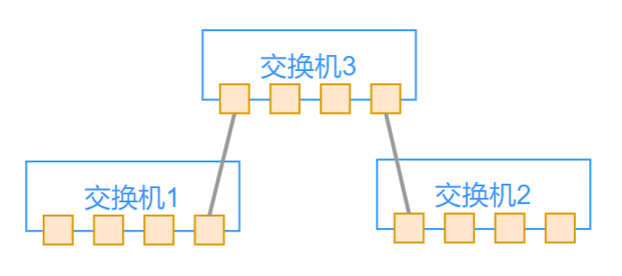

<!DOCTYPE html><html lang="zh-CN" data-theme="light"><head><meta charset="UTF-8"><meta http-equiv="X-UA-Compatible" content="IE=edge"><meta name="viewport" content="width=device-width, initial-scale=1.0,viewport-fit=cover"><title>网络配置和高级功能 | ૮(˶ᵔ ᵕ ᵔ˶)ა</title><meta name="author" content="૮(˶ᵔ ᵕ ᵔ˶)ა"><meta name="copyright" content="૮(˶ᵔ ᵕ ᵔ˶)ა"><meta name="format-detection" content="telephone=no"><meta name="theme-color" content="ffffff"><meta name="description" content="老马 2023 SRE">
<meta property="og:type" content="article">
<meta property="og:title" content="网络配置和高级功能">
<meta property="og:url" content="http://example.com/2024/11/26/SRE-%E7%BD%91%E7%BB%9C%E9%85%8D%E7%BD%AE%E5%92%8C%E9%AB%98%E7%BA%A7%E5%8A%9F%E8%83%BD/index.html">
<meta property="og:site_name" content="૮(˶ᵔ ᵕ ᵔ˶)ა">
<meta property="og:description" content="老马 2023 SRE">
<meta property="og:locale" content="zh_CN">
<meta property="og:image" content="http://example.com/images/title/network.jpg">
<meta property="article:published_time" content="2024-11-26T04:00:00.000Z">
<meta property="article:modified_time" content="2024-11-26T14:41:07.448Z">
<meta property="article:author" content="૮(˶ᵔ ᵕ ᵔ˶)ა">
<meta property="article:tag" content="SRE">
<meta name="twitter:card" content="summary">
<meta name="twitter:image" content="http://example.com/images/title/network.jpg"><link rel="shortcut icon" href="/../images/title/user.webp"><link rel="canonical" href="http://example.com/2024/11/26/SRE-%E7%BD%91%E7%BB%9C%E9%85%8D%E7%BD%AE%E5%92%8C%E9%AB%98%E7%BA%A7%E5%8A%9F%E8%83%BD/index.html"><link rel="preconnect" href="//cdn.jsdelivr.net"/><link rel="preconnect" href="//fonts.googleapis.com" crossorigin=""/><link rel="preconnect" href="//busuanzi.ibruce.info"/><link rel="stylesheet" href="/css/index.css"><link rel="stylesheet" href="https://cdn.jsdelivr.net/npm/@fortawesome/fontawesome-free/css/all.min.css" media="print" onload="this.media='all'"><link rel="stylesheet" href="https://cdn.jsdelivr.net/npm/node-snackbar/dist/snackbar.min.css" media="print" onload="this.media='all'"><link rel="stylesheet" href="https://cdn.jsdelivr.net/npm/@fancyapps/ui/dist/fancybox/fancybox.min.css" media="print" onload="this.media='all'"><link rel="stylesheet" href="https://fonts.googleapis.com/css?family=Titillium+Web&amp;display=swap" media="print" onload="this.media='all'"><script>const GLOBAL_CONFIG = { 
  root: '/',
  algolia: undefined,
  localSearch: undefined,
  translate: undefined,
  noticeOutdate: undefined,
  highlight: {"plugin":"highlighjs","highlightCopy":true,"highlightLang":false,"highlightHeightLimit":false},
  copy: {
    success: '复制成功',
    error: '复制错误',
    noSupport: '浏览器不支持'
  },
  relativeDate: {
    homepage: true,
    post: true
  },
  runtime: '天',
  dateSuffix: {
    just: '刚刚',
    min: '分钟前',
    hour: '小时前',
    day: '天前',
    month: '个月前'
  },
  copyright: undefined,
  lightbox: 'fancybox',
  Snackbar: {"chs_to_cht":"你已切换为繁体","cht_to_chs":"你已切换为简体","day_to_night":"你已切换为深色模式","night_to_day":"你已切换为浅色模式","bgLight":"#49b1f5","bgDark":"#1f1f1f","position":"top-center"},
  source: {
    justifiedGallery: {
      js: 'https://cdn.jsdelivr.net/npm/flickr-justified-gallery/dist/fjGallery.min.js',
      css: 'https://cdn.jsdelivr.net/npm/flickr-justified-gallery/dist/fjGallery.min.css'
    }
  },
  isPhotoFigcaption: false,
  islazyload: false,
  isAnchor: false,
  percent: {
    toc: true,
    rightside: true,
  }
}</script><script id="config-diff">var GLOBAL_CONFIG_SITE = {
  title: '网络配置和高级功能',
  isPost: true,
  isHome: false,
  isHighlightShrink: undefined,
  isToc: true,
  postUpdate: '2024-11-26 22:41:07'
}</script><noscript><style type="text/css">
  #nav {
    opacity: 1
  }
  .justified-gallery img {
    opacity: 1
  }

  #recent-posts time,
  #post-meta time {
    display: inline !important
  }
</style></noscript><script>(win=>{
    win.saveToLocal = {
      set: function setWithExpiry(key, value, ttl) {
        if (ttl === 0) return
        const now = new Date()
        const expiryDay = ttl * 86400000
        const item = {
          value: value,
          expiry: now.getTime() + expiryDay,
        }
        localStorage.setItem(key, JSON.stringify(item))
      },

      get: function getWithExpiry(key) {
        const itemStr = localStorage.getItem(key)

        if (!itemStr) {
          return undefined
        }
        const item = JSON.parse(itemStr)
        const now = new Date()

        if (now.getTime() > item.expiry) {
          localStorage.removeItem(key)
          return undefined
        }
        return item.value
      }
    }
  
    win.getScript = url => new Promise((resolve, reject) => {
      const script = document.createElement('script')
      script.src = url
      script.async = true
      script.onerror = reject
      script.onload = script.onreadystatechange = function() {
        const loadState = this.readyState
        if (loadState && loadState !== 'loaded' && loadState !== 'complete') return
        script.onload = script.onreadystatechange = null
        resolve()
      }
      document.head.appendChild(script)
    })
  
    win.getCSS = (url,id = false) => new Promise((resolve, reject) => {
      const link = document.createElement('link')
      link.rel = 'stylesheet'
      link.href = url
      if (id) link.id = id
      link.onerror = reject
      link.onload = link.onreadystatechange = function() {
        const loadState = this.readyState
        if (loadState && loadState !== 'loaded' && loadState !== 'complete') return
        link.onload = link.onreadystatechange = null
        resolve()
      }
      document.head.appendChild(link)
    })
  
      win.activateDarkMode = function () {
        document.documentElement.setAttribute('data-theme', 'dark')
        if (document.querySelector('meta[name="theme-color"]') !== null) {
          document.querySelector('meta[name="theme-color"]').setAttribute('content', '#0d0d0d')
        }
      }
      win.activateLightMode = function () {
        document.documentElement.setAttribute('data-theme', 'light')
        if (document.querySelector('meta[name="theme-color"]') !== null) {
          document.querySelector('meta[name="theme-color"]').setAttribute('content', 'ffffff')
        }
      }
      const t = saveToLocal.get('theme')
    
          if (t === 'dark') activateDarkMode()
          else if (t === 'light') activateLightMode()
        
      const asideStatus = saveToLocal.get('aside-status')
      if (asideStatus !== undefined) {
        if (asideStatus === 'hide') {
          document.documentElement.classList.add('hide-aside')
        } else {
          document.documentElement.classList.remove('hide-aside')
        }
      }
    
    const detectApple = () => {
      if(/iPad|iPhone|iPod|Macintosh/.test(navigator.userAgent)){
        document.documentElement.classList.add('apple')
      }
    }
    detectApple()
    })(window)</script><link rel="stylesheet" href="/css/custom.css"  media="defer" onload="this.media='all'"><meta name="generator" content="Hexo 5.4.2"></head><body><div id="web_bg"></div><div id="sidebar"><div id="menu-mask"></div><div id="sidebar-menus"><div class="avatar-img is-center"></div><div class="sidebar-site-data site-data is-center"><a href="/archives/"><div class="headline">文章</div><div class="length-num">87</div></a><a href="/tags/"><div class="headline">标签</div><div class="length-num">29</div></a><a href="/categories/"><div class="headline">分类</div><div class="length-num">4</div></a></div><hr/><div class="menus_items"><div class="menus_item"><a class="site-page" href="/"><i class="fa-fw fas fa-home"></i><span> 首页</span></a></div><div class="menus_item"><a class="site-page" href="/archives/"><i class="fa-fw fas fa-archive"></i><span> 时间线</span></a></div><div class="menus_item"><a class="site-page" href="/categories/"><i class="fa-fw fas fa-folder-open"></i><span> 分类</span></a></div><div class="menus_item"><a class="site-page" href="/tags/"><i class="fa-fw fas fa-tags"></i><span> 标签</span></a></div><div class="menus_item"><a class="site-page" href="/link/"><i class="fa-fw fas fa-link"></i><span> 友链</span></a></div></div></div></div><div class="post" id="body-wrap"><header class="post-bg" id="page-header" style="background-image: url('/../images/title/network.jpg')"><nav id="nav"><span id="blog-info"><a href="/" title="૮(˶ᵔ ᵕ ᵔ˶)ა"><span class="site-name">૮(˶ᵔ ᵕ ᵔ˶)ა</span></a></span><div id="menus"><div class="menus_items"><div class="menus_item"><a class="site-page" href="/"><i class="fa-fw fas fa-home"></i><span> 首页</span></a></div><div class="menus_item"><a class="site-page" href="/archives/"><i class="fa-fw fas fa-archive"></i><span> 时间线</span></a></div><div class="menus_item"><a class="site-page" href="/categories/"><i class="fa-fw fas fa-folder-open"></i><span> 分类</span></a></div><div class="menus_item"><a class="site-page" href="/tags/"><i class="fa-fw fas fa-tags"></i><span> 标签</span></a></div><div class="menus_item"><a class="site-page" href="/link/"><i class="fa-fw fas fa-link"></i><span> 友链</span></a></div></div><div id="toggle-menu"><a class="site-page" href="javascript:void(0);"><i class="fas fa-bars fa-fw"></i></a></div></div></nav><div id="post-info"><h1 class="post-title">网络配置和高级功能</h1><div id="post-meta"><div class="meta-firstline"><span class="post-meta-date"><i class="far fa-calendar-alt fa-fw post-meta-icon"></i><span class="post-meta-label">发表于</span><time class="post-meta-date-created" datetime="2024-11-26T04:00:00.000Z" title="发表于 2024-11-26 12:00:00">2024-11-26</time><span class="post-meta-separator">|</span><i class="fas fa-history fa-fw post-meta-icon"></i><span class="post-meta-label">更新于</span><time class="post-meta-date-updated" datetime="2024-11-26T14:41:07.448Z" title="更新于 2024-11-26 22:41:07">2024-11-26</time></span><span class="post-meta-categories"><span class="post-meta-separator">|</span><i class="fas fa-inbox fa-fw post-meta-icon"></i><a class="post-meta-categories" href="/categories/%E5%AE%9D%E5%89%91%E9%94%8B%E4%BB%8E%E7%A3%A8%E7%A0%BA%E5%87%BA/">宝剑锋从磨砺出</a></span></div><div class="meta-secondline"><span class="post-meta-separator">|</span><span class="post-meta-wordcount"><i class="far fa-file-word fa-fw post-meta-icon"></i><span class="post-meta-label">字数总计:</span><span class="word-count">21.3k</span><span class="post-meta-separator">|</span><i class="far fa-clock fa-fw post-meta-icon"></i><span class="post-meta-label">阅读时长:</span><span>106分钟</span></span><span class="post-meta-separator">|</span><span class="post-meta-pv-cv" id="" data-flag-title="网络配置和高级功能"><i class="far fa-eye fa-fw post-meta-icon"></i><span class="post-meta-label">阅读量:</span><span id="busuanzi_value_page_pv"><i class="fa-solid fa-spinner fa-spin"></i></span></span></div></div></div></header><main class="layout" id="content-inner"><div id="post"><article class="post-content" id="article-container"><h1 id="网络配置"><a href="#网络配置" class="headerlink" title="网络配置"></a>网络配置</h1><h2 id="NAT和仅主机"><a href="#NAT和仅主机" class="headerlink" title="NAT和仅主机"></a>NAT和仅主机</h2><p></p>
<p><strong>VMware 中的网络模式</strong></p>
<table>
<thead>
<tr>
<th>连接模式</th>
<th>特点</th>
</tr>
</thead>
<tbody><tr>
<td>桥接</td>
<td>虚拟机和物理机连接同一网络，两者之间是并列关系，通过Vmnet0 这个HUB连接</td>
</tr>
<tr>
<td>NAT</td>
<td>虚拟机通过Vmnet8这个HUB互相连接，再通过物理机上的Vmnet8网卡连接物理机，能访问外网，物理机充当路由器</td>
</tr>
<tr>
<td>仅主机</td>
<td>虚拟机通过Vmnet1这个HUB互相连接，再通过物理机上的Vmnet1网卡连接物理机，不能访问外网</td>
</tr>
</tbody></table>
<h2 id="统一网卡名称"><a href="#统一网卡名称" class="headerlink" title="统一网卡名称"></a>统一网卡名称</h2><p>CentOS 6之前，网络接口使用连续号码命名：eth0、eth1等，但是，如果再新增硬件设备，也有可能会被识别成 eth0，eth1 等； </p>
<p>CentOS 7开始，改变了网卡设备命名规则，基于硬件生成网卡名，例如 ens33,ens160 等，可以保证网卡名称稳定且唯一；但是在批量环境中，没办法统一；</p>
<p>出于批量管理，以及脚本的通用性等方面的考虑；</p>
<p>在某些情况下，需要将新的网卡命名规则改成传统的命名方式；即将 ens33,ens160等名称改为 eth0,eth1 这样；</p>
<p>修改方法</p>
<figure class="highlight sh"><table><tr><td class="gutter"><pre><span class="line">1</span><br><span class="line">2</span><br><span class="line">3</span><br><span class="line">4</span><br><span class="line">5</span><br><span class="line">6</span><br><span class="line">7</span><br><span class="line">8</span><br><span class="line">9</span><br><span class="line">10</span><br><span class="line">11</span><br><span class="line">12</span><br><span class="line">13</span><br><span class="line">14</span><br><span class="line">15</span><br><span class="line">16</span><br><span class="line">17</span><br><span class="line">18</span><br><span class="line">19</span><br><span class="line">20</span><br><span class="line">21</span><br><span class="line">22</span><br></pre></td><td class="code"><pre><span class="line">修改 /etc/default/grub 在 GRUB_CMDLINE_LINUX 行后面加上 net.ifnames=0</span><br><span class="line">修改网卡配置文件，将原网卡名的相关内容替换成新的</span><br><span class="line">重新读取配置文件，并重启</span><br><span class="line"></span><br><span class="line">Rocky8.6</span><br><span class="line"></span><br><span class="line">修改 /etc/sysconfig/network-scripts/ifcfg-ens160 将文件内的 ens160 替换成 eth0</span><br><span class="line"></span><br><span class="line">并修改文件名，将 ifcfg-ens160 修改成 ifcfg-eth0</span><br><span class="line"></span><br><span class="line">重新读取配置文件</span><br><span class="line">基于UEFI模式引导的系统 grub2-mkconfig -o /boot/efi/EFI/redhat/grub.cfg</span><br><span class="line">基于BIOS模式引导的系统 grub2-mkconfig -o /boot/grub2/grub.cfg</span><br><span class="line"></span><br><span class="line">再执行重启 reboot</span><br><span class="line"></span><br><span class="line">Ubuntu22.04</span><br><span class="line"></span><br><span class="line">重新读取配置文件</span><br><span class="line">grub-mkconfig -o /boot/grub/grub.cfg</span><br><span class="line"></span><br><span class="line">再执行重启 reboot</span><br></pre></td></tr></table></figure>

<p><strong>Rocky8.6</strong></p>
<figure class="highlight sh"><table><tr><td class="gutter"><pre><span class="line">1</span><br><span class="line">2</span><br><span class="line">3</span><br><span class="line">4</span><br><span class="line">5</span><br><span class="line">6</span><br><span class="line">7</span><br><span class="line">8</span><br><span class="line">9</span><br><span class="line">10</span><br><span class="line">11</span><br><span class="line">12</span><br><span class="line">13</span><br><span class="line">14</span><br><span class="line">15</span><br><span class="line">16</span><br><span class="line">17</span><br><span class="line">18</span><br><span class="line">19</span><br><span class="line">20</span><br><span class="line">21</span><br><span class="line">22</span><br><span class="line">23</span><br><span class="line">24</span><br><span class="line">25</span><br><span class="line">26</span><br><span class="line">27</span><br><span class="line">28</span><br><span class="line">29</span><br><span class="line">30</span><br><span class="line">31</span><br><span class="line">32</span><br><span class="line">33</span><br><span class="line">34</span><br><span class="line">35</span><br><span class="line">36</span><br><span class="line">37</span><br><span class="line">38</span><br><span class="line">39</span><br><span class="line">40</span><br><span class="line">41</span><br><span class="line">42</span><br><span class="line">43</span><br><span class="line">44</span><br><span class="line">45</span><br><span class="line">46</span><br><span class="line">47</span><br><span class="line">48</span><br><span class="line">49</span><br><span class="line">50</span><br><span class="line">51</span><br><span class="line">52</span><br><span class="line">53</span><br><span class="line">54</span><br><span class="line">55</span><br><span class="line">56</span><br><span class="line">57</span><br><span class="line">58</span><br></pre></td><td class="code"><pre><span class="line"><span class="comment">#查看</span></span><br><span class="line">[root@rocky86 ~]<span class="comment"># ip a</span></span><br><span class="line">1: lo: &lt;LOOPBACK,UP,LOWER_UP&gt; mtu 65536 qdisc noqueue state UNKNOWN group </span><br><span class="line">default qlen 1000</span><br><span class="line">   <span class="built_in">link</span>/loopback 00:00:00:00:00:00 brd 00:00:00:00:00:00</span><br><span class="line">   inet 127.0.0.1/8 scope host lo</span><br><span class="line">       valid_lft forever preferred_lft forever</span><br><span class="line">   inet6 ::1/128 scope host </span><br><span class="line">       valid_lft forever preferred_lft forever</span><br><span class="line">2: ens160: &lt;BROADCAST,MULTICAST,UP,LOWER_UP&gt; mtu 1500 qdisc mq state UP group </span><br><span class="line">default qlen 1000</span><br><span class="line">   <span class="built_in">link</span>/ether 00:0c:29:f3:44:9a brd ff:ff:ff:ff:ff:ff</span><br><span class="line">   inet 10.0.0.158/24 brd 10.0.0.255 scope global dynamic noprefixroute ens160</span><br><span class="line">       valid_lft 1728sec preferred_lft 1728sec</span><br><span class="line">   inet6 fe80::20c:29ff:fef3:449a/64 scope <span class="built_in">link</span> noprefixroute </span><br><span class="line">       valid_lft forever preferred_lft forever</span><br><span class="line">5: virbr0: &lt;NO-CARRIER,BROADCAST,MULTICAST,UP&gt; mtu 1500 qdisc noqueue state DOWN </span><br><span class="line">group default qlen 1000</span><br><span class="line">   <span class="built_in">link</span>/ether 52:54:00:b3:0b:96 brd ff:ff:ff:ff:ff:ff</span><br><span class="line">   inet 192.168.122.1/24 brd 192.168.122.255 scope global virbr0</span><br><span class="line">       valid_lft forever preferred_lft forever</span><br><span class="line"></span><br><span class="line"></span><br><span class="line"><span class="comment">#修改</span></span><br><span class="line">[root@rocky86 ~]<span class="comment"># vim /etc/default/grub </span></span><br><span class="line">GRUB_CMDLINE_LINUX=<span class="string">&quot;crashkernel=auto resume=/dev/mapper/rl-swap rd.lvm.lv=rl/root rd.lvm.lv=rl/swap rhgb quiet net.ifnames=0&quot;</span></span><br><span class="line"></span><br><span class="line"><span class="comment">#修改, 将文件内的ens160改成 eth0</span></span><br><span class="line">[root@rocky86 ~]<span class="comment"># vim /etc/sysconfig/network-scripts/ifcfg-ens160</span></span><br><span class="line"><span class="comment">#修改文件名</span></span><br><span class="line">[root@rocky86 ~]<span class="comment"># mv /etc/sysconfig/network-scripts/ifcfg-ens160 etc/sysconfig/network-scripts/ifcfg-eth0</span></span><br><span class="line"></span><br><span class="line"><span class="comment">#重读配置文件并重启</span></span><br><span class="line">[root@rocky86 ~]<span class="comment"># grub2-mkconfig -o /etc/grub2.cfg;reboot</span></span><br><span class="line">Generating grub configuration file ...</span><br><span class="line"><span class="keyword">done</span></span><br><span class="line"></span><br><span class="line"><span class="comment">#再次查看</span></span><br><span class="line">[root@rocky86 ~]<span class="comment"># ip a</span></span><br><span class="line">1: lo: &lt;LOOPBACK,UP,LOWER_UP&gt; mtu 65536 qdisc noqueue state UNKNOWN group </span><br><span class="line">default qlen 1000</span><br><span class="line">   <span class="built_in">link</span>/loopback 00:00:00:00:00:00 brd 00:00:00:00:00:00</span><br><span class="line">   inet 127.0.0.1/8 scope host lo</span><br><span class="line">       valid_lft forever preferred_lft forever</span><br><span class="line">   inet6 ::1/128 scope host </span><br><span class="line">       valid_lft forever preferred_lft forever</span><br><span class="line">2: eth0: &lt;BROADCAST,MULTICAST,UP,LOWER_UP&gt; mtu 1500 qdisc mq state UP group </span><br><span class="line">default qlen 1000</span><br><span class="line">   <span class="built_in">link</span>/ether 00:0c:29:f3:44:9a brd ff:ff:ff:ff:ff:ff</span><br><span class="line">   inet 10.0.0.158/24 brd 10.0.0.255 scope global dynamic noprefixroute eth0</span><br><span class="line">       valid_lft 1776sec preferred_lft 1776sec</span><br><span class="line">   inet6 fe80::20c:29ff:fef3:449a/64 scope <span class="built_in">link</span> noprefixroute </span><br><span class="line">       valid_lft forever preferred_lft forever</span><br><span class="line">3: virbr0: &lt;NO-CARRIER,BROADCAST,MULTICAST,UP&gt; mtu 1500 qdisc noqueue state DOWN </span><br><span class="line">group default qlen 1000</span><br><span class="line">   <span class="built_in">link</span>/ether 52:54:00:b3:0b:96 brd ff:ff:ff:ff:ff:ff</span><br><span class="line">   inet 192.168.122.1/24 brd 192.168.122.255 scope global virbr0</span><br><span class="line">       valid_lft forever preferred_lft forever</span><br></pre></td></tr></table></figure>

<p><strong>Ubuntu22.04</strong></p>
<figure class="highlight sh"><table><tr><td class="gutter"><pre><span class="line">1</span><br><span class="line">2</span><br><span class="line">3</span><br><span class="line">4</span><br><span class="line">5</span><br><span class="line">6</span><br><span class="line">7</span><br><span class="line">8</span><br><span class="line">9</span><br><span class="line">10</span><br><span class="line">11</span><br><span class="line">12</span><br><span class="line">13</span><br><span class="line">14</span><br><span class="line">15</span><br><span class="line">16</span><br><span class="line">17</span><br><span class="line">18</span><br><span class="line">19</span><br><span class="line">20</span><br><span class="line">21</span><br><span class="line">22</span><br><span class="line">23</span><br><span class="line">24</span><br><span class="line">25</span><br><span class="line">26</span><br><span class="line">27</span><br><span class="line">28</span><br><span class="line">29</span><br><span class="line">30</span><br><span class="line">31</span><br><span class="line">32</span><br><span class="line">33</span><br><span class="line">34</span><br><span class="line">35</span><br><span class="line">36</span><br><span class="line">37</span><br><span class="line">38</span><br><span class="line">39</span><br><span class="line">40</span><br><span class="line">41</span><br><span class="line">42</span><br><span class="line">43</span><br><span class="line">44</span><br><span class="line">45</span><br><span class="line">46</span><br><span class="line">47</span><br><span class="line">48</span><br><span class="line">49</span><br><span class="line">50</span><br><span class="line">51</span><br><span class="line">52</span><br><span class="line">53</span><br><span class="line">54</span><br><span class="line">55</span><br></pre></td><td class="code"><pre><span class="line"><span class="comment">#查看</span></span><br><span class="line">root@ubuntu22:~<span class="comment"># ip a</span></span><br><span class="line">1: lo: &lt;LOOPBACK,UP,LOWER_UP&gt; mtu 65536 qdisc noqueue state UNKNOWN group </span><br><span class="line">default qlen 1000</span><br><span class="line">   <span class="built_in">link</span>/loopback 00:00:00:00:00:00 brd 00:00:00:00:00:00</span><br><span class="line">   inet 127.0.0.1/8 scope host lo</span><br><span class="line">       valid_lft forever preferred_lft forever</span><br><span class="line">   inet6 ::1/128 scope host </span><br><span class="line">       valid_lft forever preferred_lft forever</span><br><span class="line">2: ens33: &lt;BROADCAST,MULTICAST,UP,LOWER_UP&gt; mtu 1500 qdisc fq_codel state UP </span><br><span class="line">group default qlen 1000</span><br><span class="line">   <span class="built_in">link</span>/ether 00:0c:29:29:55:5d brd ff:ff:ff:ff:ff:ff</span><br><span class="line">   altname enp2s1</span><br><span class="line">   inet 10.0.0.159/24 metric 100 brd 10.0.0.255 scope global dynamic ens33</span><br><span class="line">       valid_lft 1695sec preferred_lft 1695sec</span><br><span class="line">   inet6 fe80::20c:29ff:fe29:555d/64 scope <span class="built_in">link</span> </span><br><span class="line">       valid_lft forever preferred_lft forever</span><br><span class="line"></span><br><span class="line"></span><br><span class="line"><span class="comment">#修改</span></span><br><span class="line">root@ubuntu22:~<span class="comment"># vim /etc/default/grub</span></span><br><span class="line">GRUB_CMDLINE_LINUX=<span class="string">&quot; net.ifnames=0&quot;</span></span><br><span class="line"></span><br><span class="line"><span class="comment">#重读配置文件并重启</span></span><br><span class="line">root@ubuntu22:~<span class="comment"># grub-mkconfig -o /boot/grub/grub.cfg;reboot</span></span><br><span class="line">Sourcing file `/etc/default/grub<span class="string">&#x27;</span></span><br><span class="line"><span class="string">Sourcing file `/etc/default/grub.d/init-select.cfg&#x27;</span></span><br><span class="line">Generating grub configuration file ...</span><br><span class="line">Found linux image: /boot/vmlinuz-5.15.0-43-generic</span><br><span class="line">Found initrd image: /boot/initrd.img-5.15.0-43-generic</span><br><span class="line">Found linux image: /boot/vmlinuz-5.15.0-41-generic</span><br><span class="line">Found initrd image: /boot/initrd.img-5.15.0-41-generic</span><br><span class="line">Warning: os-prober will not be executed to detect other bootable partitions.</span><br><span class="line">Systems on them will not be added to the GRUB boot configuration.</span><br><span class="line">Check GRUB_DISABLE_OS_PROBER documentation entry.</span><br><span class="line"><span class="keyword">done</span></span><br><span class="line"></span><br><span class="line"><span class="comment">#再次查看</span></span><br><span class="line">root@ubuntu22:~<span class="comment"># ip a</span></span><br><span class="line">1: lo: &lt;LOOPBACK,UP,LOWER_UP&gt; mtu 65536 qdisc noqueue state UNKNOWN group </span><br><span class="line">default qlen 1000</span><br><span class="line">   <span class="built_in">link</span>/loopback 00:00:00:00:00:00 brd 00:00:00:00:00:00</span><br><span class="line">   inet 127.0.0.1/8 scope host lo</span><br><span class="line">       valid_lft forever preferred_lft forever</span><br><span class="line">   inet6 ::1/128 scope host </span><br><span class="line">       valid_lft forever preferred_lft forever</span><br><span class="line">2: eth0: &lt;BROADCAST,MULTICAST,UP,LOWER_UP&gt; mtu 1500 qdisc fq_codel state UP </span><br><span class="line">group default qlen 1000</span><br><span class="line">   <span class="built_in">link</span>/ether 00:0c:29:29:55:5d brd ff:ff:ff:ff:ff:ff</span><br><span class="line">   altname enp2s1</span><br><span class="line">   altname ens33</span><br><span class="line">   inet 10.0.0.159/24 metric 100 brd 10.0.0.255 scope global dynamic eth0</span><br><span class="line">       valid_lft 1551sec preferred_lft 1551sec</span><br><span class="line">   inet6 fe80::20c:29ff:fe29:555d/64 scope <span class="built_in">link</span> </span><br><span class="line">       valid_lft forever preferred_lft forever</span><br></pre></td></tr></table></figure>

<p><strong>临时修改网卡名</strong></p>
<figure class="highlight sh"><table><tr><td class="gutter"><pre><span class="line">1</span><br><span class="line">2</span><br><span class="line">3</span><br></pre></td><td class="code"><pre><span class="line">[root@Rocky86 ~]<span class="comment"># ip link set ens160 down</span></span><br><span class="line">[root@Rocky86 ~]<span class="comment"># ip link set ens160 name abc</span></span><br><span class="line">[root@Rocky86 ~]<span class="comment"># ip link set abc up</span></span><br></pre></td></tr></table></figure>

<h2 id="网络配置-1"><a href="#网络配置-1" class="headerlink" title="网络配置"></a>网络配置</h2><p>将主机接入到网络，需要进行网络配置，每个网卡，都需要有对应的配置文件，才能永久生效</p>
<h3 id="网络配置的两种方式"><a href="#网络配置的两种方式" class="headerlink" title="网络配置的两种方式"></a>网络配置的两种方式</h3><p><strong>静态指定：</strong> </p>
<p>static，写在配置文件中，不会根据环境的改变而发生变化</p>
<p><strong>动态分配：</strong></p>
<p>DHCP，Dynamic Host Configuration Protocol，根据动态主机配置协议生成相应的配置</p>
<h3 id="Red-Hat-系列网卡配置"><a href="#Red-Hat-系列网卡配置" class="headerlink" title="Red Hat 系列网卡配置"></a>Red Hat 系列网卡配置</h3><p><strong>配置文件</strong></p>
<p>网卡配置文件存在于 /etc/sysconfig/network-scripts/ 目录中，以 ifcfg-XXX的格式来命名路径是固定的，文件命名规则也是固定的</p>
<figure class="highlight sh"><table><tr><td class="gutter"><pre><span class="line">1</span><br><span class="line">2</span><br><span class="line">3</span><br><span class="line">4</span><br><span class="line">5</span><br><span class="line">6</span><br><span class="line">7</span><br><span class="line">8</span><br><span class="line">9</span><br><span class="line">10</span><br><span class="line">11</span><br><span class="line">12</span><br><span class="line">13</span><br><span class="line">14</span><br><span class="line">15</span><br><span class="line">16</span><br><span class="line">17</span><br><span class="line">18</span><br><span class="line">19</span><br><span class="line">20</span><br></pre></td><td class="code"><pre><span class="line">[root@rocky86 ~]<span class="comment"># ll /etc/sysconfig/network-scripts/</span></span><br><span class="line">total 4</span><br><span class="line">-rw-r--r-- 1 root root 244 Aug 10 14:57 ifcfg-eth0</span><br><span class="line"></span><br><span class="line"></span><br><span class="line">[root@rocky86 ~]<span class="comment"># cat /etc/sysconfig/network-scripts/ifcfg-eth0 </span></span><br><span class="line">TYPE=Ethernet</span><br><span class="line">PROXY_METHOD=none</span><br><span class="line">BROWSER_ONLY=no</span><br><span class="line">BOOTPROTO=dhcp</span><br><span class="line">DEFROUTE=<span class="built_in">yes</span></span><br><span class="line">IPV4_FAILURE_FATAL=no</span><br><span class="line">IPV6INIT=<span class="built_in">yes</span></span><br><span class="line">IPV6_AUTOCONF=<span class="built_in">yes</span></span><br><span class="line">IPV6_DEFROUTE=<span class="built_in">yes</span></span><br><span class="line">IPV6_FAILURE_FATAL=no</span><br><span class="line">NAME=eth0</span><br><span class="line">UUID=5c093cad-84c9-4cfc-8b6f-e1041db357df</span><br><span class="line">DEVICE=eth0</span><br><span class="line">ONBOOT=<span class="built_in">yes</span></span><br></pre></td></tr></table></figure>

<p><strong>常用配置项</strong></p>
<p></p>
<p><strong>添加一块网卡，并指定NAT模式</strong></p>
<figure class="highlight sh"><table><tr><td class="gutter"><pre><span class="line">1</span><br><span class="line">2</span><br><span class="line">3</span><br><span class="line">4</span><br><span class="line">5</span><br><span class="line">6</span><br><span class="line">7</span><br><span class="line">8</span><br><span class="line">9</span><br><span class="line">10</span><br><span class="line">11</span><br><span class="line">12</span><br><span class="line">13</span><br><span class="line">14</span><br><span class="line">15</span><br><span class="line">16</span><br><span class="line">17</span><br><span class="line">18</span><br><span class="line">19</span><br><span class="line">20</span><br><span class="line">21</span><br><span class="line">22</span><br><span class="line">23</span><br><span class="line">24</span><br><span class="line">25</span><br><span class="line">26</span><br><span class="line">27</span><br><span class="line">28</span><br><span class="line">29</span><br><span class="line">30</span><br><span class="line">31</span><br><span class="line">32</span><br><span class="line">33</span><br><span class="line">34</span><br><span class="line">35</span><br></pre></td><td class="code"><pre><span class="line">[root@rocky86 ~]<span class="comment"># cd /etc/sysconfig/network-scripts</span></span><br><span class="line">[root@rocky86 network-scripts]<span class="comment"># vim ifcfg-eth1</span></span><br><span class="line">DEVICE=eth1</span><br><span class="line">NAME=con-eth1</span><br><span class="line">IPADDR=10.0.0.88</span><br><span class="line">PREFIX=24</span><br><span class="line">GATEWAY=10.0.0.2</span><br><span class="line">DNS1=10.0.0.2</span><br><span class="line">DNS2=114.114.114</span><br><span class="line"></span><br><span class="line"><span class="comment">#查看</span></span><br><span class="line">[root@rocky86 network-scripts]<span class="comment"># nmcli connection</span></span><br><span class="line">NAME   UUID                                 TYPE     DEVICE </span><br><span class="line">eth0   5c093cad-84c9-4cfc-8b6f-e1041db357df ethernet eth0   </span><br><span class="line">virbr0 77c5c6bc-b04f-4ae4-a8eb-16fdf62e9a70 bridge   virbr0</span><br><span class="line"></span><br><span class="line">[root@rocky86 network-scripts]<span class="comment"># nmcli connection reload</span></span><br><span class="line"></span><br><span class="line"><span class="comment">#再次查看</span></span><br><span class="line">[root@rocky86 network-scripts]<span class="comment"># nmcli connection</span></span><br><span class="line">NAME     UUID                                 TYPE     DEVICE </span><br><span class="line">eth0     5c093cad-84c9-4cfc-8b6f-e1041db357df ethernet eth0   </span><br><span class="line">con-eth1 9c92fad9-6ecb-3e6c-eb4d-8a47c6f50c04 ethernet eth1   </span><br><span class="line">virbr0   77c5c6bc-b04f-4ae4-a8eb-16fdf62e9a70 bridge   virbr0</span><br><span class="line"></span><br><span class="line"><span class="comment">#查看</span></span><br><span class="line">[root@rocky86 network-scripts]<span class="comment"># ifconfig eth1</span></span><br><span class="line">eth1: flags=4163&lt;UP,BROADCAST,RUNNING,MULTICAST&gt; mtu 1500</span><br><span class="line">       inet 10.0.0.88 netmask 255.255.255.0 broadcast 10.0.0.255</span><br><span class="line">       inet6 fe80::20c:29ff:fef3:44a4 prefixlen 64 scopeid 0x20&lt;<span class="built_in">link</span>&gt;</span><br><span class="line">       ether 00:0c:29:f3:44:a4 txqueuelen 1000 (Ethernet)</span><br><span class="line">       RX packets 23 bytes 2911 (2.8 KiB)</span><br><span class="line">       RX errors 0 dropped 0 overruns 0 frame 0</span><br><span class="line">       TX packets 51 bytes 5768 (5.6 KiB)</span><br><span class="line">       TX errors 0 dropped 0 overruns 0 carrier 0 collisions 0</span><br></pre></td></tr></table></figure>

<p><strong>rocky9版本</strong></p>
<figure class="highlight sh"><table><tr><td class="gutter"><pre><span class="line">1</span><br><span class="line">2</span><br><span class="line">3</span><br><span class="line">4</span><br><span class="line">5</span><br><span class="line">6</span><br><span class="line">7</span><br><span class="line">8</span><br><span class="line">9</span><br><span class="line">10</span><br><span class="line">11</span><br><span class="line">12</span><br><span class="line">13</span><br><span class="line">14</span><br><span class="line">15</span><br><span class="line">16</span><br><span class="line">17</span><br><span class="line">18</span><br><span class="line">19</span><br><span class="line">20</span><br><span class="line">21</span><br><span class="line">22</span><br><span class="line">23</span><br><span class="line">24</span><br><span class="line">25</span><br><span class="line">26</span><br><span class="line">27</span><br><span class="line">28</span><br><span class="line">29</span><br><span class="line">30</span><br><span class="line">31</span><br><span class="line">32</span><br><span class="line">33</span><br><span class="line">34</span><br><span class="line">35</span><br><span class="line">36</span><br><span class="line">37</span><br><span class="line">38</span><br><span class="line">39</span><br><span class="line">40</span><br><span class="line">41</span><br><span class="line">42</span><br><span class="line">43</span><br><span class="line">44</span><br><span class="line">45</span><br><span class="line">46</span><br><span class="line">47</span><br><span class="line">48</span><br><span class="line">49</span><br><span class="line">50</span><br><span class="line">51</span><br><span class="line">52</span><br><span class="line">53</span><br><span class="line">54</span><br><span class="line">55</span><br><span class="line">56</span><br><span class="line">57</span><br><span class="line">58</span><br><span class="line">59</span><br><span class="line">60</span><br><span class="line">61</span><br><span class="line">62</span><br><span class="line">63</span><br><span class="line">64</span><br><span class="line">65</span><br><span class="line">66</span><br><span class="line">67</span><br><span class="line">68</span><br><span class="line">69</span><br><span class="line">70</span><br><span class="line">71</span><br><span class="line">72</span><br><span class="line">73</span><br><span class="line">74</span><br><span class="line">75</span><br><span class="line">76</span><br><span class="line">77</span><br><span class="line">78</span><br><span class="line">79</span><br></pre></td><td class="code"><pre><span class="line"><span class="comment"># 配置文件位置改变了</span></span><br><span class="line">[root@rocky ~]<span class="comment"># head -2 /etc/sysconfig/network-scripts/readme-ifcfg-rh.txt </span></span><br><span class="line">NetworkManager stores new network profiles <span class="keyword">in</span> keyfile format <span class="keyword">in</span> the</span><br><span class="line">/etc/NetworkManager/system-connections/ directory.</span><br><span class="line"></span><br><span class="line">[root@rocky ~]<span class="comment"># cd /etc/NetworkManager/system-connections/</span></span><br><span class="line">[root@rocky system-connections]<span class="comment"># ls</span></span><br><span class="line">ens160.nmconnection</span><br><span class="line"></span><br><span class="line"></span><br><span class="line">[root@rocky system-connections]<span class="comment"># cat ens224.nmconnection </span></span><br><span class="line">[connection]</span><br><span class="line"><span class="built_in">id</span>=ens224</span><br><span class="line"><span class="built_in">type</span>=ethernet</span><br><span class="line">autoconnect-priority=-999</span><br><span class="line">interface-name=ens224</span><br><span class="line">timestamp=1731977286</span><br><span class="line"></span><br><span class="line">[ethernet]</span><br><span class="line"></span><br><span class="line">[ipv4]</span><br><span class="line">address1=192.168.100.11/24,192.168.100.2</span><br><span class="line">dns=223.5.5.5;223.6.6.6;114.114.114.114;8.8.8.8;8.8.6.6;</span><br><span class="line">method=manual</span><br><span class="line"></span><br><span class="line">[ipv6]</span><br><span class="line">addr-gen-mode=eui64</span><br><span class="line">method=auto</span><br><span class="line"></span><br><span class="line">[proxy]</span><br><span class="line"></span><br><span class="line">[root@rocky system-connections]<span class="comment"># nmcli connection</span></span><br><span class="line">NAME                UUID                                  TYPE      DEVICE </span><br><span class="line">ens160              f334ca6b-bf42-3ab3-ad1f-3aaea7da854c  ethernet  ens160 </span><br><span class="line">Wired connection 1  a4d30586-2de7-3d29-9bcd-591380ded7e7  ethernet  ens224 </span><br><span class="line">lo                  f4b4eedb-3433-44b0-a767-6ba41fef4294  loopback  lo     </span><br><span class="line">ens224              4242c0f6-b9ba-39f4-b11e-fb965a79d709  ethernet  --     </span><br><span class="line"></span><br><span class="line">[root@rocky system-connections]<span class="comment"># nmcli connection up ens224</span></span><br><span class="line">Connection successfully activated (D-Bus active path: /org/freedesktop/NetworkManager/ActiveConnection/4)</span><br><span class="line"></span><br><span class="line">[root@rocky system-connections]<span class="comment"># ip a</span></span><br><span class="line">1: lo: &lt;LOOPBACK,UP,LOWER_UP&gt; mtu 65536 qdisc noqueue state UNKNOWN group default qlen 1000</span><br><span class="line">    <span class="built_in">link</span>/loopback 00:00:00:00:00:00 brd 00:00:00:00:00:00</span><br><span class="line">    inet 127.0.0.1/8 scope host lo</span><br><span class="line">       valid_lft forever preferred_lft forever</span><br><span class="line">    inet6 ::1/128 scope host </span><br><span class="line">       valid_lft forever preferred_lft forever</span><br><span class="line">2: ens160: &lt;BROADCAST,MULTICAST,UP,LOWER_UP&gt; mtu 1500 qdisc mq state UP group default qlen 1000</span><br><span class="line">    <span class="built_in">link</span>/ether 00:0c:29:6d:49:5a brd ff:ff:ff:ff:ff:ff</span><br><span class="line">    altname enp3s0</span><br><span class="line">    inet 192.168.1.11/24 brd 192.168.1.255 scope global noprefixroute ens160</span><br><span class="line">       valid_lft forever preferred_lft forever</span><br><span class="line">    inet6 fe80::20c:29ff:fe6d:495a/64 scope <span class="built_in">link</span> noprefixroute </span><br><span class="line">       valid_lft forever preferred_lft forever</span><br><span class="line">3: ens224: &lt;BROADCAST,MULTICAST,UP,LOWER_UP&gt; mtu 1500 qdisc mq state UP group default qlen 1000</span><br><span class="line">    <span class="built_in">link</span>/ether 00:0c:29:6d:49:64 brd ff:ff:ff:ff:ff:ff</span><br><span class="line">    altname enp19s0</span><br><span class="line">    inet 192.168.100.11/24 brd 192.168.100.255 scope global noprefixroute ens224</span><br><span class="line">       valid_lft forever preferred_lft forever</span><br><span class="line">    inet6 fe80::20c:29ff:fe6d:4964/64 scope <span class="built_in">link</span> noprefixroute </span><br><span class="line">       valid_lft forever preferred_lft forever</span><br><span class="line"></span><br><span class="line"><span class="comment"># 删掉刚开始的网卡</span></span><br><span class="line">[root@rocky system-connections]<span class="comment"># nmcli connection </span></span><br><span class="line">NAME                UUID                                  TYPE      DEVICE </span><br><span class="line">ens160              f334ca6b-bf42-3ab3-ad1f-3aaea7da854c  ethernet  ens160 </span><br><span class="line">ens224              4242c0f6-b9ba-39f4-b11e-fb965a79d709  ethernet  ens224 </span><br><span class="line">lo                  f4b4eedb-3433-44b0-a767-6ba41fef4294  loopback  lo     </span><br><span class="line">Wired connection 1  a4d30586-2de7-3d29-9bcd-591380ded7e7  ethernet  --     </span><br><span class="line"></span><br><span class="line">[root@rocky system-connections]<span class="comment"># nmcli connection delete Wired\ connection\ 1</span></span><br><span class="line">Connection <span class="string">&#x27;Wired connection 1&#x27;</span> (a4d30586-2de7-3d29-9bcd-591380ded7e7) successfully deleted.</span><br><span class="line"></span><br><span class="line">[root@rocky system-connections]<span class="comment"># nmcli connection </span></span><br><span class="line">NAME    UUID                                  TYPE      DEVICE </span><br><span class="line">ens160  f334ca6b-bf42-3ab3-ad1f-3aaea7da854c  ethernet  ens160 </span><br><span class="line">ens224  4242c0f6-b9ba-39f4-b11e-fb965a79d709  ethernet  ens224 </span><br><span class="line">lo      f4b4eedb-3433-44b0-a767-6ba41fef4294  loopback  lo </span><br></pre></td></tr></table></figure>

<p><strong>查看DNS</strong></p>
<figure class="highlight sh"><table><tr><td class="gutter"><pre><span class="line">1</span><br><span class="line">2</span><br><span class="line">3</span><br><span class="line">4</span><br><span class="line">5</span><br><span class="line">6</span><br><span class="line">7</span><br><span class="line">8</span><br><span class="line">9</span><br><span class="line">10</span><br><span class="line">11</span><br><span class="line">12</span><br><span class="line">13</span><br><span class="line">14</span><br><span class="line">15</span><br><span class="line">16</span><br></pre></td><td class="code"><pre><span class="line">[root@rocky86 network-scripts]<span class="comment"># nmcli conn reload</span></span><br><span class="line">[root@rocky86 network-scripts]<span class="comment"># cat /etc/resolv.conf </span></span><br><span class="line"><span class="comment"># Generated by NetworkManager</span></span><br><span class="line">search localdomain</span><br><span class="line">nameserver 10.0.0.2</span><br><span class="line"></span><br><span class="line"></span><br><span class="line"><span class="comment">#新增114 DNS</span></span><br><span class="line">[root@rocky86 network-scripts]<span class="comment"># nmcli conn up con-eth1</span></span><br><span class="line">Connection successfully activated (D-Bus active path: </span><br><span class="line">/org/freedesktop/NetworkManager/ActiveConnection/5)</span><br><span class="line">[root@rocky86 network-scripts]<span class="comment"># cat /etc/resolv.conf </span></span><br><span class="line"><span class="comment"># Generated by NetworkManager</span></span><br><span class="line">search localdomain</span><br><span class="line">nameserver 10.0.0.2</span><br><span class="line">nameserver 114.114.114.114</span><br></pre></td></tr></table></figure>

<p><strong>使用DNS解析域名</strong></p>
<figure class="highlight sh"><table><tr><td class="gutter"><pre><span class="line">1</span><br><span class="line">2</span><br><span class="line">3</span><br><span class="line">4</span><br><span class="line">5</span><br><span class="line">6</span><br><span class="line">7</span><br><span class="line">8</span><br><span class="line">9</span><br><span class="line">10</span><br><span class="line">11</span><br><span class="line">12</span><br><span class="line">13</span><br><span class="line">14</span><br><span class="line">15</span><br></pre></td><td class="code"><pre><span class="line"><span class="comment"># yum install bind-utils -y</span></span><br><span class="line">[root@rocky86 ~]<span class="comment"># host www.baidu.com</span></span><br><span class="line">www.baidu.com is an <span class="built_in">alias</span> <span class="keyword">for</span> www.a.shifen.com.</span><br><span class="line">www.a.shifen.com has address 163.177.151.110</span><br><span class="line">www.a.shifen.com has address 163.177.151.109</span><br><span class="line"></span><br><span class="line">[root@rocky86 ~]<span class="comment"># host www.baidu.com 114.114.114.114</span></span><br><span class="line">Using domain server:</span><br><span class="line">Name: 114.114.114.114</span><br><span class="line">Address: 114.114.114.114<span class="comment">#53</span></span><br><span class="line">Aliases: </span><br><span class="line"></span><br><span class="line">www.baidu.com is an <span class="built_in">alias</span> <span class="keyword">for</span> www.a.shifen.com.</span><br><span class="line">www.a.shifen.com has address 163.177.151.109</span><br><span class="line">www.a.shifen.com has address 163.177.151.110</span><br></pre></td></tr></table></figure>

<p><strong>域后缀</strong></p>
<figure class="highlight sh"><table><tr><td class="gutter"><pre><span class="line">1</span><br><span class="line">2</span><br><span class="line">3</span><br><span class="line">4</span><br><span class="line">5</span><br><span class="line">6</span><br><span class="line">7</span><br><span class="line">8</span><br><span class="line">9</span><br><span class="line">10</span><br><span class="line">11</span><br><span class="line">12</span><br><span class="line">13</span><br><span class="line">14</span><br><span class="line">15</span><br><span class="line">16</span><br><span class="line">17</span><br><span class="line">18</span><br><span class="line">19</span><br><span class="line">20</span><br><span class="line">21</span><br><span class="line">22</span><br><span class="line">23</span><br><span class="line">24</span><br><span class="line">25</span><br><span class="line">26</span><br></pre></td><td class="code"><pre><span class="line"><span class="comment">#添加域后缀</span></span><br><span class="line">[root@rocky86 network-scripts]<span class="comment"># vim ifcfg-eth1</span></span><br><span class="line">DEVICE=eth1</span><br><span class="line">NAME=con-eth1</span><br><span class="line">IPADDR=10.0.0.88</span><br><span class="line">PREFIX=24</span><br><span class="line">GATEWAY=10.0.0.2</span><br><span class="line">DNS1=10.0.0.2</span><br><span class="line">DNS2=114.114.114.114</span><br><span class="line">DOMAIN=magedu.com</span><br><span class="line"></span><br><span class="line">[root@rocky86 network-scripts]<span class="comment"># nmcli conn reload;nmcli conn up con-eth1</span></span><br><span class="line">Connection successfully activated (D-Bus active path: </span><br><span class="line">/org/freedesktop/NetworkManager/ActiveConnection/6)</span><br><span class="line"></span><br><span class="line"><span class="comment">#查看DNS和域后缀</span></span><br><span class="line">[root@rocky86 network-scripts]<span class="comment"># cat /etc/resolv.conf </span></span><br><span class="line"><span class="comment"># Generated by NetworkManager</span></span><br><span class="line">search localdomain magedu.com</span><br><span class="line">nameserver 10.0.0.2</span><br><span class="line">nameserver 114.114.114.114</span><br><span class="line"></span><br><span class="line"><span class="comment">#默认补全</span></span><br><span class="line">[root@rocky86 network-scripts]<span class="comment"># ping www</span></span><br><span class="line">PING www.magedu.org (160.121.140.246) 56(84) bytes of data.</span><br><span class="line">64 bytes from 160.121.140.246 (160.121.140.246): icmp_seq=1 ttl=128 time=54.3 ms</span><br></pre></td></tr></table></figure>

<p><strong>添加一块网卡，并指定仅主机模式</strong></p>
<figure class="highlight sh"><table><tr><td class="gutter"><pre><span class="line">1</span><br><span class="line">2</span><br><span class="line">3</span><br><span class="line">4</span><br><span class="line">5</span><br><span class="line">6</span><br><span class="line">7</span><br><span class="line">8</span><br><span class="line">9</span><br><span class="line">10</span><br><span class="line">11</span><br><span class="line">12</span><br><span class="line">13</span><br><span class="line">14</span><br><span class="line">15</span><br><span class="line">16</span><br><span class="line">17</span><br><span class="line">18</span><br><span class="line">19</span><br><span class="line">20</span><br><span class="line">21</span><br><span class="line">22</span><br><span class="line">23</span><br><span class="line">24</span><br><span class="line">25</span><br><span class="line">26</span><br><span class="line">27</span><br><span class="line">28</span><br><span class="line">29</span><br><span class="line">30</span><br><span class="line">31</span><br></pre></td><td class="code"><pre><span class="line">[root@rocky86 ~]<span class="comment"># cd /etc/sysconfig/network-scripts</span></span><br><span class="line">[root@rocky86 network-scripts]<span class="comment"># vim ifcfg-eth2</span></span><br><span class="line">DEVICE=eth2</span><br><span class="line">NAME=con-eth2</span><br><span class="line">IPADDR=192.168.10.88</span><br><span class="line">PREFIX=8</span><br><span class="line"></span><br><span class="line"><span class="comment">#查看</span></span><br><span class="line">[root@rocky86 network-scripts]<span class="comment"># nmcli connection</span></span><br><span class="line">NAME     UUID                                 TYPE     DEVICE </span><br><span class="line">eth0     5c093cad-84c9-4cfc-8b6f-e1041db357df ethernet eth0   </span><br><span class="line">con-eth1 9c92fad9-6ecb-3e6c-eb4d-8a47c6f50c04 ethernet eth1   </span><br><span class="line">virbr0   77c5c6bc-b04f-4ae4-a8eb-16fdf62e9a70 bridge   virbr0 </span><br><span class="line"></span><br><span class="line">[root@rocky86 network-scripts]<span class="comment"># nmcli connection reload;nmcli connection</span></span><br><span class="line">NAME     UUID                                 TYPE     DEVICE </span><br><span class="line">eth0     5c093cad-84c9-4cfc-8b6f-e1041db357df ethernet eth0   </span><br><span class="line">con-eth1 9c92fad9-6ecb-3e6c-eb4d-8a47c6f50c04 ethernet eth1   </span><br><span class="line">con-eth2 3a73717e-65ab-93e8-b518-24f5af32dc0d ethernet eth2   </span><br><span class="line">virbr0   77c5c6bc-b04f-4ae4-a8eb-16fdf62e9a70 bridge   virbr0 </span><br><span class="line"></span><br><span class="line"><span class="comment">#查看</span></span><br><span class="line">[root@rocky86 network-scripts]<span class="comment"># ifconfig eth2</span></span><br><span class="line">eth2: flags=4163&lt;UP,BROADCAST,RUNNING,MULTICAST&gt; mtu 1500</span><br><span class="line">       inet 192.168.10.88 netmask 255.0.0.0 broadcast 192.255.255.255</span><br><span class="line">       inet6 fe80::20c:29ff:fef3:44ae prefixlen 64 scopeid 0x20&lt;<span class="built_in">link</span>&gt;</span><br><span class="line">       ether 00:0c:29:f3:44:ae txqueuelen 1000 (Ethernet)</span><br><span class="line">       RX packets 1 bytes 64 (64.0 B)</span><br><span class="line">       RX errors 0 dropped 0 overruns 0 frame 0</span><br><span class="line">       TX packets 45 bytes 5288 (5.1 KiB)</span><br><span class="line">       TX errors 0 dropped 0 overruns 0 carrier 0 collisions 0</span><br></pre></td></tr></table></figure>

<p><strong>Centos7中的网卡生效方法</strong></p>
<figure class="highlight sh"><table><tr><td class="gutter"><pre><span class="line">1</span><br><span class="line">2</span><br><span class="line">3</span><br><span class="line">4</span><br><span class="line">5</span><br><span class="line">6</span><br><span class="line">7</span><br><span class="line">8</span><br></pre></td><td class="code"><pre><span class="line"><span class="comment">#7,8 通用</span></span><br><span class="line">nmcli connection reload;nmcli connection up eth1</span><br><span class="line"></span><br><span class="line"><span class="comment">#仅centos7版本支持</span></span><br><span class="line">systemctl restart network</span><br><span class="line"></span><br><span class="line"><span class="comment">#centos6</span></span><br><span class="line">service network restart</span><br></pre></td></tr></table></figure>

<p><strong>修改后确认</strong></p>
<figure class="highlight sh"><table><tr><td class="gutter"><pre><span class="line">1</span><br><span class="line">2</span><br><span class="line">3</span><br><span class="line">4</span><br><span class="line">5</span><br><span class="line">6</span><br><span class="line">7</span><br><span class="line">8</span><br><span class="line">9</span><br><span class="line">10</span><br><span class="line">11</span><br><span class="line">12</span><br><span class="line">13</span><br><span class="line">14</span><br></pre></td><td class="code"><pre><span class="line"><span class="comment">#ip 确认</span></span><br><span class="line">ip a</span><br><span class="line">ip a show device</span><br><span class="line"></span><br><span class="line">ifconfig</span><br><span class="line">ifconfig device</span><br><span class="line"></span><br><span class="line"><span class="comment">#路由确认</span></span><br><span class="line">route -n</span><br><span class="line"></span><br><span class="line">ip route</span><br><span class="line"></span><br><span class="line"><span class="comment">#DNS确认</span></span><br><span class="line"><span class="built_in">cat</span> /etc/resolv.conf</span><br></pre></td></tr></table></figure>

<h3 id="Ubuntu-系列网卡配置"><a href="#Ubuntu-系列网卡配置" class="headerlink" title="Ubuntu 系列网卡配置"></a>Ubuntu 系列网卡配置</h3><p><strong>配置文件</strong></p>
<p>网卡配置文件存在于 /etc/netplan/ 目录中，以 XXX.yaml 的格式来命名 </p>
<p>路径是固定的，文件命名规则也是固定的</p>
<figure class="highlight sh"><table><tr><td class="gutter"><pre><span class="line">1</span><br><span class="line">2</span><br><span class="line">3</span><br><span class="line">4</span><br><span class="line">5</span><br><span class="line">6</span><br><span class="line">7</span><br><span class="line">8</span><br><span class="line">9</span><br><span class="line">10</span><br><span class="line">11</span><br><span class="line">12</span><br><span class="line">13</span><br><span class="line">14</span><br><span class="line">15</span><br></pre></td><td class="code"><pre><span class="line">root@ubuntu22:~<span class="comment"># cd /etc/netplan/</span></span><br><span class="line">root@ubuntu22:/etc/netplan<span class="comment"># ll</span></span><br><span class="line">total 12</span><br><span class="line">drwxr-xr-x  2 root root 4096 Jul  3 12:09 ./</span><br><span class="line">drwxr-xr-x 99 root root 4096 Aug  8 12:09 ../</span><br><span class="line">-rw-r--r--  1 root root  116 Jul  3 12:09 00-installer-config.yaml</span><br><span class="line"></span><br><span class="line"></span><br><span class="line">root@ubuntu22:/etc/netplan<span class="comment"># cat 00-installer-config.yaml </span></span><br><span class="line"><span class="comment"># This is the network config written by &#x27;subiquity&#x27;</span></span><br><span class="line">network:</span><br><span class="line">  ethernets:</span><br><span class="line">    ens33:</span><br><span class="line">      dhcp4: <span class="literal">true</span></span><br><span class="line">  version: 2</span><br></pre></td></tr></table></figure>

<p><strong>yaml语言</strong></p>
<p>yaml 是一种标记性语言，这种语言以数据做为中心，而不是以标记语言为重点。因而yaml本身的定义比简单，是 “一种人性化的语言”。 </p>
<p>官方网站 <a target="_blank" rel="noopener" href="https://yaml.org/">https://yaml.org/</a> </p>
<p>特点：可读性强，易于维护，上手快，写的时候，如果不是同一级，就给缩进，缩进比例保持一致就行</p>
<p>数据结构</p>
<figure class="highlight yaml"><table><tr><td class="gutter"><pre><span class="line">1</span><br><span class="line">2</span><br><span class="line">3</span><br><span class="line">4</span><br><span class="line">5</span><br><span class="line">6</span><br><span class="line">7</span><br><span class="line">8</span><br></pre></td><td class="code"><pre><span class="line"><span class="comment">#列表 List，以 “-” 开头</span></span><br><span class="line"></span><br><span class="line"><span class="bullet">-</span> <span class="string">tom</span></span><br><span class="line"><span class="bullet">-</span> <span class="string">jerry</span></span><br><span class="line"><span class="bullet">-</span> <span class="string">spike</span></span><br><span class="line"></span><br><span class="line"><span class="comment">#也可以写成这样</span></span><br><span class="line">[<span class="string">tom</span>,<span class="string">jerry</span>,<span class="string">spike</span>]</span><br></pre></td></tr></table></figure>

<figure class="highlight yaml"><table><tr><td class="gutter"><pre><span class="line">1</span><br><span class="line">2</span><br><span class="line">3</span><br><span class="line">4</span><br><span class="line">5</span><br><span class="line">6</span><br></pre></td><td class="code"><pre><span class="line"><span class="comment">#字典 Dict，由k/v 构成</span></span><br><span class="line"><span class="attr">name:</span> <span class="string">tom</span></span><br><span class="line"><span class="attr">age:</span> <span class="number">123</span></span><br><span class="line"></span><br><span class="line"><span class="comment">#也可以写成这样</span></span><br><span class="line">&#123;<span class="attr">name:</span> <span class="string">tom</span>, <span class="attr">age:</span> <span class="number">123</span>&#125;</span><br></pre></td></tr></table></figure>

<p>列表和字典可以嵌套使用</p>
<figure class="highlight yaml"><table><tr><td class="gutter"><pre><span class="line">1</span><br><span class="line">2</span><br><span class="line">3</span><br><span class="line">4</span><br><span class="line">5</span><br><span class="line">6</span><br><span class="line">7</span><br></pre></td><td class="code"><pre><span class="line"><span class="attr">name:</span></span><br><span class="line"><span class="bullet">-</span> <span class="string">tom</span></span><br><span class="line"><span class="bullet">-</span> <span class="string">jerry</span></span><br><span class="line"></span><br><span class="line"><span class="attr">age:</span> [<span class="number">123</span>,<span class="number">456</span>]</span><br><span class="line"></span><br><span class="line">&#123;<span class="attr">name:</span> [<span class="string">tom</span>,<span class="string">jerry</span>],<span class="attr">age:</span> [<span class="number">123</span>,<span class="number">456</span>]&#125;</span><br></pre></td></tr></table></figure>

<p><strong>常用配置项</strong></p>
<p></p>
<p><strong>添加一块网卡，并指定NAT模式</strong></p>
<figure class="highlight yaml"><table><tr><td class="gutter"><pre><span class="line">1</span><br><span class="line">2</span><br><span class="line">3</span><br><span class="line">4</span><br><span class="line">5</span><br><span class="line">6</span><br><span class="line">7</span><br><span class="line">8</span><br><span class="line">9</span><br><span class="line">10</span><br><span class="line">11</span><br><span class="line">12</span><br><span class="line">13</span><br><span class="line">14</span><br><span class="line">15</span><br><span class="line">16</span><br><span class="line">17</span><br><span class="line">18</span><br><span class="line">19</span><br><span class="line">20</span><br><span class="line">21</span><br><span class="line">22</span><br><span class="line">23</span><br><span class="line">24</span><br><span class="line">25</span><br><span class="line">26</span><br><span class="line">27</span><br><span class="line">28</span><br><span class="line">29</span><br><span class="line">30</span><br><span class="line">31</span><br><span class="line">32</span><br><span class="line">33</span><br></pre></td><td class="code"><pre><span class="line"><span class="string">root@ubuntu22:~#</span> <span class="string">cd</span> <span class="string">/etc/netplan/</span></span><br><span class="line"><span class="string">root@ubuntu22:/etc/netplan#</span> <span class="string">ls</span></span><br><span class="line"><span class="number">00</span><span class="string">-installer-config.yaml</span></span><br><span class="line"></span><br><span class="line"><span class="comment">#新增网卡配置文件</span></span><br><span class="line"><span class="string">root@ubuntu22:/etc/netplan#</span> <span class="string">vim</span> <span class="string">eth1.yaml</span></span><br><span class="line"><span class="attr">network:</span></span><br><span class="line">  <span class="attr">renderer:</span> <span class="string">networkd</span></span><br><span class="line">  <span class="attr">ethernets:</span></span><br><span class="line">    <span class="attr">eth1:</span></span><br><span class="line">      <span class="attr">addresses:</span> [<span class="number">10.0</span><span class="number">.0</span><span class="number">.6</span><span class="string">/24</span>,<span class="number">10.0</span><span class="number">.0</span><span class="number">.66</span><span class="string">/24</span>]</span><br><span class="line">      <span class="attr">nameservers:</span></span><br><span class="line">        <span class="attr">search:</span> [<span class="string">magedu.com</span>,<span class="string">magedu.org</span>]</span><br><span class="line">        <span class="attr">addresses:</span> [<span class="number">10.0</span><span class="number">.0</span><span class="number">.2</span>,<span class="number">180.76</span><span class="number">.76</span><span class="number">.76</span>]</span><br><span class="line">  <span class="attr">version:</span> <span class="number">2</span></span><br><span class="line">  </span><br><span class="line">  </span><br><span class="line"><span class="comment">#让网卡生效  </span></span><br><span class="line"><span class="string">root@ubuntu22:/etc/netplan#</span> <span class="string">netplan</span> <span class="string">apply</span></span><br><span class="line"></span><br><span class="line"><span class="comment">#查看</span></span><br><span class="line"><span class="string">root@ubuntu22:/etc/netplan#</span> <span class="string">ip</span> <span class="string">a</span> <span class="string">show</span> <span class="string">eth1</span></span><br><span class="line"><span class="attr">3: eth1:</span> <span class="string">&lt;BROADCAST,MULTICAST,UP,LOWER_UP&gt;</span> <span class="string">mtu</span> <span class="number">1500 </span><span class="string">qdisc</span> <span class="string">fq_codel</span> <span class="string">state</span> <span class="string">UP</span> </span><br><span class="line"><span class="string">group</span> <span class="string">default</span> <span class="string">qlen</span> <span class="number">1000</span></span><br><span class="line">   <span class="string">link/ether</span> <span class="number">00</span><span class="string">:0c:29:29:55:67</span> <span class="string">brd</span> <span class="string">ff:ff:ff:ff:ff:ff</span></span><br><span class="line">   <span class="string">altname</span> <span class="string">enp2s5</span></span><br><span class="line">   <span class="string">altname</span> <span class="string">ens37</span></span><br><span class="line">   <span class="string">inet</span> <span class="number">10.0</span><span class="number">.0</span><span class="number">.6</span><span class="string">/24</span> <span class="string">brd</span> <span class="number">10.0</span><span class="number">.0</span><span class="number">.255</span> <span class="string">scope</span> <span class="string">global</span> <span class="string">eth1</span></span><br><span class="line">       <span class="string">valid_lft</span> <span class="string">forever</span> <span class="string">preferred_lft</span> <span class="string">forever</span></span><br><span class="line">   <span class="string">inet</span> <span class="number">10.0</span><span class="number">.0</span><span class="number">.66</span><span class="string">/24</span> <span class="string">brd</span> <span class="number">10.0</span><span class="number">.0</span><span class="number">.255</span> <span class="string">scope</span> <span class="string">global</span> <span class="string">secondary</span> <span class="string">eth1</span></span><br><span class="line">       <span class="string">valid_lft</span> <span class="string">forever</span> <span class="string">preferred_lft</span> <span class="string">forever</span></span><br><span class="line">   <span class="string">inet6</span> <span class="string">fe80::20c:29ff:fe29:5567/64</span> <span class="string">scope</span> <span class="string">link</span> </span><br><span class="line">       <span class="string">valid_lft</span> <span class="string">forever</span> <span class="string">preferred_lft</span> <span class="string">forever</span></span><br></pre></td></tr></table></figure>

<p><strong>添加一块网卡，并指定仅主机模式</strong></p>
<figure class="highlight sh"><table><tr><td class="gutter"><pre><span class="line">1</span><br><span class="line">2</span><br><span class="line">3</span><br><span class="line">4</span><br><span class="line">5</span><br><span class="line">6</span><br><span class="line">7</span><br><span class="line">8</span><br><span class="line">9</span><br><span class="line">10</span><br><span class="line">11</span><br><span class="line">12</span><br><span class="line">13</span><br><span class="line">14</span><br><span class="line">15</span><br><span class="line">16</span><br><span class="line">17</span><br><span class="line">18</span><br><span class="line">19</span><br><span class="line">20</span><br><span class="line">21</span><br><span class="line">22</span><br><span class="line">23</span><br><span class="line">24</span><br><span class="line">25</span><br><span class="line">26</span><br><span class="line">27</span><br><span class="line">28</span><br><span class="line">29</span><br></pre></td><td class="code"><pre><span class="line">root@ubuntu22:/etc/netplan<span class="comment"># cd /etc/netplan/</span></span><br><span class="line">root@ubuntu22:/etc/netplan<span class="comment"># ls</span></span><br><span class="line">00-installer-config.yaml eth1.yaml</span><br><span class="line"></span><br><span class="line"><span class="comment">#新增配置</span></span><br><span class="line">root@ubuntu22:/etc/netplan<span class="comment"># vim eth2.yaml</span></span><br><span class="line">network:</span><br><span class="line">  renderer: networkd</span><br><span class="line">  ethernets:</span><br><span class="line">    eth2:</span><br><span class="line">      addresses:</span><br><span class="line">        - 192.168.10.66/24</span><br><span class="line">  version: 2</span><br><span class="line"></span><br><span class="line"></span><br><span class="line"><span class="comment">#生效</span></span><br><span class="line">root@ubuntu22:/etc/netplan<span class="comment"># netplan apply</span></span><br><span class="line"></span><br><span class="line"><span class="comment">#查看</span></span><br><span class="line">root@ubuntu22:/etc/netplan<span class="comment"># ip a show eth2</span></span><br><span class="line">4: eth2: &lt;BROADCAST,MULTICAST,UP,LOWER_UP&gt; mtu 1500 qdisc fq_codel state UP </span><br><span class="line">group default qlen 1000</span><br><span class="line">   <span class="built_in">link</span>/ether 00:0c:29:29:55:71 brd ff:ff:ff:ff:ff:ff</span><br><span class="line">   altname enp2s6</span><br><span class="line">   altname ens38</span><br><span class="line">   inet 192.168.10.66/24 brd 192.168.10.255 scope global eth2</span><br><span class="line">       valid_lft forever preferred_lft forever</span><br><span class="line">   inet6 fe80::20c:29ff:fe29:5571/64 scope <span class="built_in">link</span> </span><br><span class="line">       valid_lft forever preferred_lft forever</span><br></pre></td></tr></table></figure>

<p><strong>查看路由</strong></p>
<figure class="highlight sh"><table><tr><td class="gutter"><pre><span class="line">1</span><br><span class="line">2</span><br><span class="line">3</span><br><span class="line">4</span><br><span class="line">5</span><br><span class="line">6</span><br><span class="line">7</span><br><span class="line">8</span><br><span class="line">9</span><br><span class="line">10</span><br><span class="line">11</span><br><span class="line">12</span><br><span class="line">13</span><br><span class="line">14</span><br></pre></td><td class="code"><pre><span class="line">root@ubuntu22:/etc/netplan<span class="comment"># route -n</span></span><br><span class="line">Command <span class="string">&#x27;route&#x27;</span> not found, but can be installed with:</span><br><span class="line">apt install net-tools</span><br><span class="line">root@ubuntu22:/etc/netplan<span class="comment"># apt install -y net-tools</span></span><br><span class="line"></span><br><span class="line"></span><br><span class="line">root@ubuntu22:/etc/netplan<span class="comment"># route -n</span></span><br><span class="line">Kernel IP routing table</span><br><span class="line">Destination     Gateway         Genmask         Flags Metric Ref   Use Iface</span><br><span class="line">0.0.0.0         10.0.0.2        0.0.0.0         UG    100    0        0 eth0</span><br><span class="line">10.0.0.0        0.0.0.0         255.255.255.0   U     0      0        0 eth1</span><br><span class="line">10.0.0.0        0.0.0.0         255.255.255.0   U     100    0        0 eth0</span><br><span class="line">10.0.0.2        0.0.0.0         255.255.255.255 UH    100    0        0 eth0</span><br><span class="line">192.0.0.0       0.0.0.0         255.0.0.0       U     0      0        0 eth2</span><br></pre></td></tr></table></figure>

<p><strong>查看DNS</strong></p>
<figure class="highlight sh"><table><tr><td class="gutter"><pre><span class="line">1</span><br><span class="line">2</span><br><span class="line">3</span><br><span class="line">4</span><br><span class="line">5</span><br><span class="line">6</span><br><span class="line">7</span><br><span class="line">8</span><br><span class="line">9</span><br><span class="line">10</span><br><span class="line">11</span><br><span class="line">12</span><br><span class="line">13</span><br><span class="line">14</span><br><span class="line">15</span><br><span class="line">16</span><br><span class="line">17</span><br><span class="line">18</span><br><span class="line">19</span><br><span class="line">20</span><br><span class="line">21</span><br><span class="line">22</span><br><span class="line">23</span><br><span class="line">24</span><br><span class="line">25</span><br><span class="line">26</span><br><span class="line">27</span><br><span class="line">28</span><br><span class="line">29</span><br><span class="line">30</span><br></pre></td><td class="code"><pre><span class="line"><span class="comment">#这里看不到</span></span><br><span class="line">root@ubuntu22:/etc/netplan<span class="comment"># cat /etc/resolv.conf</span></span><br><span class="line"></span><br><span class="line">nameserver 127.0.0.53</span><br><span class="line">options edns0 trust-ad</span><br><span class="line">search magedu.com magedu.org localdomain</span><br><span class="line"></span><br><span class="line"></span><br><span class="line">root@ubuntu22:~<span class="comment"># resolvectl status</span></span><br><span class="line">Global</span><br><span class="line">       Protocols: -LLMNR -mDNS -DNSOverTLS DNSSEC=no/unsupported</span><br><span class="line">resolv.conf mode: stub</span><br><span class="line"></span><br><span class="line">Link 2 (eth0)</span><br><span class="line">   Current Scopes: DNS</span><br><span class="line">         Protocols: +DefaultRoute +LLMNR -mDNS -DNSOverTLS DNSSEC=no/unsupported</span><br><span class="line">Current DNS Server: 10.0.0.2</span><br><span class="line">       DNS Servers: 10.0.0.2</span><br><span class="line">       DNS Domain: localdomain</span><br><span class="line">       </span><br><span class="line">Link 3 (eth1)</span><br><span class="line">   Current Scopes: DNS</span><br><span class="line">         Protocols: +DefaultRoute +LLMNR -mDNS -DNSOverTLS DNSSEC=no/unsupported</span><br><span class="line">Current DNS Server: 10.0.0.2</span><br><span class="line">       DNS Servers: 10.0.0.2 180.76.76.76</span><br><span class="line">       DNS Domain: magedu.com magedu.org</span><br><span class="line">       </span><br><span class="line">Link 4 (eth2)</span><br><span class="line">Current Scopes: none</span><br><span class="line">     Protocols: -DefaultRoute +LLMNR -mDNS -DNSOverTLS DNSSEC=no/unsupported</span><br></pre></td></tr></table></figure>

<h2 id="网络配置命令"><a href="#网络配置命令" class="headerlink" title="网络配置命令"></a>网络配置命令</h2><h3 id="主机名"><a href="#主机名" class="headerlink" title="主机名"></a>主机名</h3><p><strong>hostname</strong></p>
<p>hostname是临时有效，重启后消失</p>
<figure class="highlight sh"><table><tr><td class="gutter"><pre><span class="line">1</span><br><span class="line">2</span><br><span class="line">3</span><br><span class="line">4</span><br><span class="line">5</span><br><span class="line">6</span><br><span class="line">7</span><br><span class="line">8</span><br><span class="line">9</span><br><span class="line">10</span><br></pre></td><td class="code"><pre><span class="line">hostname [-b] &#123;hostname|-F file&#125;         <span class="built_in">set</span> host name (from file)</span><br><span class="line">hostname [-a|-A|-d|-f|-i|-I|-s|-y]       display formatted name</span><br><span class="line">hostname                                 display host name</span><br><span class="line"></span><br><span class="line"></span><br><span class="line"><span class="comment">#常用选项</span></span><br><span class="line">-a|--<span class="built_in">alias</span>                     <span class="comment">#显示别名</span></span><br><span class="line">-F|--file                      <span class="comment">#从文件中读取</span></span><br><span class="line">-i|--ip-address                <span class="comment">#显示IP地址，仅显示能解析的地址</span></span><br><span class="line">-I|--all-ip-addresses          <span class="comment">#显示所有IP地址，包含不能被解析的，但不显示IPV6地址，不显示回环地址</span></span><br></pre></td></tr></table></figure>

<p>范例：</p>
<figure class="highlight sh"><table><tr><td class="gutter"><pre><span class="line">1</span><br><span class="line">2</span><br><span class="line">3</span><br><span class="line">4</span><br><span class="line">5</span><br><span class="line">6</span><br><span class="line">7</span><br><span class="line">8</span><br><span class="line">9</span><br><span class="line">10</span><br><span class="line">11</span><br><span class="line">12</span><br><span class="line">13</span><br><span class="line">14</span><br><span class="line">15</span><br><span class="line">16</span><br><span class="line">17</span><br></pre></td><td class="code"><pre><span class="line"><span class="comment">#显示主机名</span></span><br><span class="line">[root@rocky86 ~]<span class="comment"># hostname</span></span><br><span class="line">rocky86</span><br><span class="line"></span><br><span class="line"><span class="comment">#显示别名</span></span><br><span class="line">[root@rocky86 ~]<span class="comment"># hostname -a</span></span><br><span class="line"></span><br><span class="line"><span class="comment">#设置，从文件中读取</span></span><br><span class="line">[root@rocky86 ~]<span class="comment"># hostname -F name.txt</span></span><br><span class="line"></span><br><span class="line"><span class="comment">#显示IP地址</span></span><br><span class="line">[root@rocky86 ~]<span class="comment"># hostname -i</span></span><br><span class="line">10.0.0.88</span><br><span class="line"></span><br><span class="line"><span class="comment">#显示所有IPV4地址</span></span><br><span class="line">[root@rocky86 ~]<span class="comment"># hostname -I</span></span><br><span class="line">10.0.0.88 192.168.10.254 192.168.122.1 </span><br></pre></td></tr></table></figure>

<p><strong>hostnamectl</strong></p>
<p>写配置文件，永久有效</p>
<figure class="highlight sh"><table><tr><td class="gutter"><pre><span class="line">1</span><br><span class="line">2</span><br><span class="line">3</span><br><span class="line">4</span><br><span class="line">5</span><br><span class="line">6</span><br><span class="line">7</span><br><span class="line">8</span><br><span class="line">9</span><br><span class="line">10</span><br><span class="line">11</span><br><span class="line">12</span><br><span class="line">13</span><br><span class="line">14</span><br><span class="line">15</span><br><span class="line">16</span><br><span class="line">17</span><br><span class="line">18</span><br><span class="line">19</span><br><span class="line">20</span><br><span class="line">21</span><br><span class="line">22</span><br><span class="line">23</span><br><span class="line">24</span><br><span class="line">25</span><br><span class="line">26</span><br><span class="line">27</span><br><span class="line">28</span><br><span class="line">29</span><br><span class="line">30</span><br><span class="line">31</span><br></pre></td><td class="code"><pre><span class="line"><span class="comment">#查看</span></span><br><span class="line">[root@rocky86 ~]<span class="comment"># hostnamectl status</span></span><br><span class="line">   Static hostname: n/a</span><br><span class="line">Transient hostname: rocky86</span><br><span class="line">         Icon name: computer-vm</span><br><span class="line">           Chassis: vm</span><br><span class="line">       Machine ID: 1b31abf8cbda4ca1b9c0fe93f527b3d5</span><br><span class="line">           Boot ID: 0e901405a44c4c24ae33002867697c79</span><br><span class="line">   Virtualization: vmware</span><br><span class="line"> Operating System: Rocky Linux 8.6 (Green Obsidian)</span><br><span class="line">       CPE OS Name: cpe:/o:rocky:rocky:8:GA</span><br><span class="line">           Kernel: Linux 4.18.0-372.9.1.el8.x86_64</span><br><span class="line">     Architecture: x86-64</span><br><span class="line">     </span><br><span class="line">     </span><br><span class="line"><span class="comment">#设置，写在 /etc/hostname 文件里面了，永久有效</span></span><br><span class="line">[root@rocky86 ~]<span class="comment"># hostnamectl set-hostname rocky86.m51.magedu.com</span></span><br><span class="line"></span><br><span class="line"></span><br><span class="line"><span class="comment">#查看</span></span><br><span class="line">[root@rocky86 ~]<span class="comment"># hostnamectl</span></span><br><span class="line">   Static hostname: rocky86.m51.magedu.com</span><br><span class="line">         Icon name: computer-vm</span><br><span class="line">           Chassis: vm</span><br><span class="line">       Machine ID: 1b31abf8cbda4ca1b9c0fe93f527b3d5</span><br><span class="line">           Boot ID: 0e901405a44c4c24ae33002867697c79</span><br><span class="line">   Virtualization: vmware</span><br><span class="line"> Operating System: Rocky Linux 8.6 (Green Obsidian)</span><br><span class="line">       CPE OS Name: cpe:/o:rocky:rocky:8:GA</span><br><span class="line">           Kernel: Linux 4.18.0-372.9.1.el8.x86_64</span><br><span class="line">     Architecture: x86-64</span><br></pre></td></tr></table></figure>

<h3 id="ifconfig-命令"><a href="#ifconfig-命令" class="headerlink" title="ifconfig 命令"></a>ifconfig 命令</h3><p>该命令来自于net-tools包，建议使用 ip 代替</p>
<figure class="highlight sh"><table><tr><td class="gutter"><pre><span class="line">1</span><br><span class="line">2</span><br></pre></td><td class="code"><pre><span class="line">[root@Rocky86 ~]<span class="comment"># rpm -qf /usr/sbin/ifconfig</span></span><br><span class="line">net-tools-2.0-0.52.20160912git.el8.x86_64</span><br></pre></td></tr></table></figure>

<p>格式：</p>
<figure class="highlight sh"><table><tr><td class="gutter"><pre><span class="line">1</span><br><span class="line">2</span><br><span class="line">3</span><br><span class="line">4</span><br><span class="line">5</span><br><span class="line">6</span><br><span class="line">7</span><br><span class="line">8</span><br><span class="line">9</span><br><span class="line">10</span><br><span class="line">11</span><br><span class="line">12</span><br><span class="line">13</span><br><span class="line">14</span><br><span class="line">15</span><br><span class="line">16</span><br><span class="line">17</span><br><span class="line">18</span><br><span class="line">19</span><br><span class="line">20</span><br><span class="line">21</span><br><span class="line">22</span><br><span class="line">23</span><br><span class="line">24</span><br><span class="line">25</span><br><span class="line">26</span><br><span class="line">27</span><br><span class="line">28</span><br><span class="line">29</span><br><span class="line">30</span><br><span class="line">31</span><br><span class="line">32</span><br><span class="line">33</span><br><span class="line">34</span><br><span class="line">35</span><br><span class="line">36</span><br><span class="line">37</span><br><span class="line">38</span><br><span class="line">39</span><br><span class="line">40</span><br><span class="line">41</span><br><span class="line">42</span><br><span class="line">43</span><br><span class="line">44</span><br></pre></td><td class="code"><pre><span class="line">ifconfig [-a] [-v] [-s] &lt;interface&gt; [[&lt;AF&gt;] &lt;address&gt;]</span><br><span class="line">[add &lt;address&gt;[/&lt;prefixlen&gt;]]</span><br><span class="line">[del &lt;address&gt;[/&lt;prefixlen&gt;]]</span><br><span class="line">[[-]broadcast [&lt;address&gt;]] [[-]pointopoint [&lt;address&gt;]]</span><br><span class="line">[netmask &lt;address&gt;] [dstaddr &lt;address&gt;] [tunnel &lt;address&gt;]</span><br><span class="line">[outfill &lt;NN&gt;] [keepalive &lt;NN&gt;]</span><br><span class="line">[hw &lt;HW&gt; &lt;address&gt;] [mtu &lt;NN&gt;]</span><br><span class="line">[[-]trailers] [[-]arp] [[-]allmulti]</span><br><span class="line">[multicast] [[-]promisc]</span><br><span class="line">[mem_start &lt;NN&gt;] [io_addr &lt;NN&gt;] [irq &lt;NN&gt;] [media &lt;<span class="built_in">type</span>&gt;]</span><br><span class="line">[txqueuelen &lt;NN&gt;]</span><br><span class="line">[[-]dynamic]</span><br><span class="line">[up|down] ...</span><br><span class="line"></span><br><span class="line"></span><br><span class="line"><span class="comment">#常用选项</span></span><br><span class="line">-a          <span class="comment">#显示所有</span></span><br><span class="line">-s          <span class="comment">#以短格式显示</span></span><br><span class="line">-v          <span class="comment">#显示详细错误信息</span></span><br><span class="line"></span><br><span class="line"></span><br><span class="line">&lt;HW&gt; <span class="comment">#硬件类型 </span></span><br><span class="line"><span class="comment">#loop|slip|cslip|slip6|cslip6|adaptive|ash|ether|ax25|netrom|rose|tunnel</span></span><br><span class="line"><span class="comment">#ppp|hdlc|lapb|arcnet|dlci|frad|sit|fddi|hippi|irda|x25|infiniband|eui64</span></span><br><span class="line"></span><br><span class="line">&lt;AF&gt; <span class="comment">#地址类型，协议族unix|inet|inet6|ax25|netrom|ipx|ddp|ddp </span></span><br><span class="line"></span><br><span class="line"></span><br><span class="line"><span class="comment">#常用子命令</span></span><br><span class="line">add                              <span class="comment">#给设备添加IPV6地址</span></span><br><span class="line">del                              <span class="comment">#删除IPV6地址</span></span><br><span class="line">broadcast|-broadcast             <span class="comment">#给设备添加广播地址|删除广播地址</span></span><br><span class="line">pointtopoint|-pointtopoint       <span class="comment">#设定点对点通讯协议</span></span><br><span class="line">netmask                          <span class="comment">#设定子网掩码</span></span><br><span class="line">dstaddr                          <span class="comment">#设定目标地址</span></span><br><span class="line">tunnel                           <span class="comment">#建立隧道</span></span><br><span class="line">hw                               <span class="comment">#指定硬件类型</span></span><br><span class="line">mtu                              <span class="comment">#指定设备最大传输单元(单位:字节)</span></span><br><span class="line">arp|-arp                         <span class="comment">#指定设备是否支持ARP协议</span></span><br><span class="line">allmulti|-allmulti               <span class="comment">#指定设备是否支持多播</span></span><br><span class="line">multicast                        <span class="comment">#指定组播</span></span><br><span class="line">promisc|-promisc                 <span class="comment">#指定设备支持promiscuous模式</span></span><br><span class="line">up                               <span class="comment">#启用设备</span></span><br><span class="line">down                             <span class="comment">#禁用设备</span></span><br></pre></td></tr></table></figure>

<p>范例：</p>
<figure class="highlight sh"><table><tr><td class="gutter"><pre><span class="line">1</span><br><span class="line">2</span><br><span class="line">3</span><br><span class="line">4</span><br><span class="line">5</span><br><span class="line">6</span><br><span class="line">7</span><br><span class="line">8</span><br><span class="line">9</span><br><span class="line">10</span><br><span class="line">11</span><br><span class="line">12</span><br><span class="line">13</span><br><span class="line">14</span><br><span class="line">15</span><br><span class="line">16</span><br><span class="line">17</span><br><span class="line">18</span><br><span class="line">19</span><br><span class="line">20</span><br><span class="line">21</span><br><span class="line">22</span><br><span class="line">23</span><br><span class="line">24</span><br><span class="line">25</span><br><span class="line">26</span><br><span class="line">27</span><br><span class="line">28</span><br><span class="line">29</span><br><span class="line">30</span><br><span class="line">31</span><br><span class="line">32</span><br><span class="line">33</span><br><span class="line">34</span><br><span class="line">35</span><br><span class="line">36</span><br><span class="line">37</span><br><span class="line">38</span><br><span class="line">39</span><br><span class="line">40</span><br><span class="line">41</span><br><span class="line">42</span><br><span class="line">43</span><br><span class="line">44</span><br><span class="line">45</span><br><span class="line">46</span><br><span class="line">47</span><br><span class="line">48</span><br><span class="line">49</span><br><span class="line">50</span><br><span class="line">51</span><br><span class="line">52</span><br><span class="line">53</span><br><span class="line">54</span><br><span class="line">55</span><br><span class="line">56</span><br><span class="line">57</span><br><span class="line">58</span><br><span class="line">59</span><br><span class="line">60</span><br><span class="line">61</span><br><span class="line">62</span><br><span class="line">63</span><br><span class="line">64</span><br><span class="line">65</span><br><span class="line">66</span><br><span class="line">67</span><br><span class="line">68</span><br><span class="line">69</span><br><span class="line">70</span><br><span class="line">71</span><br><span class="line">72</span><br><span class="line">73</span><br><span class="line">74</span><br><span class="line">75</span><br><span class="line">76</span><br><span class="line">77</span><br><span class="line">78</span><br><span class="line">79</span><br><span class="line">80</span><br><span class="line">81</span><br><span class="line">82</span><br><span class="line">83</span><br><span class="line">84</span><br><span class="line">85</span><br><span class="line">86</span><br><span class="line">87</span><br><span class="line">88</span><br><span class="line">89</span><br><span class="line">90</span><br><span class="line">91</span><br><span class="line">92</span><br><span class="line">93</span><br></pre></td><td class="code"><pre><span class="line"><span class="comment">#查看所有启用的设备</span></span><br><span class="line">[root@Rocky86 ~]<span class="comment"># ifconfig</span></span><br><span class="line">eth0: flags=4163&lt;UP,BROADCAST,RUNNING,MULTICAST&gt; mtu 1500</span><br><span class="line">       inet 10.0.0.150 netmask 255.255.255.0 broadcast 10.0.0.255</span><br><span class="line">       inet6 fe80::20c:29ff:fef3:449a prefixlen 64 scopeid 0x20&lt;<span class="built_in">link</span>&gt;</span><br><span class="line">       ether 00:0c:29:f3:44:9a txqueuelen 1000 (Ethernet)</span><br><span class="line">       RX packets 552 bytes 633774 (618.9 KiB)   <span class="comment">#接收到的数据包相关信息</span></span><br><span class="line">       RX errors 0 dropped 0 overruns 0 frame 0</span><br><span class="line">       TX packets 309 bytes 29936 (29.2 KiB)     <span class="comment">#发送的数据包相关信息</span></span><br><span class="line">       TX errors 0 dropped 0 overruns 0 carrier 0 collisions 0</span><br><span class="line">       </span><br><span class="line">lo: flags=73&lt;UP,LOOPBACK,RUNNING&gt; mtu 65536</span><br><span class="line">       inet 127.0.0.1 netmask 255.0.0.0</span><br><span class="line">       inet6 ::1 prefixlen 128 scopeid 0x10&lt;host&gt;</span><br><span class="line">       loop txqueuelen 1000 (Local Loopback)</span><br><span class="line">       RX packets 26 bytes 2180 (2.1 KiB)</span><br><span class="line">       RX errors 0 dropped 0 overruns 0 frame 0</span><br><span class="line">       TX packets 26 bytes 2180 (2.1 KiB)</span><br><span class="line">       TX errors 0 dropped 0 overruns 0 carrier 0 collisions 0</span><br><span class="line">       </span><br><span class="line">virbr0: flags=4099&lt;UP,BROADCAST,MULTICAST&gt; mtu 1500</span><br><span class="line">       inet 192.168.122.1 netmask 255.255.255.0 broadcast 192.168.122.255</span><br><span class="line">       ether 52:54:00:b3:0b:96 txqueuelen 1000 (Ethernet)</span><br><span class="line">       RX packets 0 bytes 0 (0.0 B)</span><br><span class="line">       RX errors 0 dropped 0 overruns 0 frame 0</span><br><span class="line">       TX packets 0 bytes 0 (0.0 B)</span><br><span class="line">       TX errors 0 dropped 0 overruns 0 carrier 0 collisions 0</span><br><span class="line">       </span><br><span class="line"></span><br><span class="line"><span class="comment">#查看所有设备，包括禁用的</span></span><br><span class="line">[root@Rocky86 ~]<span class="comment"># ifconfig -a</span></span><br><span class="line"></span><br><span class="line"><span class="comment">#直接修改设备信息，临时有效</span></span><br><span class="line">[root@Rocky86 ~]<span class="comment"># ifconfig eth1 10.0.0.55 netmask 255.255.255.0</span></span><br><span class="line"></span><br><span class="line">[root@Rocky86 ~]<span class="comment"># ifconfig eth1</span></span><br><span class="line">eth1: flags=4163&lt;UP,BROADCAST,RUNNING,MULTICAST&gt; mtu 1500</span><br><span class="line">       inet 10.0.0.55 netmask 255.255.255.0 broadcast 10.0.0.255</span><br><span class="line">       ether 00:0c:29:f3:44:a4 txqueuelen 1000 (Ethernet)</span><br><span class="line">       RX packets 67 bytes 5904 (5.7 KiB)</span><br><span class="line">       RX errors 0 dropped 0 overruns 0 frame 0</span><br><span class="line">       TX packets 57 bytes 5164 (5.0 KiB)</span><br><span class="line">       TX errors 0 dropped 0 overruns 0 carrier 0 collisions 0</span><br><span class="line">       </span><br><span class="line"><span class="comment">#清除设备信息，临时有效，0.0.0.0可以写成 0</span></span><br><span class="line">[root@Rocky86 ~]<span class="comment"># ifconfig eth1 0.0.0.0</span></span><br><span class="line">[root@Rocky86 ~]<span class="comment"># ifconfig eth1</span></span><br><span class="line">eth1: flags=4163&lt;UP,BROADCAST,RUNNING,MULTICAST&gt; mtu 1500</span><br><span class="line">       ether 00:0c:29:f3:44:a4 txqueuelen 1000 (Ethernet)</span><br><span class="line">       RX packets 146 bytes 12539 (12.2 KiB)</span><br><span class="line">       RX errors 0 dropped 0 overruns 0 frame 0</span><br><span class="line">       TX packets 104 bytes 10585 (10.3 KiB)</span><br><span class="line">       TX errors 0 dropped 0 overruns 0 carrier 0 collisions 0</span><br><span class="line">       </span><br><span class="line"><span class="comment">#启用和禁用</span></span><br><span class="line">[root@Rocky86 ~]<span class="comment"># ifconfig eth1 up</span></span><br><span class="line">[root@Rocky86 ~]<span class="comment"># ifconfig eth1 down</span></span><br><span class="line"></span><br><span class="line"><span class="comment">#显示流量统计</span></span><br><span class="line">[root@Rocky86 ~]<span class="comment"># ifconfig -s</span></span><br><span class="line">Iface      MTU     RX-OK  RX-ERR RX-DRP RX-OVR   TX-OK TX-ERR TX-DRP TX-OVR Flg</span><br><span class="line">eth0      1500      1513       0      0      0     797      0      0      0 BMRU</span><br><span class="line">lo       65536        38       0      0      0      38      0      0      0 LRU</span><br><span class="line">virbr0    1500         0       0      0      0       0      0      0      0 BMU</span><br><span class="line"></span><br><span class="line"><span class="comment">#统计指定设备</span></span><br><span class="line">[root@Rocky86 ~]<span class="comment"># ifconfig -s eth0</span></span><br><span class="line">Iface     MTU   RX-OK RX-ERR RX-DRP RX-OVR   TX-OK TX-ERR TX-DRP TX-OVR Flg</span><br><span class="line">eth0     1500    1589      0      0      0     844      0      0      0 BMRU</span><br><span class="line"></span><br><span class="line"><span class="comment">#字段说明</span></span><br><span class="line">Iface                            <span class="comment">#网络设备</span></span><br><span class="line">MTU                              <span class="comment">#该接口设备最大传输单元，单位是字节，就是一个数据包不能超1500字节</span></span><br><span class="line">RX-OK                            <span class="comment">#收包时成功接收的数据包数量</span></span><br><span class="line">RX-ERR                           <span class="comment">#收包时出错的数据包的数量</span></span><br><span class="line">RX-DRP                           <span class="comment">#收包时丢弃的数据包的数量</span></span><br><span class="line">RX-OVR                           <span class="comment">#收包时由于过速(接收设备收不过来)而丢弃的数据包数量</span></span><br><span class="line">TX-OK                            <span class="comment">#发包时成功发送的包的数量</span></span><br><span class="line">TX-ERR                           <span class="comment">#发包时出错的数据包的数量</span></span><br><span class="line">TX-DRP                           <span class="comment">#发包时被丢弃的数据包的数量</span></span><br><span class="line">TX-OVR                           <span class="comment">#发包时由于过速而丢弃的数据包的数量</span></span><br><span class="line">Flg                              <span class="comment">#标志位</span></span><br><span class="line"></span><br><span class="line"></span><br><span class="line"><span class="comment">#Flg字段说明</span></span><br><span class="line">B                           <span class="comment">#该设备已经设置了广播地址</span></span><br><span class="line">L                           <span class="comment">#该设备是一个回环设备</span></span><br><span class="line">M                           <span class="comment">#该设备能接收所有经过它的数据包,而不论其目的地址是否是它本身(混乱模式)</span></span><br><span class="line">N                           <span class="comment">#该设备不能被追踪</span></span><br><span class="line">O                           <span class="comment">#在该设备上禁用ARP</span></span><br><span class="line">P                           <span class="comment">#这是一个点到点链接</span></span><br><span class="line">R                           <span class="comment">#当前设备正在运行</span></span><br><span class="line">U                           <span class="comment">#当前设备处于活动状态</span></span><br></pre></td></tr></table></figure>

<h3 id="route-命令"><a href="#route-命令" class="headerlink" title="route 命令"></a>route 命令</h3><p>该命令来自于net-tools包，建议使用 ip 代替</p>
<p>格式：</p>
<figure class="highlight sh"><table><tr><td class="gutter"><pre><span class="line">1</span><br><span class="line">2</span><br><span class="line">3</span><br><span class="line">4</span><br><span class="line">5</span><br><span class="line">6</span><br><span class="line">7</span><br><span class="line">8</span><br><span class="line">9</span><br><span class="line">10</span><br><span class="line">11</span><br><span class="line">12</span><br><span class="line">13</span><br><span class="line">14</span><br><span class="line">15</span><br><span class="line">16</span><br><span class="line">17</span><br><span class="line">18</span><br><span class="line">19</span><br><span class="line">20</span><br><span class="line">21</span><br><span class="line">22</span><br><span class="line">23</span><br><span class="line">24</span><br><span class="line">25</span><br><span class="line">26</span><br><span class="line">27</span><br><span class="line">28</span><br></pre></td><td class="code"><pre><span class="line">route [-CFvnNee] [-A family |-4|-6]</span><br><span class="line">route [-v] [-A family |-4|-6] add [-net|-host] target [netmask Nm] [gw Gw] [metric N] [mss M] [window W] [irtt I] [reject] [mod] [dyn] [reinstate] [[dev] If]</span><br><span class="line">route [-v] [-A family |-4|-6] del [-net|-host] target [gw Gw] [netmask Nm] [metric M][[dev] If]</span><br><span class="line">route [-V] [--version] [-h] [--<span class="built_in">help</span>]</span><br><span class="line"></span><br><span class="line"></span><br><span class="line"><span class="comment">#常用选项</span></span><br><span class="line">-v|--verbose                   <span class="comment">#显示详细信息</span></span><br><span class="line">-n|--numeric                   <span class="comment">#以IP格式显示，而不是以主机名显示</span></span><br><span class="line">-e|--extend                    <span class="comment">#显示扩展字段</span></span><br><span class="line">-F|--fib                       <span class="comment">#显示转发信息</span></span><br><span class="line">-C|--cache                     <span class="comment">#显示路由缓存</span></span><br><span class="line">-V|--version                   <span class="comment">#显示版本信息</span></span><br><span class="line">-h|--<span class="built_in">help</span>                      <span class="comment">#显示帮助信息</span></span><br><span class="line">-f                             <span class="comment">#清除网关入口处路由表</span></span><br><span class="line">-net                           <span class="comment">#目标是一个网络</span></span><br><span class="line">-host                          <span class="comment">#目标是一个主机</span></span><br><span class="line"></span><br><span class="line"></span><br><span class="line"><span class="comment">#常用子命令</span></span><br><span class="line">add</span><br><span class="line">del</span><br><span class="line">flush</span><br><span class="line">netmask</span><br><span class="line">gw</span><br><span class="line">metric</span><br><span class="line">Destination</span><br><span class="line">Gateway</span><br></pre></td></tr></table></figure>

<p>范例：查看路由表</p>
<figure class="highlight sh"><table><tr><td class="gutter"><pre><span class="line">1</span><br><span class="line">2</span><br><span class="line">3</span><br><span class="line">4</span><br><span class="line">5</span><br><span class="line">6</span><br><span class="line">7</span><br><span class="line">8</span><br><span class="line">9</span><br><span class="line">10</span><br><span class="line">11</span><br><span class="line">12</span><br><span class="line">13</span><br><span class="line">14</span><br><span class="line">15</span><br></pre></td><td class="code"><pre><span class="line"><span class="comment">#查看路由表</span></span><br><span class="line">[root@Rocky86 ~]<span class="comment"># route</span></span><br><span class="line">Kernel IP routing table</span><br><span class="line">Destination     Gateway         Genmask         Flags Metric Ref   Use Iface</span><br><span class="line">default         bogon           0.0.0.0         UG    100    0        0 eth0</span><br><span class="line">bogon           0.0.0.0         255.255.255.0   U     100    0        0 eth0</span><br><span class="line">bogon           0.0.0.0         255.255.255.0   U     0      0        0 virbr0</span><br><span class="line"></span><br><span class="line"><span class="comment">#查看路由表，以IP格式显示</span></span><br><span class="line">[root@Rocky86 ~]<span class="comment"># route -n</span></span><br><span class="line">Kernel IP routing table</span><br><span class="line">Destination     Gateway         Genmask         Flags Metric Ref   Use Iface</span><br><span class="line">0.0.0.0         10.0.0.2        0.0.0.0         UG    100    0        0 eth0</span><br><span class="line">10.0.0.0        0.0.0.0         255.255.255.0   U     100    0        0 eth0</span><br><span class="line">192.168.122.0   0.0.0.0         255.255.255.0   U     0      0        0 virbr0</span><br></pre></td></tr></table></figure>

<p>路由表各字段</p>
<p></p>
<p>范例：添加路由</p>
<figure class="highlight sh"><table><tr><td class="gutter"><pre><span class="line">1</span><br><span class="line">2</span><br><span class="line">3</span><br><span class="line">4</span><br><span class="line">5</span><br><span class="line">6</span><br><span class="line">7</span><br><span class="line">8</span><br><span class="line">9</span><br><span class="line">10</span><br><span class="line">11</span><br><span class="line">12</span><br><span class="line">13</span><br><span class="line">14</span><br></pre></td><td class="code"><pre><span class="line"><span class="comment">#添加路由：route add [-net|-host|default] target [netmask Nm] [gw GW] [[dev] If]</span></span><br><span class="line"></span><br><span class="line"><span class="comment">#目标：192.168.1.3 网关：172.16.0.1</span></span><br><span class="line">route add -host 192.168.1.3 gw 172.16.0.1 dev eth0</span><br><span class="line"></span><br><span class="line"><span class="comment">#目标：192.168.0.0 网关：172.16.0.1</span></span><br><span class="line">route add -net 192.168.0.0 netmask 255.255.255.0 gw 172.16.0.1 dev eth0</span><br><span class="line">route add -net 192.168.0.0/24 gw 172.16.0.1 dev eth0</span><br><span class="line">route add -net 192.168.8.0/24 dev eth1 metric 200</span><br><span class="line"></span><br><span class="line"><span class="comment">#默认路由，网关：172.16.0.1</span></span><br><span class="line">route add -net 0.0.0.0 netmask 0.0.0.0 gw 172.16.0.1</span><br><span class="line">route add -net 0.0.0.0/0 gw 172.16.0.1</span><br><span class="line">route add default gw 172.16.0.1</span><br></pre></td></tr></table></figure>

<p>范例：删除路由</p>
<figure class="highlight sh"><table><tr><td class="gutter"><pre><span class="line">1</span><br><span class="line">2</span><br><span class="line">3</span><br><span class="line">4</span><br><span class="line">5</span><br><span class="line">6</span><br><span class="line">7</span><br></pre></td><td class="code"><pre><span class="line"><span class="comment">#删除路由：route del [-net|-host] target [gw Gw] [netmask Nm] [[dev] If]</span></span><br><span class="line"></span><br><span class="line"><span class="comment">#目标：192.168.1.3 网关：172.16.0.1</span></span><br><span class="line">route del -host 192.168.1.3</span><br><span class="line"></span><br><span class="line"><span class="comment">#目标：192.168.0.0 网关：172.16.0.1</span></span><br><span class="line">route del -net 192.168.0.0 netmask 255.255.255.0</span><br></pre></td></tr></table></figure>

<p>ip route 命令</p>
<figure class="highlight sh"><table><tr><td class="gutter"><pre><span class="line">1</span><br><span class="line">2</span><br><span class="line">3</span><br><span class="line">4</span><br><span class="line">5</span><br><span class="line">6</span><br><span class="line">7</span><br><span class="line">8</span><br><span class="line">9</span><br></pre></td><td class="code"><pre><span class="line"><span class="comment">#添加</span></span><br><span class="line">ip route add 20.0.0.0/24 dev eth0 via 10.0.0.123</span><br><span class="line"></span><br><span class="line"><span class="comment">#查看</span></span><br><span class="line">ip route</span><br><span class="line">ip route show</span><br><span class="line"></span><br><span class="line"><span class="comment">#删除</span></span><br><span class="line">ip route del 20.0.0.0/24 dev eth0 via 10.0.0.123</span><br></pre></td></tr></table></figure>

<p><strong>用主机实现软路由</strong></p>
<p>用主机模拟路由器，打通多个网段，实现跨网段连通</p>
<p></p>
<p>说明 </p>
<ol>
<li>主机1配置桥接，NAT两块网卡，充当路由 </li>
<li>主机2配置仅主机，NAT两块网卡，充当路由 </li>
<li>主机3配置一块桥接网卡，路由网关指向主机1桥接网卡上配置的IP地址 </li>
<li>主机4配置一块仅主机网卡，路由网关指向主机2仅主机网卡上配置的IP地址 </li>
<li>主机1和主机3的桥接网卡为一个网段 </li>
<li>主机1和主机2的NAT网卡为一个网段 </li>
<li>主机2和主机4的仅主机网卡为一个网段 </li>
<li>通过上述配置，让主机3和主机4之间，经由主机1和主机2中转，实现连通</li>
</ol>
<p>配置</p>
<p></p>
<p>配置主机1</p>
<figure class="highlight sh"><table><tr><td class="gutter"><pre><span class="line">1</span><br><span class="line">2</span><br><span class="line">3</span><br><span class="line">4</span><br><span class="line">5</span><br><span class="line">6</span><br><span class="line">7</span><br><span class="line">8</span><br><span class="line">9</span><br><span class="line">10</span><br><span class="line">11</span><br><span class="line">12</span><br><span class="line">13</span><br><span class="line">14</span><br><span class="line">15</span><br><span class="line">16</span><br><span class="line">17</span><br><span class="line">18</span><br><span class="line">19</span><br><span class="line">20</span><br><span class="line">21</span><br><span class="line">22</span><br><span class="line">23</span><br><span class="line">24</span><br><span class="line">25</span><br><span class="line">26</span><br><span class="line">27</span><br><span class="line">28</span><br><span class="line">29</span><br><span class="line">30</span><br><span class="line">31</span><br><span class="line">32</span><br><span class="line">33</span><br><span class="line">34</span><br><span class="line">35</span><br><span class="line">36</span><br><span class="line">37</span><br><span class="line">38</span><br><span class="line">39</span><br><span class="line">40</span><br><span class="line">41</span><br><span class="line">42</span><br><span class="line">43</span><br><span class="line">44</span><br><span class="line">45</span><br><span class="line">46</span><br><span class="line">47</span><br><span class="line">48</span><br><span class="line">49</span><br><span class="line">50</span><br><span class="line">51</span><br><span class="line">52</span><br><span class="line">53</span><br><span class="line">54</span><br><span class="line">55</span><br><span class="line">56</span><br><span class="line">57</span><br><span class="line">58</span><br><span class="line">59</span><br><span class="line">60</span><br></pre></td><td class="code"><pre><span class="line"><span class="comment">#桥接网卡</span></span><br><span class="line">[root@rocky86 network-scripts]<span class="comment"># vim ifcfg-ens192</span></span><br><span class="line">DEVICE=ens192</span><br><span class="line">NAME=con-ens192</span><br><span class="line">IPADDR=172.16.1.254</span><br><span class="line">PREFIX=16</span><br><span class="line"></span><br><span class="line"><span class="comment">#NAT网卡</span></span><br><span class="line">[root@rocky86 network-scripts]<span class="comment"># vim ifcfg-ens160</span></span><br><span class="line">DEVICE=ens160</span><br><span class="line">NAME=con-ens160</span><br><span class="line">IPADDR=10.0.0.8</span><br><span class="line">PREFIX=8</span><br><span class="line"></span><br><span class="line"><span class="comment">#启用</span></span><br><span class="line">[root@rocky86 network-scripts]<span class="comment"># nmcli conn reload;nmcli con up con-ens160;nmcli </span></span><br><span class="line">con up con-ens192;</span><br><span class="line">Connection successfully activated (D-Bus active path: </span><br><span class="line">/org/freedesktop/NetworkManager/ActiveConnection/34)</span><br><span class="line">Connection successfully activated (D-Bus active path: </span><br><span class="line">/org/freedesktop/NetworkManager/ActiveConnection/35)</span><br><span class="line"></span><br><span class="line"><span class="comment">#查看</span></span><br><span class="line">[root@rocky86 network-scripts]<span class="comment"># ip a show ens160</span></span><br><span class="line">2: ens160: &lt;BROADCAST,MULTICAST,UP,LOWER_UP&gt; mtu 1500 qdisc mq state UP group </span><br><span class="line">default qlen 1000</span><br><span class="line">   <span class="built_in">link</span>/ether 00:0c:29:23:22:1e brd ff:ff:ff:ff:ff:ff</span><br><span class="line">   inet 10.0.0.8/8 brd 10.255.255.255 scope global noprefixroute ens160</span><br><span class="line">       valid_lft forever preferred_lft forever</span><br><span class="line">   inet6 fe80::20c:29ff:fe23:221e/64 scope <span class="built_in">link</span> </span><br><span class="line">       valid_lft forever preferred_lft forever</span><br><span class="line"></span><br><span class="line">[root@rocky86 network-scripts]<span class="comment"># ip a show ens192</span></span><br><span class="line">3: ens192: &lt;BROADCAST,MULTICAST,UP,LOWER_UP&gt; mtu 1500 qdisc mq state UP group </span><br><span class="line">default qlen 1000</span><br><span class="line">   <span class="built_in">link</span>/ether 00:0c:29:23:22:28 brd ff:ff:ff:ff:ff:ff</span><br><span class="line">   inet 172.16.1.254/16 brd 172.16.255.255 scope global noprefixroute ens192</span><br><span class="line">       valid_lft forever preferred_lft forever</span><br><span class="line">   inet6 fe80::20c:29ff:fe23:2228/64 scope <span class="built_in">link</span> </span><br><span class="line">       valid_lft forever preferred_lft forever</span><br><span class="line">       </span><br><span class="line"></span><br><span class="line"></span><br><span class="line"><span class="comment">#添加路由      </span></span><br><span class="line">[root@rocky86 network-scripts]<span class="comment"># route add -net 10.0.0.0/8 dev ens160</span></span><br><span class="line"></span><br><span class="line">[root@rocky86 network-scripts]<span class="comment"># route add -net 172.16.0.0/16 dev ens192</span></span><br><span class="line"></span><br><span class="line"><span class="comment">#添加指向 192.168.10.0 网段的网关，其出口设备为本机NAT网卡,网关为主机2上的NAT网卡地址</span></span><br><span class="line">[root@rocky86 network-scripts]<span class="comment"># route add -net 192.168.10.0/24 gw 10.0.0.88 dev ens160</span></span><br><span class="line">              </span><br><span class="line">[root@rocky86 ~]<span class="comment"># route -n</span></span><br><span class="line">Kernel IP routing table</span><br><span class="line">Destination     Gateway         Genmask         Flags Metric Ref   Use Iface</span><br><span class="line">10.0.0.0        0.0.0.0         255.0.0.0       U     0      0        0 ens160</span><br><span class="line">172.16.0.0      0.0.0.0         255.255.0.0     U     0      0        0 ens192</span><br><span class="line">192.168.10.0    10.0.0.88       255.255.255.0   UG    0      0        0 ens160   </span><br><span class="line">    </span><br><span class="line"><span class="comment">#开启路由转发</span></span><br><span class="line">[root@rocky86 network-scripts]<span class="comment"># echo 1 &gt; /proc/sys/net/ipv4/ip_forward</span></span><br></pre></td></tr></table></figure>

<p>配置主机2</p>
<figure class="highlight sh"><table><tr><td class="gutter"><pre><span class="line">1</span><br><span class="line">2</span><br><span class="line">3</span><br><span class="line">4</span><br><span class="line">5</span><br><span class="line">6</span><br><span class="line">7</span><br><span class="line">8</span><br><span class="line">9</span><br><span class="line">10</span><br><span class="line">11</span><br><span class="line">12</span><br><span class="line">13</span><br><span class="line">14</span><br><span class="line">15</span><br><span class="line">16</span><br><span class="line">17</span><br><span class="line">18</span><br><span class="line">19</span><br><span class="line">20</span><br><span class="line">21</span><br><span class="line">22</span><br><span class="line">23</span><br><span class="line">24</span><br><span class="line">25</span><br><span class="line">26</span><br><span class="line">27</span><br><span class="line">28</span><br><span class="line">29</span><br><span class="line">30</span><br><span class="line">31</span><br><span class="line">32</span><br><span class="line">33</span><br><span class="line">34</span><br><span class="line">35</span><br><span class="line">36</span><br><span class="line">37</span><br><span class="line">38</span><br><span class="line">39</span><br><span class="line">40</span><br><span class="line">41</span><br><span class="line">42</span><br><span class="line">43</span><br><span class="line">44</span><br><span class="line">45</span><br><span class="line">46</span><br><span class="line">47</span><br><span class="line">48</span><br><span class="line">49</span><br><span class="line">50</span><br><span class="line">51</span><br><span class="line">52</span><br><span class="line">53</span><br><span class="line">54</span><br><span class="line">55</span><br><span class="line">56</span><br><span class="line">57</span><br><span class="line">58</span><br></pre></td><td class="code"><pre><span class="line"><span class="comment">#NAT网卡</span></span><br><span class="line">[root@rocky86 network-scripts]<span class="comment"># vim ifcfg-eth0</span></span><br><span class="line">DEVICE=eth0</span><br><span class="line">NAME=con-eth0</span><br><span class="line">IPADDR=10.0.0.88</span><br><span class="line">PREFIX=8</span><br><span class="line"></span><br><span class="line"><span class="comment">#仅主机网卡</span></span><br><span class="line">[root@rocky86 network-scripts]<span class="comment"># vim ifcfg-eth1</span></span><br><span class="line">DEVICE=eth1</span><br><span class="line">NAME=con-eth1</span><br><span class="line">IPADDR=192.168.10.254</span><br><span class="line">PREFIX=24</span><br><span class="line"></span><br><span class="line"><span class="comment">#启用</span></span><br><span class="line">[root@rocky86 network-scripts]<span class="comment"># nmcli con reload;nmcli con up con-eth0;nmcli con </span></span><br><span class="line">up con-eth1;</span><br><span class="line">Connection successfully activated (D-Bus active path: </span><br><span class="line">/org/freedesktop/NetworkManager/ActiveConnection/7)</span><br><span class="line">Connection successfully activated (D-Bus active path: </span><br><span class="line">/org/freedesktop/NetworkManager/ActiveConnection/8)</span><br><span class="line"></span><br><span class="line"><span class="comment">#查看</span></span><br><span class="line">[root@rocky86 network-scripts]<span class="comment"># ip a show eth0</span></span><br><span class="line">2: eth0: &lt;BROADCAST,MULTICAST,UP,LOWER_UP&gt; mtu 1500 qdisc mq state UP group </span><br><span class="line">default qlen 1000</span><br><span class="line">   <span class="built_in">link</span>/ether 00:0c:29:f3:44:9a brd ff:ff:ff:ff:ff:ff</span><br><span class="line">   inet 10.0.0.88/8 brd 10.255.255.255 scope global noprefixroute eth0</span><br><span class="line">       valid_lft forever preferred_lft forever</span><br><span class="line">   inet6 fe80::20c:29ff:fef3:449a/64 scope <span class="built_in">link</span> </span><br><span class="line">       valid_lft forever preferred_lft forever</span><br><span class="line"></span><br><span class="line"><span class="comment">#查看       </span></span><br><span class="line">[root@rocky86 network-scripts]<span class="comment"># ip a show eth1</span></span><br><span class="line">3: eth1: &lt;BROADCAST,MULTICAST,UP,LOWER_UP&gt; mtu 1500 qdisc mq state UP group </span><br><span class="line">default qlen 1000</span><br><span class="line">   <span class="built_in">link</span>/ether 00:0c:29:f3:44:a4 brd ff:ff:ff:ff:ff:ff</span><br><span class="line">   inet 192.168.10.254/24 brd 192.168.10.255 scope global noprefixroute eth1</span><br><span class="line">       valid_lft forever preferred_lft forever</span><br><span class="line">   inet6 fe80::20c:29ff:fef3:44a4/64 scope <span class="built_in">link</span> </span><br><span class="line">       valid_lft forever preferred_lft forever</span><br><span class="line">       </span><br><span class="line">       </span><br><span class="line"><span class="comment">#添加路由表</span></span><br><span class="line">[root@rocky86 network-scripts]<span class="comment"># route add -net 10.0.0.0/8 dev eth0</span></span><br><span class="line">[root@rocky86 network-scripts]<span class="comment"># route add -net 192.168.10.0/24 dev eth1</span></span><br><span class="line"></span><br><span class="line"><span class="comment">#添加指向 172.16.0.0 网段的网关，其出口设备为本机NAT网卡,网关为主机1上的NAT网卡地址</span></span><br><span class="line">[root@rocky86 network-scripts]<span class="comment"># route add -net 172.16.0.0/16 gw 10.0.0.8 dev eth0</span></span><br><span class="line">[root@rocky86 network-scripts]<span class="comment"># route -n</span></span><br><span class="line">Kernel IP routing table</span><br><span class="line">Destination     Gateway         Genmask         Flags Metric Ref   Use Iface</span><br><span class="line">10.0.0.0        0.0.0.0         255.0.0.0       U     0      0        0 eth0</span><br><span class="line">172.16.0.0      10.0.0.8        255.255.0.0     UG    0      0        0 eth0</span><br><span class="line">192.168.10.0    0.0.0.0         255.255.255.0   U     0      0        0 eth1</span><br><span class="line"></span><br><span class="line"><span class="comment">#开启路由转发</span></span><br><span class="line">[root@rocky86 network-scripts]<span class="comment"># echo 1 &gt; /proc/sys/net/ipv4/ip_forward</span></span><br></pre></td></tr></table></figure>

<p>配置主机3</p>
<figure class="highlight sh"><table><tr><td class="gutter"><pre><span class="line">1</span><br><span class="line">2</span><br><span class="line">3</span><br><span class="line">4</span><br><span class="line">5</span><br><span class="line">6</span><br><span class="line">7</span><br><span class="line">8</span><br><span class="line">9</span><br><span class="line">10</span><br><span class="line">11</span><br><span class="line">12</span><br><span class="line">13</span><br><span class="line">14</span><br><span class="line">15</span><br><span class="line">16</span><br><span class="line">17</span><br><span class="line">18</span><br><span class="line">19</span><br><span class="line">20</span><br><span class="line">21</span><br><span class="line">22</span><br><span class="line">23</span><br><span class="line">24</span><br><span class="line">25</span><br><span class="line">26</span><br></pre></td><td class="code"><pre><span class="line"><span class="comment">#桥接网卡</span></span><br><span class="line">root@ubuntu22:~<span class="comment"># cd /etc/netplan/</span></span><br><span class="line">root@ubuntu22:/etc/netplan<span class="comment"># vim eth0.yaml</span></span><br><span class="line">network: </span><br><span class="line"> renderer: networkd</span><br><span class="line">   eth0: </span><br><span class="line">     addresses: [172.16.1.110/16]</span><br><span class="line"> version: 2</span><br><span class="line">  </span><br><span class="line">  </span><br><span class="line">root@ubuntu22:/etc/netplan<span class="comment"># netplan apply</span></span><br><span class="line">  </span><br><span class="line">root@ubuntu22:/etc/netplan<span class="comment"># ip a show eth0</span></span><br><span class="line">2: eth0: &lt;BROADCAST,MULTICAST,UP,LOWER_UP&gt; mtu 1500 qdisc fq_code1 state UP </span><br><span class="line">group default qlen 1000</span><br><span class="line">   <span class="built_in">link</span>/ether 00:0c:29:29:55:71 brd ff:ff:ff:ff:ff:ff</span><br><span class="line">   altname enp2s6</span><br><span class="line">   altname ens38</span><br><span class="line">   inet 172.16.1.110/16 brd 172.16.255.255 scope global eth0</span><br><span class="line">       valid_lft forever preferred_lft forever</span><br><span class="line">   inet6 fe80::20c:29ff:fe29:5571/64 scope <span class="built_in">link</span></span><br><span class="line">       valid_lft forever preferred_lft forever</span><br><span class="line"></span><br><span class="line"><span class="comment">#添加路由和网关       </span></span><br><span class="line">root@ubuntu22:/etc/netplan<span class="comment"># route add -net 172.16.0.0/16 dev eth0       </span></span><br><span class="line">root@ubuntu22:/etc/netplan<span class="comment"># route add default gw 172.16.1.254 dev eth0</span></span><br></pre></td></tr></table></figure>

<p>配置主机4</p>
<figure class="highlight sh"><table><tr><td class="gutter"><pre><span class="line">1</span><br><span class="line">2</span><br><span class="line">3</span><br><span class="line">4</span><br><span class="line">5</span><br><span class="line">6</span><br><span class="line">7</span><br><span class="line">8</span><br><span class="line">9</span><br><span class="line">10</span><br><span class="line">11</span><br><span class="line">12</span><br><span class="line">13</span><br><span class="line">14</span><br><span class="line">15</span><br><span class="line">16</span><br><span class="line">17</span><br><span class="line">18</span><br><span class="line">19</span><br><span class="line">20</span><br><span class="line">21</span><br><span class="line">22</span><br><span class="line">23</span><br><span class="line">24</span><br><span class="line">25</span><br><span class="line">26</span><br></pre></td><td class="code"><pre><span class="line"><span class="comment">#仅主机网卡</span></span><br><span class="line">root@ubuntu22:~<span class="comment"># cd /etc/netplan/</span></span><br><span class="line">root@ubuntu22:/etc/netplan<span class="comment"># vim ens33.yaml</span></span><br><span class="line">network: </span><br><span class="line"> renderer: networkd</span><br><span class="line">   eth0: </span><br><span class="line">     addresses: [192.168.10.110/24]</span><br><span class="line"> version: 2</span><br><span class="line">  </span><br><span class="line">  </span><br><span class="line">root@ubuntu22:/etc/netplan<span class="comment"># netplan apply</span></span><br><span class="line">  </span><br><span class="line">root@ubuntu22:/etc/netplan<span class="comment"># ip a show ens33</span></span><br><span class="line">2: ens33: &lt;BROADCAST,MULTICAST,UP,LOWER_UP&gt; mtu 1500 qdisc fq_code1 state UP </span><br><span class="line">group default qlen 1000</span><br><span class="line">   <span class="built_in">link</span>/ether 00:0c:29:29:55:71 brd ff:ff:ff:ff:ff:ff</span><br><span class="line">   altname enp2s1</span><br><span class="line">   inet 192.168.10.110/24 brd 192.168.10.255 scope global eth0</span><br><span class="line">       valid_lft forever preferred_lft forever</span><br><span class="line">   inet6 fe80::20c:29ff:fea3:1c89/64 scope <span class="built_in">link</span></span><br><span class="line">       valid_lft forever preferred_lft forever</span><br><span class="line">       </span><br><span class="line">       </span><br><span class="line"><span class="comment">#添加路由和网关       </span></span><br><span class="line">root@ubuntu22:/etc/netplan<span class="comment"># route add -net 192.168.10.0/24 dev ens33       </span></span><br><span class="line">root@ubuntu22:/etc/netplan<span class="comment"># route add default gw 192.168.10.254 dev eth0 </span></span><br></pre></td></tr></table></figure>

<p>测试</p>
<figure class="highlight sh"><table><tr><td class="gutter"><pre><span class="line">1</span><br><span class="line">2</span><br><span class="line">3</span><br><span class="line">4</span><br><span class="line">5</span><br><span class="line">6</span><br><span class="line">7</span><br><span class="line">8</span><br><span class="line">9</span><br><span class="line">10</span><br><span class="line">11</span><br><span class="line">12</span><br><span class="line">13</span><br><span class="line">14</span><br><span class="line">15</span><br></pre></td><td class="code"><pre><span class="line"><span class="comment">#主机3 ping 主机4</span></span><br><span class="line">root@ubuntu22:/etc/netplan<span class="comment"># ping 192.168.10.110</span></span><br><span class="line">PING 192.168.10.110 (192.168.10.110) 56(84) bytes of data.</span><br><span class="line">64 bytes from 192.168.10.110: icmp_seq=1 ttl=62 time=1.94 ms</span><br><span class="line">64 bytes from 192.168.10.110: icmp_seq=2 ttl=62 time=2.47 ms</span><br><span class="line">64 bytes from 192.168.10.110: icmp_seq=3 ttl=62 time=1.99 ms</span><br><span class="line">......</span><br><span class="line"></span><br><span class="line"><span class="comment">#主机4 ping 主机3</span></span><br><span class="line">root@ubuntu22:/etc/netplan<span class="comment"># ping 172.16.1.110</span></span><br><span class="line">PING 172.16.1.110 (172.16.1.110) 56(84) bytes of data.</span><br><span class="line">64 bytes from 172.16.1.110: icmp_seq=1 ttl=62 time=2.21 ms</span><br><span class="line">64 bytes from 172.16.1.110: icmp_seq=2 ttl=62 time=2.16 ms</span><br><span class="line">64 bytes from 172.16.1.110: icmp_seq=3 ttl=62 time=1.85 ms</span><br><span class="line">......</span><br></pre></td></tr></table></figure>

<p><strong>补充</strong></p>
<p>开启路由转发功能</p>
<figure class="highlight sh"><table><tr><td class="gutter"><pre><span class="line">1</span><br><span class="line">2</span><br><span class="line">3</span><br><span class="line">4</span><br><span class="line">5</span><br><span class="line">6</span><br><span class="line">7</span><br><span class="line">8</span><br><span class="line">9</span><br><span class="line">10</span><br><span class="line">11</span><br><span class="line">12</span><br><span class="line">13</span><br><span class="line">14</span><br><span class="line">15</span><br></pre></td><td class="code"><pre><span class="line"><span class="comment">#查看</span></span><br><span class="line"><span class="built_in">cat</span> /proc/sys/net/ipv4/ip_forward</span><br><span class="line">1</span><br><span class="line"></span><br><span class="line"><span class="comment">#如果此项没开启，则可以以修改配置文件开启</span></span><br><span class="line">vim /etc/sysctl.conf</span><br><span class="line">net.ipv4.ip_forward=1</span><br><span class="line"></span><br><span class="line"><span class="comment">#生效</span></span><br><span class="line">sysctl -p</span><br><span class="line">net.ipv4.ip_forward = 1</span><br><span class="line"></span><br><span class="line"><span class="comment">#再次查看</span></span><br><span class="line">sysctl -a | grep ip_forward</span><br><span class="line">net.ipv4.ip_forward = 1</span><br></pre></td></tr></table></figure>

<p>诊断工具</p>
<figure class="highlight sh"><table><tr><td class="gutter"><pre><span class="line">1</span><br><span class="line">2</span><br><span class="line">3</span><br><span class="line">4</span><br><span class="line">5</span><br></pre></td><td class="code"><pre><span class="line"><span class="comment">#抓包</span></span><br><span class="line">tcpdump -i ens160 -nn icmp</span><br><span class="line"></span><br><span class="line"><span class="comment">#跟踪路由</span></span><br><span class="line">mtr 192.168.10.254 -n</span><br></pre></td></tr></table></figure>

<p>常见路由协议算法</p>
<p>由上可知，从一个路由器要到达某个网段或主机，是通过路由接力的方式来实现的，网络一段段传输，经由不同的路由器，最终到达目标网段或主机，而要去到某个地址，则路由器上必须要存有到达该地址的路由表，根据实际情况，网络上有无数主机，一个路由器上不可能存有到达所有网段或主机的路由表，这种情况也无法维护； </p>
<p>现实中的路由器上的路由表，都是由路由算法自动维护</p>
<p>常用的算法有 OSPF，RIP，MPLS，BGP等</p>
<p>RIP算法：路径最优，到达目标网段或主机经过的路由器数量最少，就使用该路径；</p>
<p>OSPF算法：带宽最优，不仅仅只考虑经过的路由器数量，而是要考虑该条路径上的网络带宽情况；</p>
<h3 id="配置动态路由"><a href="#配置动态路由" class="headerlink" title="配置动态路由"></a>配置动态路由</h3><p>通过守护进程获取动态路由，安装quagga包,通过命令vtysh配置</p>
<p>支持多种路由协议：</p>
<p>RIP：Routing Information Protocol，路由信息协议 </p>
<p>OSPF：Open Shortest Path First，开放式最短路径优先 </p>
<p>BGP：Border Gateway Protocol，边界网关协议</p>
<h3 id="netstat-命令"><a href="#netstat-命令" class="headerlink" title="netstat 命令"></a>netstat 命令</h3><p>来自于net-tools包，建议使用 ss 代替 </p>
<p>显示网络连接 </p>
<p>格式：</p>
<figure class="highlight sh"><table><tr><td class="gutter"><pre><span class="line">1</span><br><span class="line">2</span><br><span class="line">3</span><br><span class="line">4</span><br><span class="line">5</span><br><span class="line">6</span><br><span class="line">7</span><br><span class="line">8</span><br><span class="line">9</span><br><span class="line">10</span><br><span class="line">11</span><br><span class="line">12</span><br><span class="line">13</span><br><span class="line">14</span><br><span class="line">15</span><br><span class="line">16</span><br><span class="line">17</span><br><span class="line">18</span><br><span class="line">19</span><br><span class="line">20</span><br><span class="line">21</span><br></pre></td><td class="code"><pre><span class="line">netstat [--tcp|-t] [--udp|-u] [--raw|-w] [--listening|-l] [--all|-a] [--numeric|-n] [--extend|-e[--extend|-e]] [--program|-p]</span><br><span class="line"></span><br><span class="line"></span><br><span class="line"><span class="comment">#常用选项</span></span><br><span class="line">-A                       <span class="comment">#指定网络类型inet|inet6|unix|ipx|ax25|netrom|econet|ddp|bluetooth</span></span><br><span class="line">-r|--route               <span class="comment">#显示路由表</span></span><br><span class="line">-t|--tcp                 <span class="comment">#显示tcp端口数据</span></span><br><span class="line">-u|--udp                 <span class="comment">#显示udp端口数据</span></span><br><span class="line">-w|--raw                 <span class="comment">#raw socket相关</span></span><br><span class="line">-l|--listening           <span class="comment">#仅显示处于监听状态的端口</span></span><br><span class="line">-a|--all                 <span class="comment">#所有数据</span></span><br><span class="line">-n|--numeric             <span class="comment">#以数字显示IP和端口</span></span><br><span class="line">-s|--statistice          <span class="comment">#显示统计数据</span></span><br><span class="line">-p|--program             <span class="comment">#显示相关进程及PID</span></span><br><span class="line">-x|--unix                <span class="comment">#同 -A unix</span></span><br><span class="line">-ip|--inet               <span class="comment">#同 -A </span></span><br><span class="line">-I|--interfaces=&lt;Iface&gt;  <span class="comment">#指定设备</span></span><br><span class="line"></span><br><span class="line"></span><br><span class="line"><span class="comment">#常用组合</span></span><br><span class="line">-tan, -uan, -tnl, -unl</span><br></pre></td></tr></table></figure>

<p>范例：</p>
<figure class="highlight sh"><table><tr><td class="gutter"><pre><span class="line">1</span><br><span class="line">2</span><br><span class="line">3</span><br><span class="line">4</span><br><span class="line">5</span><br><span class="line">6</span><br><span class="line">7</span><br></pre></td><td class="code"><pre><span class="line"><span class="comment">#以IP格式显示路由表</span></span><br><span class="line">[root@Rocky86 ~]<span class="comment"># netstat -nr</span></span><br><span class="line">Kernel IP routing table</span><br><span class="line">Destination     Gateway         Genmask         Flags   MSS Window irtt Iface</span><br><span class="line">0.0.0.0         10.0.0.2        0.0.0.0         UG        0 0          0 eth0</span><br><span class="line">10.0.0.0        0.0.0.0         255.255.255.0   U         0 0          0 eth0</span><br><span class="line">192.168.122.0   0.0.0.0         255.255.255.0   U         0 0          0 virbr0</span><br></pre></td></tr></table></figure>

<p>范例：</p>
<figure class="highlight sh"><table><tr><td class="gutter"><pre><span class="line">1</span><br><span class="line">2</span><br><span class="line">3</span><br><span class="line">4</span><br><span class="line">5</span><br><span class="line">6</span><br><span class="line">7</span><br><span class="line">8</span><br><span class="line">9</span><br><span class="line">10</span><br><span class="line">11</span><br><span class="line">12</span><br><span class="line">13</span><br><span class="line">14</span><br><span class="line">15</span><br><span class="line">16</span><br><span class="line">17</span><br><span class="line">18</span><br><span class="line">19</span><br><span class="line">20</span><br><span class="line">21</span><br><span class="line">22</span><br><span class="line">23</span><br><span class="line">24</span><br><span class="line">25</span><br><span class="line">26</span><br><span class="line">27</span><br><span class="line">28</span><br><span class="line">29</span><br><span class="line">30</span><br><span class="line">31</span><br><span class="line">32</span><br><span class="line">33</span><br><span class="line">34</span><br><span class="line">35</span><br><span class="line">36</span><br><span class="line">37</span><br><span class="line">38</span><br><span class="line">39</span><br><span class="line">40</span><br><span class="line">41</span><br><span class="line">42</span><br><span class="line">43</span><br><span class="line">44</span><br><span class="line">45</span><br><span class="line">46</span><br><span class="line">47</span><br><span class="line">48</span><br><span class="line">49</span><br><span class="line">50</span><br><span class="line">51</span><br><span class="line">52</span><br><span class="line">53</span><br><span class="line">54</span><br></pre></td><td class="code"><pre><span class="line"><span class="comment">#显示所有连接</span></span><br><span class="line">[root@Rocky86 ~]<span class="comment"># netstat</span></span><br><span class="line"></span><br><span class="line"><span class="comment">#显示所有连接,都以数字IP格式显示主机</span></span><br><span class="line">[root@Rocky86 ~]<span class="comment"># netstat -n</span></span><br><span class="line"></span><br><span class="line"><span class="comment">#显示tcp连接 - 仅显示己建立连接的</span></span><br><span class="line">[root@Rocky86 ~]<span class="comment"># netstat -nt</span></span><br><span class="line">Active Internet connections (w/o servers)</span><br><span class="line">Proto Recv-Q Send-Q Local Address           Foreign Address         State      </span><br><span class="line">tcp        1      0 10.0.0.150:47692        8.43.85.3:443           CLOSE_WAIT </span><br><span class="line">tcp        0     36 10.0.0.150:22           10.0.0.1:54318         ESTABLISHED</span><br><span class="line">tcp        0      0 10.0.0.150:22           10.0.0.1:53515         ESTABLISHED</span><br><span class="line"></span><br><span class="line"><span class="comment">#以数字IP显示所有状态的tcp,udp连接</span></span><br><span class="line">[root@Rocky86 ~]<span class="comment"># netstat -ntua</span></span><br><span class="line">Active Internet connections (servers and established)</span><br><span class="line">Proto Recv-Q Send-Q Local Address           Foreign Address         State      </span><br><span class="line">tcp        0      0 192.168.122.1:53        0.0.0.0:*               LISTEN       </span><br><span class="line">tcp        1      0 10.0.0.150:47692        8.43.85.3:443           CLOSE_WAIT </span><br><span class="line">tcp        0     36 10.0.0.150:22           10.0.0.1:54318          ESTABLISHED</span><br><span class="line">tcp        0      0 10.0.0.150:22           10.0.0.1:53515          ESTABLISHED</span><br><span class="line">tcp6       0      0 :::22                   :::*                    LISTEN       </span><br><span class="line">tcp6       0      0 :::33873                :::*                    LISTEN     </span><br><span class="line">udp        0      0 127.0.0.1:756           0.0.0.0:*                           </span><br><span class="line">udp        0      0 10.0.0.150:68           10.0.0.254:67           ESTABLISHED</span><br><span class="line">udp        0      0 0.0.0.0:111             0.0.0.0:*                           </span><br><span class="line">udp6       0      0 :::34279                :::*  </span><br><span class="line">......</span><br><span class="line"></span><br><span class="line"><span class="comment">#仅显示Listen 状态的TCP，UDP连接，并显示进程ID和程序</span></span><br><span class="line">[root@Rocky86 ~]<span class="comment"># netstat -tulnp</span></span><br><span class="line">Active Internet connections (only servers)</span><br><span class="line">Proto Recv-Q Send-Q Local Address           Foreign Address         State       </span><br><span class="line">PID/Program name    </span><br><span class="line">tcp        0      0 192.168.122.1:53        0.0.0.0:*               LISTEN     </span><br><span class="line">1862/dnsmasq        </span><br><span class="line">tcp        0      0 0.0.0.0:22              0.0.0.0:*               LISTEN     </span><br><span class="line">1057/sshd                  </span><br><span class="line">tcp6       0      0 :::22                   :::*                    LISTEN     </span><br><span class="line">1057/sshd                 </span><br><span class="line">tcp6       0      0 :::111                  :::*                    LISTEN     </span><br><span class="line">1/systemd           </span><br><span class="line">tcp6       0      0 :::33873                :::*                    LISTEN     </span><br><span class="line">1428/rpc.statd      </span><br><span class="line">udp        0      0 127.0.0.1:756           0.0.0.0:*                           </span><br><span class="line">1428/rpc.statd         </span><br><span class="line">udp        0      0 0.0.0.0:111             0.0.0.0:*                           </span><br><span class="line">1/systemd           </span><br><span class="line">udp        0      0 0.0.0.0:5353            0.0.0.0:*                           </span><br><span class="line">1020/avahi-daemon:  </span><br><span class="line">udp6       0      0 :::111                 :::*                               </span><br><span class="line">1/systemd           </span><br><span class="line">......</span><br></pre></td></tr></table></figure>

<p>范例：统计指定网卡数据</p>
<figure class="highlight sh"><table><tr><td class="gutter"><pre><span class="line">1</span><br><span class="line">2</span><br><span class="line">3</span><br><span class="line">4</span><br><span class="line">5</span><br><span class="line">6</span><br><span class="line">7</span><br><span class="line">8</span><br><span class="line">9</span><br><span class="line">10</span><br><span class="line">11</span><br><span class="line">12</span><br><span class="line">13</span><br><span class="line">14</span><br></pre></td><td class="code"><pre><span class="line">[root@Rocky86 ~]<span class="comment"># netstat -I=eth0</span></span><br><span class="line">Kernel Interface table</span><br><span class="line">Iface      MTU   RX-OK RX-ERR RX-DRP RX-OVR   TX-OK TX-ERR TX-DRP TX-OVR Flg</span><br><span class="line">eth0      1500     203      0      0 0          176      0      0      0 BMRU</span><br><span class="line"></span><br><span class="line"><span class="comment">#这里没有空格</span></span><br><span class="line">[root@Rocky86 ~]<span class="comment"># netstat -Ieth0</span></span><br><span class="line">Kernel Interface table</span><br><span class="line">Iface      MTU   RX-OK RX-ERR RX-DRP RX-OVR   TX-OK TX-ERR TX-DRP TX-OVR Flg</span><br><span class="line">eth0      1500     221      0      0 0          187      0      0      0 BMRU</span><br><span class="line"></span><br><span class="line"><span class="comment">#从内存中统计</span></span><br><span class="line">[root@Rocky86 ~]<span class="comment"># cat /proc/net/dev</span></span><br><span class="line">......</span><br></pre></td></tr></table></figure>

<p>面试题：如何查看是哪个程序在监听端口</p>
<figure class="highlight sh"><table><tr><td class="gutter"><pre><span class="line">1</span><br><span class="line">2</span><br><span class="line">3</span><br><span class="line">4</span><br><span class="line">5</span><br></pre></td><td class="code"><pre><span class="line">[root@Rocky86 ~]<span class="comment"># netstat -tunlp | grep 22</span></span><br><span class="line"></span><br><span class="line">[root@Rocky86 ~]<span class="comment"># ss -ntuap | grep 22</span></span><br><span class="line"></span><br><span class="line">[root@Rocky86 ~]<span class="comment"># lsof -i:22</span></span><br></pre></td></tr></table></figure>

<h3 id="显示接口统计数据"><a href="#显示接口统计数据" class="headerlink" title="显示接口统计数据"></a>显示接口统计数据</h3><figure class="highlight sh"><table><tr><td class="gutter"><pre><span class="line">1</span><br><span class="line">2</span><br><span class="line">3</span><br><span class="line">4</span><br><span class="line">5</span><br></pre></td><td class="code"><pre><span class="line"><span class="comment">#统计所有网卡信息</span></span><br><span class="line">netstat -i|ifconfig -s|<span class="built_in">cat</span> /proc/net/dev</span><br><span class="line"></span><br><span class="line"><span class="comment">#统计所有指定信息</span></span><br><span class="line">netstat -Ieth0|netstat -I=eth0|ifconfig -s eth0|&#123;<span class="built_in">cat</span> /proc/net/dev|grep eth0&#125;</span><br></pre></td></tr></table></figure>

<h3 id="ip命令"><a href="#ip命令" class="headerlink" title="ip命令"></a>ip命令</h3><p>来自于iproute包，可用于代替ifconfig </p>
<p>格式：</p>
<figure class="highlight sh"><table><tr><td class="gutter"><pre><span class="line">1</span><br><span class="line">2</span><br><span class="line">3</span><br><span class="line">4</span><br><span class="line">5</span><br><span class="line">6</span><br><span class="line">7</span><br><span class="line">8</span><br></pre></td><td class="code"><pre><span class="line">ip [ OPTIONS ] OBJECT &#123; COMMAND | <span class="built_in">help</span> &#125;</span><br><span class="line">ip [ -force ] -batch filename</span><br><span class="line"></span><br><span class="line">OBJECT := &#123; </span><br><span class="line">address|addrlabel|fou|<span class="built_in">help</span>|ila|ioam|l2tp|<span class="built_in">link</span>|macsec|maddress|monitor|mptcp|mroute|mrule|neighbor|neighbour|netconf|netns|nexthop|ntable|ntbl|route|rule|sr|tap|tcpmetrics|token|tunnel|tuntap|vrf|xfrm&#125;</span><br><span class="line"></span><br><span class="line">OPTIONS := &#123;</span><br><span class="line">-V[ersion]|-s[tatistics]|-d[etails]|-r[esolve]|-h[uman-readable]|-iec|-j[son]|-p[retty]|-f[amily]&#123;inet|inet6|mpls|bridge|<span class="built_in">link</span>&#125;|-4|-6|-M|-B|-0|-l[oops]&#123;maximum-addr-flush-attempts&#125;|-br[ief]|-o[neline]|-t[imestamp]|-ts[hort]|-b[atch][filename]|-rc[vbuf][size]|-n[etns]name|-N[umeric]|-a[ll]|-c[olor]&#125;</span><br></pre></td></tr></table></figure>

<h4 id="配置Linux网络属性"><a href="#配置Linux网络属性" class="headerlink" title="配置Linux网络属性"></a>配置Linux网络属性</h4><figure class="highlight sh"><table><tr><td class="gutter"><pre><span class="line">1</span><br><span class="line">2</span><br><span class="line">3</span><br><span class="line">4</span><br><span class="line">5</span><br><span class="line">6</span><br><span class="line">7</span><br><span class="line">8</span><br><span class="line">9</span><br><span class="line">10</span><br><span class="line">11</span><br></pre></td><td class="code"><pre><span class="line">OBJECT := &#123; <span class="built_in">link</span> | addr | route &#125;</span><br><span class="line"></span><br><span class="line"><span class="comment">#主要用来查看链路层信息</span></span><br><span class="line">[root@Rocky86 ~]<span class="comment"># ip link </span></span><br><span class="line">add     delete <span class="built_in">help</span>    <span class="built_in">set</span>     show</span><br><span class="line"></span><br><span class="line">[root@Rocky86 ~]<span class="comment"># ip address </span></span><br><span class="line">add     change   del     flush   <span class="built_in">help</span>     replace show</span><br><span class="line"></span><br><span class="line">[root@Rocky86 ~]<span class="comment"># ip route </span></span><br><span class="line">add     append   change   del     flush    get     <span class="built_in">help</span>     list    monitor  replace</span><br></pre></td></tr></table></figure>

<p>范例：</p>
<figure class="highlight sh"><table><tr><td class="gutter"><pre><span class="line">1</span><br><span class="line">2</span><br><span class="line">3</span><br><span class="line">4</span><br><span class="line">5</span><br><span class="line">6</span><br><span class="line">7</span><br><span class="line">8</span><br><span class="line">9</span><br><span class="line">10</span><br><span class="line">11</span><br><span class="line">12</span><br><span class="line">13</span><br><span class="line">14</span><br><span class="line">15</span><br><span class="line">16</span><br><span class="line">17</span><br><span class="line">18</span><br><span class="line">19</span><br><span class="line">20</span><br></pre></td><td class="code"><pre><span class="line">[root@Rocky86 network-scripts]<span class="comment"># ip a show eth1</span></span><br><span class="line">3: eth1: &lt;BROADCAST,MULTICAST,UP,LOWER_UP&gt; mtu 1500 qdisc mq state UP group </span><br><span class="line">default qlen 1000</span><br><span class="line">   <span class="built_in">link</span>/ether 00:0c:29:f3:44:a4 brd ff:ff:ff:ff:ff:ff</span><br><span class="line">   </span><br><span class="line"><span class="comment">#禁用网卡</span></span><br><span class="line">[root@Rocky86 network-scripts]<span class="comment"># ip link set eth1 down</span></span><br><span class="line"></span><br><span class="line"><span class="comment">#改名</span></span><br><span class="line">[root@Rocky86 network-scripts]<span class="comment"># ip link set eth1 name eth1-test</span></span><br><span class="line"></span><br><span class="line"><span class="comment">#启用</span></span><br><span class="line">[root@Rocky86 network-scripts]<span class="comment"># ip link set eth1-test up</span></span><br><span class="line"></span><br><span class="line"><span class="comment">#查看</span></span><br><span class="line">[root@Rocky86 network-scripts]<span class="comment"># ip link show eth1-test</span></span><br><span class="line">3: eth1-test: &lt;BROADCAST,MULTICAST,UP,LOWER_UP&gt; mtu 1500 qdisc mq state UP mode </span><br><span class="line">DEFAULT group default qlen 1000</span><br><span class="line">   <span class="built_in">link</span>/ether 00:0c:29:f3:44:a4 brd ff:ff:ff:ff:ff:ff</span><br><span class="line"></span><br></pre></td></tr></table></figure>

<p>范例：</p>
<figure class="highlight sh"><table><tr><td class="gutter"><pre><span class="line">1</span><br><span class="line">2</span><br><span class="line">3</span><br><span class="line">4</span><br><span class="line">5</span><br><span class="line">6</span><br><span class="line">7</span><br><span class="line">8</span><br><span class="line">9</span><br><span class="line">10</span><br><span class="line">11</span><br><span class="line">12</span><br><span class="line">13</span><br><span class="line">14</span><br><span class="line">15</span><br><span class="line">16</span><br><span class="line">17</span><br><span class="line">18</span><br><span class="line">19</span><br><span class="line">20</span><br><span class="line">21</span><br><span class="line">22</span><br><span class="line">23</span><br><span class="line">24</span><br><span class="line">25</span><br><span class="line">26</span><br><span class="line">27</span><br><span class="line">28</span><br><span class="line">29</span><br><span class="line">30</span><br><span class="line">31</span><br><span class="line">32</span><br><span class="line">33</span><br><span class="line">34</span><br><span class="line">35</span><br><span class="line">36</span><br><span class="line">37</span><br><span class="line">38</span><br><span class="line">39</span><br><span class="line">40</span><br><span class="line">41</span><br><span class="line">42</span><br><span class="line">43</span><br><span class="line">44</span><br><span class="line">45</span><br><span class="line">46</span><br><span class="line">47</span><br><span class="line">48</span><br><span class="line">49</span><br><span class="line">50</span><br><span class="line">51</span><br><span class="line">52</span><br></pre></td><td class="code"><pre><span class="line"><span class="comment">#查看网卡</span></span><br><span class="line">[root@Rocky86 network-scripts]<span class="comment"># ip address show eth1</span></span><br><span class="line">3: eth1: &lt;BROADCAST,MULTICAST,UP,LOWER_UP&gt; mtu 1500 qdisc mq state UP group </span><br><span class="line">default qlen 1000</span><br><span class="line">   <span class="built_in">link</span>/ether 00:0c:29:f3:44:a4 brd ff:ff:ff:ff:ff:ff</span><br><span class="line">   </span><br><span class="line"><span class="comment">#向设备添加IP地址</span></span><br><span class="line">[root@Rocky86 network-scripts]<span class="comment"># ip address add 10.0.0.110/24 dev eth1</span></span><br><span class="line"></span><br><span class="line"><span class="comment">#查看</span></span><br><span class="line">[root@Rocky86 network-scripts]<span class="comment"># ip a show eth1</span></span><br><span class="line">3: eth1: &lt;BROADCAST,MULTICAST,UP,LOWER_UP&gt; mtu 1500 qdisc mq state UP group </span><br><span class="line">default qlen 1000</span><br><span class="line">   <span class="built_in">link</span>/ether 00:0c:29:f3:44:a4 brd ff:ff:ff:ff:ff:ff</span><br><span class="line">   inet 10.0.0.110/24 scope global eth1</span><br><span class="line">       valid_lft forever preferred_lft forever</span><br><span class="line"></span><br><span class="line"></span><br><span class="line"><span class="comment">#ifconfig 查看</span></span><br><span class="line">[root@Rocky86 network-scripts]<span class="comment"># ifconfig eth1</span></span><br><span class="line">eth1: flags=4163&lt;UP,BROADCAST,RUNNING,MULTICAST&gt; mtu 1500</span><br><span class="line">       inet 10.0.0.110 netmask 255.255.255.0 broadcast 0.0.0.0</span><br><span class="line">       ether 00:0c:29:f3:44:a4 txqueuelen 1000 (Ethernet)</span><br><span class="line">       RX packets 223 bytes 18294 (17.8 KiB)</span><br><span class="line">       RX errors 0 dropped 0 overruns 0 frame 0</span><br><span class="line">       TX packets 150 bytes 17702 (17.2 KiB)</span><br><span class="line">       TX errors 0 dropped 0 overruns 0 carrier 0 collisions 0</span><br><span class="line"></span><br><span class="line"></span><br><span class="line"><span class="comment">#继续添加IP</span></span><br><span class="line">[root@Rocky86 network-scripts]<span class="comment"># ip address add 10.0.0.119/24 dev eth1</span></span><br><span class="line"></span><br><span class="line"><span class="comment">#查看，一个网卡上有两个IP</span></span><br><span class="line">[root@Rocky86 network-scripts]<span class="comment"># ip a show eth1</span></span><br><span class="line">3: eth1: &lt;BROADCAST,MULTICAST,UP,LOWER_UP&gt; mtu 1500 qdisc mq state UP group </span><br><span class="line">default qlen 1000</span><br><span class="line">   <span class="built_in">link</span>/ether 00:0c:29:f3:44:a4 brd ff:ff:ff:ff:ff:ff</span><br><span class="line">   inet 10.0.0.110/24 scope global eth1</span><br><span class="line">       valid_lft forever preferred_lft forever</span><br><span class="line">   inet 10.0.0.119/24 scope global secondary eth1</span><br><span class="line">       valid_lft forever preferred_lft forever</span><br><span class="line"></span><br><span class="line"></span><br><span class="line"><span class="comment">#ifconfig 只能看到一个IP</span></span><br><span class="line">[root@Rocky86 network-scripts]<span class="comment"># ifconfig eth1</span></span><br><span class="line">eth1: flags=4163&lt;UP,BROADCAST,RUNNING,MULTICAST&gt; mtu 1500</span><br><span class="line">       inet 10.0.0.110 netmask 255.255.255.0 broadcast 0.0.0.0</span><br><span class="line">       ether 00:0c:29:f3:44:a4 txqueuelen 1000 (Ethernet)</span><br><span class="line">       RX packets 246 bytes 20176 (19.7 KiB)</span><br><span class="line">       RX errors 0 dropped 0 overruns 0 frame 0</span><br><span class="line">       TX packets 175 bytes 21430 (20.9 KiB)</span><br><span class="line">       TX errors 0 dropped 0 overruns 0 carrier 0 collisions 0</span><br></pre></td></tr></table></figure>

<p>范例：</p>
<figure class="highlight sh"><table><tr><td class="gutter"><pre><span class="line">1</span><br><span class="line">2</span><br><span class="line">3</span><br><span class="line">4</span><br><span class="line">5</span><br><span class="line">6</span><br><span class="line">7</span><br><span class="line">8</span><br><span class="line">9</span><br><span class="line">10</span><br><span class="line">11</span><br><span class="line">12</span><br><span class="line">13</span><br><span class="line">14</span><br><span class="line">15</span><br><span class="line">16</span><br><span class="line">17</span><br><span class="line">18</span><br><span class="line">19</span><br><span class="line">20</span><br><span class="line">21</span><br><span class="line">22</span><br><span class="line">23</span><br><span class="line">24</span><br><span class="line">25</span><br><span class="line">26</span><br><span class="line">27</span><br><span class="line">28</span><br><span class="line">29</span><br><span class="line">30</span><br><span class="line">31</span><br></pre></td><td class="code"><pre><span class="line"><span class="comment">#添加别名</span></span><br><span class="line">[root@Rocky86 network-scripts]<span class="comment"># ip address add 10.0.0.114/24 dev eth1 label eth1:114</span></span><br><span class="line"></span><br><span class="line"></span><br><span class="line"><span class="comment">#查看</span></span><br><span class="line">[root@Rocky86 network-scripts]<span class="comment"># ip a show eth1</span></span><br><span class="line">3: eth1: &lt;BROADCAST,MULTICAST,UP,LOWER_UP&gt; mtu 1500 qdisc mq state UP group </span><br><span class="line">default qlen 1000</span><br><span class="line">   <span class="built_in">link</span>/ether 00:0c:29:f3:44:a4 brd ff:ff:ff:ff:ff:ff</span><br><span class="line">   inet 10.0.0.110/24 scope global eth1</span><br><span class="line">       valid_lft forever preferred_lft forever</span><br><span class="line">   inet 10.0.0.119/24 scope global secondary eth1</span><br><span class="line">       valid_lft forever preferred_lft forever</span><br><span class="line">   inet 10.0.0.114/24 scope global secondary eth1:114</span><br><span class="line">       valid_lft forever preferred_lft forever</span><br><span class="line">       </span><br><span class="line">       </span><br><span class="line"><span class="comment">#ifconfig 查看       </span></span><br><span class="line">[root@Rocky86 network-scripts]<span class="comment"># ifconfig eth1</span></span><br><span class="line">eth1: flags=4163&lt;UP,BROADCAST,RUNNING,MULTICAST&gt; mtu 1500</span><br><span class="line">       inet 10.0.0.110 netmask 255.255.255.0 broadcast 0.0.0.0</span><br><span class="line">       ether 00:0c:29:f3:44:a4 txqueuelen 1000 (Ethernet)</span><br><span class="line">       RX packets 329 bytes 26774 (26.1 KiB)</span><br><span class="line">       RX errors 0 dropped 0 overruns 0 frame 0</span><br><span class="line">       TX packets 232 bytes 27962 (27.3 KiB)</span><br><span class="line">       TX errors 0 dropped 0 overruns 0 carrier 0 collisions 0</span><br><span class="line"></span><br><span class="line">[root@Rocky86 network-scripts]<span class="comment"># ifconfig eth1:114</span></span><br><span class="line">eth1:114: flags=4163&lt;UP,BROADCAST,RUNNING,MULTICAST&gt; mtu 1500</span><br><span class="line">       inet 10.0.0.114 netmask 255.255.255.0 broadcast 0.0.0.0</span><br><span class="line">       ether 00:0c:29:f3:44:a4 txqueuelen 1000 (Ethernet)</span><br></pre></td></tr></table></figure>

<p>范例：</p>
<figure class="highlight sh"><table><tr><td class="gutter"><pre><span class="line">1</span><br><span class="line">2</span><br><span class="line">3</span><br><span class="line">4</span><br><span class="line">5</span><br><span class="line">6</span><br><span class="line">7</span><br><span class="line">8</span><br><span class="line">9</span><br><span class="line">10</span><br><span class="line">11</span><br><span class="line">12</span><br><span class="line">13</span><br><span class="line">14</span><br><span class="line">15</span><br><span class="line">16</span><br><span class="line">17</span><br><span class="line">18</span><br><span class="line">19</span><br><span class="line">20</span><br><span class="line">21</span><br><span class="line">22</span><br><span class="line">23</span><br><span class="line">24</span><br><span class="line">25</span><br></pre></td><td class="code"><pre><span class="line"><span class="comment">#查看</span></span><br><span class="line">[root@Rocky86 network-scripts]<span class="comment"># ip a show eth1</span></span><br><span class="line">3: eth1: &lt;BROADCAST,MULTICAST,UP,LOWER_UP&gt; mtu 1500 qdisc mq state UP group </span><br><span class="line">default qlen 1000</span><br><span class="line">   <span class="built_in">link</span>/ether 00:0c:29:f3:44:a4 brd ff:ff:ff:ff:ff:ff</span><br><span class="line">   inet 10.0.0.110/24 scope global eth1</span><br><span class="line">       valid_lft forever preferred_lft forever</span><br><span class="line">   inet 10.0.0.119/24 scope global secondary eth1</span><br><span class="line">       valid_lft forever preferred_lft forever</span><br><span class="line">   inet 10.0.0.114/24 scope global secondary eth1:114</span><br><span class="line">       valid_lft forever preferred_lft forever</span><br><span class="line"></span><br><span class="line"><span class="comment">#删除IP       </span></span><br><span class="line">[root@Rocky86 network-scripts]<span class="comment"># ip a del 10.0.0.119/24 dev eth1</span></span><br><span class="line"></span><br><span class="line"><span class="comment">#删除别名</span></span><br><span class="line">[root@Rocky86 network-scripts]<span class="comment"># ip a del 10.0.0.114/24 dev eth1 label eth1:114</span></span><br><span class="line"></span><br><span class="line"><span class="comment">#再次查看</span></span><br><span class="line">[root@Rocky86 network-scripts]<span class="comment"># ip a show eth1</span></span><br><span class="line">3: eth1: &lt;BROADCAST,MULTICAST,UP,LOWER_UP&gt; mtu 1500 qdisc mq state UP group </span><br><span class="line">default qlen 1000</span><br><span class="line">   <span class="built_in">link</span>/ether 00:0c:29:f3:44:a4 brd ff:ff:ff:ff:ff:ff</span><br><span class="line">   inet 10.0.0.110/24 scope global eth1</span><br><span class="line">   valid_lft forever preferred_lft forever</span><br></pre></td></tr></table></figure>

<p>范例：</p>
<figure class="highlight sh"><table><tr><td class="gutter"><pre><span class="line">1</span><br><span class="line">2</span><br><span class="line">3</span><br><span class="line">4</span><br><span class="line">5</span><br><span class="line">6</span><br><span class="line">7</span><br><span class="line">8</span><br><span class="line">9</span><br><span class="line">10</span><br><span class="line">11</span><br><span class="line">12</span><br><span class="line">13</span><br><span class="line">14</span><br><span class="line">15</span><br><span class="line">16</span><br><span class="line">17</span><br><span class="line">18</span><br><span class="line">19</span><br><span class="line">20</span><br><span class="line">21</span><br><span class="line">22</span><br><span class="line">23</span><br><span class="line">24</span><br><span class="line">25</span><br><span class="line">26</span><br><span class="line">27</span><br><span class="line">28</span><br><span class="line">29</span><br><span class="line">30</span><br></pre></td><td class="code"><pre><span class="line"><span class="comment">#添加IP，30S生命周期</span></span><br><span class="line">[root@Rocky86 network-scripts]<span class="comment"># ip a change 10.0.0.137/24 dev eth1 preferred_lft 30 valid_lft 30</span></span><br><span class="line"></span><br><span class="line"><span class="comment">#查看</span></span><br><span class="line">[root@Rocky86 network-scripts]<span class="comment"># ip a show eth1</span></span><br><span class="line">3: eth1: &lt;BROADCAST,MULTICAST,UP,LOWER_UP&gt; mtu 1500 qdisc mq state UP group </span><br><span class="line">default qlen 1000</span><br><span class="line">   <span class="built_in">link</span>/ether 00:0c:29:f3:44:a4 brd ff:ff:ff:ff:ff:ff</span><br><span class="line">   inet 10.0.0.110/24 scope global eth1</span><br><span class="line">       valid_lft forever preferred_lft forever</span><br><span class="line">   inet 10.0.0.137/24 scope global secondary dynamic eth1</span><br><span class="line">       valid_lft 25sec preferred_lft 25sec</span><br><span class="line">       </span><br><span class="line"><span class="comment">#查看</span></span><br><span class="line">[root@Rocky86 network-scripts]<span class="comment"># ip a show eth1</span></span><br><span class="line">3: eth1: &lt;BROADCAST,MULTICAST,UP,LOWER_UP&gt; mtu 1500 qdisc mq state UP group </span><br><span class="line">default qlen 1000</span><br><span class="line">   <span class="built_in">link</span>/ether 00:0c:29:f3:44:a4 brd ff:ff:ff:ff:ff:ff</span><br><span class="line">   inet 10.0.0.110/24 scope global eth1</span><br><span class="line">       valid_lft forever preferred_lft forever</span><br><span class="line">   inet 10.0.0.137/24 scope global secondary dynamic eth1</span><br><span class="line">       valid_lft 12sec preferred_lft 12sec</span><br><span class="line">       </span><br><span class="line"><span class="comment">#查看</span></span><br><span class="line">[root@Rocky86 network-scripts]<span class="comment"># ip a show eth1</span></span><br><span class="line">3: eth1: &lt;BROADCAST,MULTICAST,UP,LOWER_UP&gt; mtu 1500 qdisc mq state UP group </span><br><span class="line">default qlen 1000</span><br><span class="line">   <span class="built_in">link</span>/ether 00:0c:29:f3:44:a4 brd ff:ff:ff:ff:ff:ff</span><br><span class="line">   inet 10.0.0.110/24 scope global eth1</span><br><span class="line">       valid_lft forever preferred_lft forever</span><br></pre></td></tr></table></figure>

<p>范例：</p>
<figure class="highlight sh"><table><tr><td class="gutter"><pre><span class="line">1</span><br><span class="line">2</span><br><span class="line">3</span><br><span class="line">4</span><br><span class="line">5</span><br><span class="line">6</span><br></pre></td><td class="code"><pre><span class="line"><span class="comment">#清除网卡上所有IP</span></span><br><span class="line">[root@Rocky86 network-scripts]<span class="comment"># ip a flush dev eth1</span></span><br><span class="line">[root@Rocky86 network-scripts]<span class="comment"># ip a show eth1</span></span><br><span class="line">3: eth1: &lt;BROADCAST,MULTICAST,UP,LOWER_UP&gt; mtu 1500 qdisc mq state UP group </span><br><span class="line">default qlen 1000</span><br><span class="line">   <span class="built_in">link</span>/ether 00:0c:29:f3:44:a4 brd ff:ff:ff:ff:ff:ff</span><br></pre></td></tr></table></figure>

<p>CentOS 中的网卡配置上多个地址-永久有效</p>
<figure class="highlight sh"><table><tr><td class="gutter"><pre><span class="line">1</span><br><span class="line">2</span><br><span class="line">3</span><br><span class="line">4</span><br><span class="line">5</span><br><span class="line">6</span><br><span class="line">7</span><br><span class="line">8</span><br><span class="line">9</span><br><span class="line">10</span><br><span class="line">11</span><br><span class="line">12</span><br><span class="line">13</span><br><span class="line">14</span><br><span class="line">15</span><br><span class="line">16</span><br><span class="line">17</span><br><span class="line">18</span><br><span class="line">19</span><br><span class="line">20</span><br><span class="line">21</span><br><span class="line">22</span><br><span class="line">23</span><br><span class="line">24</span><br><span class="line">25</span><br><span class="line">26</span><br><span class="line">27</span><br><span class="line">28</span><br><span class="line">29</span><br><span class="line">30</span><br><span class="line">31</span><br><span class="line">32</span><br><span class="line">33</span><br><span class="line">34</span><br><span class="line">35</span><br><span class="line">36</span><br><span class="line">37</span><br><span class="line">38</span><br><span class="line">39</span><br></pre></td><td class="code"><pre><span class="line">[root@localhost ~]<span class="comment"># vim /etc/sysconfig/network-scripts/ifcfg-ens224</span></span><br><span class="line">DEVICE=ens224</span><br><span class="line">NAME=ens224</span><br><span class="line">IPADDR=172.16.1.59</span><br><span class="line">PREFIX=24</span><br><span class="line">IPADDR2=172.16.1.49</span><br><span class="line">PREFIX2=24</span><br><span class="line">IPADDR3=172.16.1.39</span><br><span class="line">PREFIX3=24</span><br><span class="line">GATEWAY=172.16.1.254</span><br><span class="line">BOOTPROTO=static</span><br><span class="line">DNS1=8.8.8.8</span><br><span class="line"></span><br><span class="line"><span class="comment">#重新生效</span></span><br><span class="line">[root@localhost ~]<span class="comment"># nmcli connection reload;nmcli connection up ens224</span></span><br><span class="line"></span><br><span class="line"><span class="comment">#再次查看</span></span><br><span class="line">[root@localhost ~]<span class="comment"># ip a show ens224</span></span><br><span class="line"></span><br><span class="line"><span class="comment">#新增别名文件的方法</span></span><br><span class="line">[root@localhost network-scripts]<span class="comment"># cp ifcfg-ens224 ifcfg-ens224:1</span></span><br><span class="line"></span><br><span class="line">[root@localhost network-scripts]<span class="comment"># vim ifcfg-ens224:1</span></span><br><span class="line">DEVICE=ens224:1</span><br><span class="line">IPADDR=172.16.1.19</span><br><span class="line">PREFIX=24</span><br><span class="line">BOOTPROTO=static</span><br><span class="line"></span><br><span class="line"><span class="comment">#重载配置</span></span><br><span class="line">[root@localhost network-scripts]<span class="comment">#nmcli connection reload;nmcli connection up ens224</span></span><br><span class="line"></span><br><span class="line"><span class="comment">#查看</span></span><br><span class="line">[root@localhost network-scripts]<span class="comment"># ip a show ens224</span></span><br><span class="line"></span><br><span class="line"><span class="comment">#如果想删除该配置，则直接删除文件即可</span></span><br><span class="line">[root@localhost network-scripts]<span class="comment"># rm ifcfg-ens224:1</span></span><br><span class="line"></span><br><span class="line"><span class="comment">#重载配置</span></span><br><span class="line">[root@localhost network-scripts]<span class="comment">#nmcli connection reload;nmcli connection up ens224</span></span><br></pre></td></tr></table></figure>

<h4 id="管理路由"><a href="#管理路由" class="headerlink" title="管理路由"></a>管理路由</h4><p>ip route 用法</p>
<figure class="highlight sh"><table><tr><td class="gutter"><pre><span class="line">1</span><br><span class="line">2</span><br><span class="line">3</span><br><span class="line">4</span><br><span class="line">5</span><br><span class="line">6</span><br><span class="line">7</span><br><span class="line">8</span><br><span class="line">9</span><br><span class="line">10</span><br><span class="line">11</span><br><span class="line">12</span><br><span class="line">13</span><br><span class="line">14</span><br><span class="line">15</span><br><span class="line">16</span><br><span class="line">17</span><br></pre></td><td class="code"><pre><span class="line"><span class="comment">#添加路由</span></span><br><span class="line">ip route add TARGET via GW dev IFACE src SOURCE_IP</span><br><span class="line"></span><br><span class="line"><span class="comment">#添加网关：</span></span><br><span class="line">ip route add default via GW dev IFACE</span><br><span class="line"></span><br><span class="line"><span class="comment">#删除路由：</span></span><br><span class="line">ip route del TARGET </span><br><span class="line"></span><br><span class="line"><span class="comment">#显示路由：</span></span><br><span class="line">ip route show|list</span><br><span class="line"></span><br><span class="line"><span class="comment">#清空路由表：</span></span><br><span class="line">ip route flush [dev IFACE] [via PREFIX]</span><br><span class="line"></span><br><span class="line"><span class="comment">#查看路由过程</span></span><br><span class="line">ip route get IP</span><br></pre></td></tr></table></figure>

<figure class="highlight sh"><table><tr><td class="gutter"><pre><span class="line">1</span><br><span class="line">2</span><br><span class="line">3</span><br><span class="line">4</span><br><span class="line">5</span><br></pre></td><td class="code"><pre><span class="line">ip route add 192.168.0.0/24 via 172.16.0.1</span><br><span class="line">ip route add 192.168.1.100 via 172.16.0.1</span><br><span class="line">ip route add default via 172.16.0.1</span><br><span class="line">ip route flush dev eth0</span><br><span class="line">ip route get 8.8.8.8</span><br></pre></td></tr></table></figure>

<h3 id="ss-命令"><a href="#ss-命令" class="headerlink" title="ss 命令"></a>ss 命令</h3><p>来自于iproute包，代替netstat，netstat 通过遍历 /proc来获取 socket信息，ss 使用 netlink与内核 tcp_diag 模块通信获取 socket 信息</p>
<p>格式：</p>
<figure class="highlight sh"><table><tr><td class="gutter"><pre><span class="line">1</span><br><span class="line">2</span><br><span class="line">3</span><br><span class="line">4</span><br><span class="line">5</span><br><span class="line">6</span><br><span class="line">7</span><br><span class="line">8</span><br><span class="line">9</span><br><span class="line">10</span><br><span class="line">11</span><br><span class="line">12</span><br><span class="line">13</span><br><span class="line">14</span><br><span class="line">15</span><br><span class="line">16</span><br><span class="line">17</span><br><span class="line">18</span><br><span class="line">19</span><br><span class="line">20</span><br><span class="line">21</span><br><span class="line">22</span><br><span class="line">23</span><br><span class="line">24</span><br><span class="line">25</span><br><span class="line">26</span><br><span class="line">27</span><br><span class="line">28</span><br><span class="line">29</span><br><span class="line">30</span><br></pre></td><td class="code"><pre><span class="line">ss [ OPTIONS ] [ FILTER ]</span><br><span class="line"></span><br><span class="line"></span><br><span class="line"><span class="comment">#常用选项</span></span><br><span class="line">-n|--numeric              <span class="comment">#不以主机名的格式显示</span></span><br><span class="line">-r|--resolve              <span class="comment">#以主机名的形式显示IP</span></span><br><span class="line">-a|--all                  <span class="comment">#显示所有数据</span></span><br><span class="line">-l|--listening            <span class="comment">#仅显示listen状态的连接</span></span><br><span class="line">-m|--memory               <span class="comment">#显示连接内存使用情况</span></span><br><span class="line">-p|--processes            <span class="comment">#显示对应的进程</span></span><br><span class="line">-i|--info                 <span class="comment">#显示TCP连接的详细信息</span></span><br><span class="line">--tipcinfo                <span class="comment">#显示TIPC连接的详细信息</span></span><br><span class="line">-s|--summary              <span class="comment">#显示统计信息</span></span><br><span class="line">-4|--ipv4                 <span class="comment">#仅显示IPV4连接数据</span></span><br><span class="line">-6|--ipv6                 <span class="comment">#仅显示IPV6连接数据</span></span><br><span class="line">-0|--packet               <span class="comment">#仅显示PACKET数据</span></span><br><span class="line">-t|--tcp                  <span class="comment">#仅显示tcp数据</span></span><br><span class="line">-M|--mptcp                <span class="comment">#仅显示mptcp数据</span></span><br><span class="line">-S|--sctp                 <span class="comment">#仅显示sctp数据</span></span><br><span class="line">-u|--udp                  <span class="comment">#仅显示udp数据</span></span><br><span class="line">-d|--dccp                 <span class="comment">#仅显示dccp数据</span></span><br><span class="line">-w|--raw                  <span class="comment">#仅显示原生套接字数据</span></span><br><span class="line">-x|--unix                 <span class="comment">#仅显示unix数据</span></span><br><span class="line">--tipc                    <span class="comment">#仅显示tipc数据</span></span><br><span class="line">--vsock                   <span class="comment">#仅显示vsock数据</span></span><br><span class="line">-f|--family=FAMILY        <span class="comment">#根据类型过滤&#123;inet|inet6|link|unix|netlink|vsock|tipc|xdp|help&#125;</span></span><br><span class="line">-A|--query=QUERY|--socket=QUERY <span class="comment">#根据连接类型过滤&#123;all|inet|tcp|mptcp|udp|raw|unix|unix_dgram|unix_stream|unix_seqpacket|packet|netlink|vsock_stream|vsock_dgram|tipc&#125;[,QUERY]</span></span><br><span class="line"></span><br><span class="line"><span class="comment">#常用组合</span></span><br><span class="line">-tan, -uan, -tnl, -unl</span><br></pre></td></tr></table></figure>

<p>范例：</p>
<figure class="highlight sh"><table><tr><td class="gutter"><pre><span class="line">1</span><br><span class="line">2</span><br><span class="line">3</span><br><span class="line">4</span><br><span class="line">5</span><br><span class="line">6</span><br><span class="line">7</span><br><span class="line">8</span><br><span class="line">9</span><br><span class="line">10</span><br><span class="line">11</span><br><span class="line">12</span><br><span class="line">13</span><br><span class="line">14</span><br></pre></td><td class="code"><pre><span class="line"><span class="comment">#以IP的格式显示所有连接数据</span></span><br><span class="line">[root@Rocky86 ~]<span class="comment"># ss -n</span></span><br><span class="line"></span><br><span class="line"><span class="comment">#显示所有TCP连接 - 正处于连接状态</span></span><br><span class="line">[root@Rocky86 ~]<span class="comment"># ss -tn</span></span><br><span class="line"></span><br><span class="line"><span class="comment">#显示所有TCP连接</span></span><br><span class="line">[root@Rocky86 ~]<span class="comment"># ss -tan</span></span><br><span class="line"></span><br><span class="line"><span class="comment">#显示所有处于监听状态的TCP,UDP连接，并显示程序和进程ID</span></span><br><span class="line">[root@Rocky86 ~]<span class="comment"># ss -tunlp</span></span><br><span class="line"></span><br><span class="line"><span class="comment">#同上，并显示统计信息</span></span><br><span class="line">[root@Rocky86 ~]<span class="comment"># ss -tunlps</span></span><br></pre></td></tr></table></figure>

<p>面试题：如何查询是哪个程序在监听指定端口</p>
<figure class="highlight sh"><table><tr><td class="gutter"><pre><span class="line">1</span><br><span class="line">2</span><br></pre></td><td class="code"><pre><span class="line">[root@rocky86 ~]<span class="comment"># ss -tulnp | grep 22</span></span><br><span class="line">[root@rocky86 ~]<span class="comment"># lsof -i :22</span></span><br></pre></td></tr></table></figure>

<h3 id="网络配置工具-nmcli"><a href="#网络配置工具-nmcli" class="headerlink" title="网络配置工具 nmcli"></a>网络配置工具 nmcli</h3><p><strong>NetworkManager</strong></p>
<p>NetworkManager 是2004年由RedHat启动的项目，目的是让用户能更轻松的管理Linux中的网络，它是一个动态的，事件驱动的网络管理服务。 </p>
<p>该项目提供了丰富的管理工具</p>
<ul>
<li>图形工具：nm-connection-editor</li>
<li>字符配置工具：nmtui，nmtui-connect，nmtui-edit，nmtui-hostname</li>
<li>命令行工具：nmcli</li>
</ul>
<p>nmcli 格式：</p>
<figure class="highlight sh"><table><tr><td class="gutter"><pre><span class="line">1</span><br><span class="line">2</span><br><span class="line">3</span><br><span class="line">4</span><br><span class="line">5</span><br><span class="line">6</span><br><span class="line">7</span><br><span class="line">8</span><br><span class="line">9</span><br><span class="line">10</span><br><span class="line">11</span><br><span class="line">12</span><br><span class="line">13</span><br><span class="line">14</span><br><span class="line">15</span><br><span class="line">16</span><br><span class="line">17</span><br><span class="line">18</span><br><span class="line">19</span><br><span class="line">20</span><br><span class="line">21</span><br><span class="line">22</span><br><span class="line">23</span><br><span class="line">24</span><br></pre></td><td class="code"><pre><span class="line">nmcli [OPTIONS] OBJECT &#123; COMMAND | <span class="built_in">help</span> &#125;</span><br><span class="line"></span><br><span class="line"></span><br><span class="line"><span class="comment">#常用选项</span></span><br><span class="line">-a|--ask                       <span class="comment">#询问</span></span><br><span class="line">-c|--colors                    <span class="comment">#输出时是否显示颜色 auto|yes|no</span></span><br><span class="line">-e|--escape                    <span class="comment">#是否转义分隔符 yes|no</span></span><br><span class="line">-f|--fields                    <span class="comment">#指定输出列 &lt;field,...&gt;|all|common</span></span><br><span class="line">-m|--mode                      <span class="comment">#显示模式 tabular|multiline</span></span><br><span class="line">-o|--overview                  <span class="comment">#预览模式输出</span></span><br><span class="line">-p|--pretty                    <span class="comment">#完美格式输出</span></span><br><span class="line">-t|--terse                     <span class="comment">#简洁格式输出</span></span><br><span class="line">-v|--version                   <span class="comment">#显示版本信息</span></span><br><span class="line">-h|--<span class="built_in">help</span>                      <span class="comment">#显示帮助</span></span><br><span class="line"></span><br><span class="line"></span><br><span class="line"><span class="comment">#OBJECT</span></span><br><span class="line">g[eneral]                      <span class="comment">#一般状态管理</span></span><br><span class="line">n[etworking]                   <span class="comment">#整体网络管理</span></span><br><span class="line">r[adio]                        <span class="comment">#网络连接切换</span></span><br><span class="line">c[onnection]                   <span class="comment">#网络连接管理</span></span><br><span class="line">d[evice]                       <span class="comment">#网络设备管理</span></span><br><span class="line">a[gent]                        <span class="comment">#网络中的代理</span></span><br><span class="line">m[onitor]                      <span class="comment">#网络中的流量数据监测</span></span><br></pre></td></tr></table></figure>

<p>常用</p>
<figure class="highlight sh"><table><tr><td class="gutter"><pre><span class="line">1</span><br><span class="line">2</span><br><span class="line">3</span><br><span class="line">4</span><br><span class="line">5</span><br><span class="line">6</span><br><span class="line">7</span><br><span class="line">8</span><br><span class="line">9</span><br><span class="line">10</span><br><span class="line">11</span><br><span class="line">12</span><br><span class="line">13</span><br><span class="line">14</span><br><span class="line">15</span><br><span class="line">16</span><br><span class="line">17</span><br><span class="line">18</span><br><span class="line">19</span><br><span class="line">20</span><br><span class="line">21</span><br><span class="line">22</span><br><span class="line">23</span><br><span class="line">24</span><br><span class="line">25</span><br><span class="line">26</span><br><span class="line">27</span><br><span class="line">28</span><br><span class="line">29</span><br><span class="line">30</span><br><span class="line">31</span><br><span class="line">32</span><br><span class="line">33</span><br><span class="line">34</span><br><span class="line">35</span><br><span class="line">36</span><br><span class="line">37</span><br><span class="line">38</span><br><span class="line">39</span><br><span class="line">40</span><br><span class="line">41</span><br><span class="line">42</span><br><span class="line">43</span><br><span class="line">44</span><br><span class="line">45</span><br><span class="line">46</span><br></pre></td><td class="code"><pre><span class="line"><span class="comment">#查看网络连接</span></span><br><span class="line">nmcli con</span><br><span class="line">nmcli con show</span><br><span class="line"></span><br><span class="line"><span class="comment">#查看active 状态的连接</span></span><br><span class="line">nmcli con show --active</span><br><span class="line"></span><br><span class="line"><span class="comment">#查看指定设备</span></span><br><span class="line">nmcli con show eth1</span><br><span class="line"></span><br><span class="line"><span class="comment">#显示设备状态</span></span><br><span class="line">nmcli dev status </span><br><span class="line"></span><br><span class="line"><span class="comment">#显示网络接口属性</span></span><br><span class="line">nmcli dev show eth1</span><br><span class="line"></span><br><span class="line"><span class="comment">#删除连接</span></span><br><span class="line">nmcli con del con-eth1</span><br><span class="line"></span><br><span class="line"><span class="comment">#启用</span></span><br><span class="line">nmcli con up con-eth1</span><br><span class="line"></span><br><span class="line"><span class="comment">#禁用</span></span><br><span class="line">nmcli con down con-eth1</span><br><span class="line"></span><br><span class="line"><span class="comment">#刷新</span></span><br><span class="line">nmcli connection reload</span><br><span class="line"></span><br><span class="line"><span class="comment">#新增，从dhcp 获取IP地址</span></span><br><span class="line">nmcli con add con-name con-dhcp <span class="built_in">type</span> ethernet ifname eth1</span><br><span class="line"></span><br><span class="line"><span class="comment">#新增，静态地址</span></span><br><span class="line">nmcli connection add con-name con-eth1 ipv4.addresses 172.16.1.111/16 ipv4.gateway 172.16.1.254 ipv4.dns 8.8.8.8 ipv4.method manual <span class="built_in">type</span> ethernet ifname eth1</span><br><span class="line"></span><br><span class="line"><span class="comment">#同一设备新增配置</span></span><br><span class="line">nmcli con mod con-eth1 +ipv4.addresses 10.0.0.119/24</span><br><span class="line">nmcli con mod con-eth1 +ipv4.dns 8.8.8.8</span><br><span class="line"></span><br><span class="line"><span class="comment">#同一设备删除配置</span></span><br><span class="line">nmcli con mod con-eth1 -ipv4.addresses 10.0.0.119/24</span><br><span class="line">nmcli con mod con-eth1 -ipv4.dns 8.8.8.8</span><br><span class="line"></span><br><span class="line"><span class="comment">#同一设备修改配置</span></span><br><span class="line">nmcli con mod con-eth1 connection.autoconnect no</span><br><span class="line">nmcli con mod con-eth1 ipv4.addresses 10.0.0.119/24</span><br><span class="line">nmcli con mod con-eth1 ipv4.dns 8.8.8.8</span><br></pre></td></tr></table></figure>

<p>范例：</p>
<figure class="highlight sh"><table><tr><td class="gutter"><pre><span class="line">1</span><br><span class="line">2</span><br><span class="line">3</span><br><span class="line">4</span><br><span class="line">5</span><br><span class="line">6</span><br><span class="line">7</span><br><span class="line">8</span><br><span class="line">9</span><br><span class="line">10</span><br><span class="line">11</span><br><span class="line">12</span><br><span class="line">13</span><br><span class="line">14</span><br><span class="line">15</span><br><span class="line">16</span><br><span class="line">17</span><br><span class="line">18</span><br><span class="line">19</span><br><span class="line">20</span><br><span class="line">21</span><br><span class="line">22</span><br><span class="line">23</span><br><span class="line">24</span><br><span class="line">25</span><br><span class="line">26</span><br><span class="line">27</span><br><span class="line">28</span><br><span class="line">29</span><br><span class="line">30</span><br><span class="line">31</span><br><span class="line">32</span><br><span class="line">33</span><br><span class="line">34</span><br><span class="line">35</span><br><span class="line">36</span><br><span class="line">37</span><br><span class="line">38</span><br><span class="line">39</span><br><span class="line">40</span><br><span class="line">41</span><br><span class="line">42</span><br><span class="line">43</span><br><span class="line">44</span><br><span class="line">45</span><br><span class="line">46</span><br><span class="line">47</span><br><span class="line">48</span><br><span class="line">49</span><br><span class="line">50</span><br><span class="line">51</span><br><span class="line">52</span><br><span class="line">53</span><br><span class="line">54</span><br><span class="line">55</span><br><span class="line">56</span><br><span class="line">57</span><br><span class="line">58</span><br><span class="line">59</span><br><span class="line">60</span><br><span class="line">61</span><br><span class="line">62</span><br><span class="line">63</span><br><span class="line">64</span><br><span class="line">65</span><br><span class="line">66</span><br><span class="line">67</span><br><span class="line">68</span><br><span class="line">69</span><br><span class="line">70</span><br><span class="line">71</span><br></pre></td><td class="code"><pre><span class="line"><span class="comment">#查看配置文件</span></span><br><span class="line">[root@Rocky86 network-scripts]<span class="comment"># ls</span></span><br><span class="line">ifcfg-eth0</span><br><span class="line"></span><br><span class="line"><span class="comment">#查看连接</span></span><br><span class="line">[root@Rocky86 network-scripts]<span class="comment"># nmcli con</span></span><br><span class="line">NAME   UUID                                 TYPE     DEVICE </span><br><span class="line">eth0   5c093cad-84c9-4cfc-8b6f-e1041db357df ethernet eth0   </span><br><span class="line">virbr0 e47f77ad-00bf-4e5e-9db5-3ee490e63b2b bridge   virbr0 </span><br><span class="line">eth1   52203ca3-742c-4ad4-9162-9482d6f2bbef ethernet eth1 </span><br><span class="line"></span><br><span class="line"><span class="comment">#新增网卡配置，自动生成配置文件</span></span><br><span class="line">[root@Rocky86 network-scripts]<span class="comment"># nmcli con add con-name con-eth1 ipv4.addresses 10.0.0.110/24 ipv4.gateway 10.0.0.2 ipv4.dns 114.114.114.114 ipv4.method manual type ethernet ifname eth1</span></span><br><span class="line">Connection <span class="string">&#x27;con-eth1&#x27;</span> (6b2c0337-7fca-4e61-854a-7d7fa916c6b0) successfully added.</span><br><span class="line"></span><br><span class="line"><span class="comment">#查看</span></span><br><span class="line">[root@Rocky86 network-scripts]<span class="comment"># ls</span></span><br><span class="line">ifcfg-con-eth1 ifcfg-eth0</span><br><span class="line"></span><br><span class="line"><span class="comment">#查看</span></span><br><span class="line">[root@Rocky86 network-scripts]<span class="comment"># nmcli con</span></span><br><span class="line">NAME     UUID                                 TYPE     DEVICE </span><br><span class="line">eth0     5c093cad-84c9-4cfc-8b6f-e1041db357df ethernet eth0   </span><br><span class="line">virbr0   e47f77ad-00bf-4e5e-9db5-3ee490e63b2b bridge   virbr0 </span><br><span class="line">eth1     52203ca3-742c-4ad4-9162-9482d6f2bbef ethernet eth1</span><br><span class="line">con-eth1 6b2c0337-7fca-4e61-854a-7d7fa916c6b0 ethernet  --</span><br><span class="line"></span><br><span class="line"><span class="comment">#让新配置生效</span></span><br><span class="line">[root@Rocky86 network-scripts]<span class="comment"># nmcli co reload;nmcli con up con-eth1</span></span><br><span class="line">Connection successfully activated (D-Bus active path: </span><br><span class="line">/org/freedesktop/NetworkManager/ActiveConnection/4)</span><br><span class="line"></span><br><span class="line"><span class="comment">#再次查看</span></span><br><span class="line">[root@Rocky86 network-scripts]<span class="comment"># nmcli con</span></span><br><span class="line">NAME     UUID                                 TYPE     DEVICE </span><br><span class="line">eth0     5c093cad-84c9-4cfc-8b6f-e1041db357df ethernet eth0   </span><br><span class="line">con-eth1 6b2c0337-7fca-4e61-854a-7d7fa916c6b0 ethernet eth1   </span><br><span class="line">virbr0   e47f77ad-00bf-4e5e-9db5-3ee490e63b2b bridge   virbr0 </span><br><span class="line">eth1     52203ca3-742c-4ad4-9162-9482d6f2bbef ethernet  --</span><br><span class="line"></span><br><span class="line"><span class="comment">#查看</span></span><br><span class="line">[root@Rocky86 network-scripts]<span class="comment"># nmcli dev show eth1</span></span><br><span class="line">GENERAL.DEVICE:                         eth1</span><br><span class="line">GENERAL.TYPE:                           ethernet</span><br><span class="line">GENERAL.HWADDR:                         00:0C:29:F3:44:A4</span><br><span class="line">GENERAL.MTU:                            1500</span><br><span class="line">GENERAL.STATE:                          100 (connected)</span><br><span class="line">GENERAL.CONNECTION:                     con-eth1</span><br><span class="line">GENERAL.CON-PATH:                       </span><br><span class="line">/org/freedesktop/NetworkManager/ActiveConnection/4</span><br><span class="line">WIRED-PROPERTIES.CARRIER:               on</span><br><span class="line">IP4.ADDRESS[1]:                         10.0.0.110/24</span><br><span class="line">IP4.GATEWAY:                            10.0.0.2</span><br><span class="line">IP4.ROUTE[1]:                           dst = 10.0.0.0/24, nh = 0.0.0.0, mt =</span><br><span class="line">101</span><br><span class="line">IP4.ROUTE[2]:                           dst = 0.0.0.0/0, nh = 10.0.0.2, mt = 101</span><br><span class="line">IP4.DNS[1]:                             114.114.114.114</span><br><span class="line">IP6.ADDRESS[1]:                         fe80::e1bf:2190:9743:3ff6/64</span><br><span class="line">IP6.GATEWAY:                            --</span><br><span class="line">IP6.ROUTE[1]:                           dst = fe80::/64, nh = ::, mt = 1024</span><br><span class="line"></span><br><span class="line"><span class="comment">#删除配置</span></span><br><span class="line">[root@Rocky86 network-scripts]<span class="comment"># nmcli con del eth1 </span></span><br><span class="line">Connection <span class="string">&#x27;eth1&#x27;</span> (52203ca3-742c-4ad4-9162-9482d6f2bbef) successfully deleted.</span><br><span class="line"></span><br><span class="line"><span class="comment">#查看</span></span><br><span class="line">[root@Rocky86 network-scripts]<span class="comment"># nmcli con</span></span><br><span class="line">NAME     UUID                                 TYPE     DEVICE </span><br><span class="line">eth0     5c093cad-84c9-4cfc-8b6f-e1041db357df ethernet eth0   </span><br><span class="line">con-eth1 6b2c0337-7fca-4e61-854a-7d7fa916c6b0 ethernet eth1   </span><br><span class="line">virbr0   e47f77ad-00bf-4e5e-9db5-3ee490e63b2b bridge   virbr0 </span><br></pre></td></tr></table></figure>

<p>一块网卡可以有多套配置，然后写在不同的配置文件中，在不同的环境下进行切换</p>
<p>具体做法如上所示</p>
<p>命令中的配置项和配置文件中的配置项对应关系</p>
<p></p>
<p><strong>在ubuntu中使用nmcli</strong></p>
<figure class="highlight sh"><table><tr><td class="gutter"><pre><span class="line">1</span><br><span class="line">2</span><br><span class="line">3</span><br><span class="line">4</span><br><span class="line">5</span><br><span class="line">6</span><br><span class="line">7</span><br><span class="line">8</span><br><span class="line">9</span><br><span class="line">10</span><br><span class="line">11</span><br><span class="line">12</span><br><span class="line">13</span><br></pre></td><td class="code"><pre><span class="line">root@ubuntu2204:~<span class="comment"># apt install network-manager</span></span><br><span class="line"></span><br><span class="line">root@ubuntu2204:~<span class="comment"># vim /etc/NetworkManager/NetworkManager.conf</span></span><br><span class="line">...</span><br><span class="line">[ifupdown]</span><br><span class="line">managed=<span class="literal">false</span> 修改为 managed=<span class="literal">true</span></span><br><span class="line"></span><br><span class="line">root@ubuntu2204:~<span class="comment"># systemctl start NetworkManager.service</span></span><br><span class="line"></span><br><span class="line"></span><br><span class="line"><span class="comment">#修改网卡配置</span></span><br><span class="line">root@ubuntu2204:~<span class="comment"># vim /etc/netplan/00-installer-config.yaml</span></span><br><span class="line">renderer: NetworkManager</span><br></pre></td></tr></table></figure>

<h2 id="网络配置文件"><a href="#网络配置文件" class="headerlink" title="网络配置文件"></a>网络配置文件</h2><h3 id="网络基本配置文件"><a href="#网络基本配置文件" class="headerlink" title="网络基本配置文件"></a>网络基本配置文件</h3><p>IP、MASK、GW、DNS相关的配置文件</p>
<figure class="highlight sh"><table><tr><td class="gutter"><pre><span class="line">1</span><br></pre></td><td class="code"><pre><span class="line">/etc/sysconfig/network-scripts/ifcfg-IFACE</span><br></pre></td></tr></table></figure>

<p>常用配置</p>
<table>
<thead>
<tr>
<th>设置</th>
<th>说明</th>
</tr>
</thead>
<tbody><tr>
<td>TYPE</td>
<td>接口类型：常见的有Ethernet，Bridge</td>
</tr>
<tr>
<td>NAME</td>
<td>此配置文件应用的设备</td>
</tr>
<tr>
<td>DEVICE</td>
<td>设备名</td>
</tr>
<tr>
<td>HWADDR</td>
<td>对应的设备的MAC地址</td>
</tr>
<tr>
<td>UUID</td>
<td>设备的唯一标识</td>
</tr>
<tr>
<td>BOOTPROTO</td>
<td>激活此设备使用的地址配置协议，常用的dhcp, static, none, bootp</td>
</tr>
<tr>
<td>IPADDR</td>
<td>指明IP地址</td>
</tr>
<tr>
<td>NETMASK</td>
<td>子网掩码,如:255.255.255.0</td>
</tr>
<tr>
<td>PREFIX</td>
<td>网络ID的位数, 如:24</td>
</tr>
<tr>
<td>GATEWAY</td>
<td>默认网关</td>
</tr>
<tr>
<td>DNS1</td>
<td>第一个DNS服务器地址</td>
</tr>
<tr>
<td>DNS2</td>
<td>第二个DNS服务器地址</td>
</tr>
<tr>
<td>DOMAIN</td>
<td>主机不完整时，自动搜索的域名后缀</td>
</tr>
<tr>
<td>ONBOOT</td>
<td>在系统引导时是否激活此设备</td>
</tr>
<tr>
<td>USERCTL</td>
<td>普通用户是否可控制此设备</td>
</tr>
<tr>
<td>PEERDNS</td>
<td>如果BOOTPROTO的值为“dhcp”，YES将允许dhcp server分配的dns服务 器信息直接覆盖至/etc/resolv.conf文件，NO不允许修改resolv.conf</td>
</tr>
<tr>
<td>NM_CONTROLLED</td>
<td>NM是NetworkManager的简写，此网卡是否接受NM控制</td>
</tr>
</tbody></table>
<h3 id="配置当前主机的主机名"><a href="#配置当前主机的主机名" class="headerlink" title="配置当前主机的主机名"></a>配置当前主机的主机名</h3><p>CentOS 6 之前版本</p>
<figure class="highlight sh"><table><tr><td class="gutter"><pre><span class="line">1</span><br><span class="line">2</span><br></pre></td><td class="code"><pre><span class="line">/etc/sysconfig/network</span><br><span class="line">HOSTNAME=</span><br></pre></td></tr></table></figure>

<p>CentOS 7 以后版配置文件:</p>
<figure class="highlight sh"><table><tr><td class="gutter"><pre><span class="line">1</span><br><span class="line">2</span><br><span class="line">3</span><br></pre></td><td class="code"><pre><span class="line">/etc/hostname </span><br><span class="line"><span class="comment">#默认没有此文件，通过DNS反向解析获取主机名，主机名默认为：localhost.localdomain</span></span><br><span class="line"><span class="comment">#删除文件/etc/hostname，恢复主机名localhost.localdomain</span></span><br></pre></td></tr></table></figure>

<h3 id="本地主机名和IP地址的映射"><a href="#本地主机名和IP地址的映射" class="headerlink" title="本地主机名和IP地址的映射"></a>本地主机名和IP地址的映射</h3><p>优先于使用DNS前检查 </p>
<p>getent hosts 查看/etc/hosts 内容</p>
<figure class="highlight sh"><table><tr><td class="gutter"><pre><span class="line">1</span><br></pre></td><td class="code"><pre><span class="line">/etc/hosts</span><br></pre></td></tr></table></figure>

<h3 id="DNS域名解析"><a href="#DNS域名解析" class="headerlink" title="DNS域名解析"></a>DNS域名解析</h3><p>DNS 负责将域名转换成IP地址，后面会有专门的课程讲解DNS实现</p>
<figure class="highlight sh"><table><tr><td class="gutter"><pre><span class="line">1</span><br><span class="line">2</span><br><span class="line">3</span><br><span class="line">4</span><br><span class="line">5</span><br><span class="line">6</span><br></pre></td><td class="code"><pre><span class="line"><span class="comment">#该文件内容根据网卡设备自动生成</span></span><br><span class="line">/etc/resolv.conf</span><br><span class="line">nameserver DNS_SERVER_IP1</span><br><span class="line">nameserver DNS_SERVER_IP2</span><br><span class="line">nameserver DNS_SERVER_IP3</span><br><span class="line">search DOMAIN</span><br></pre></td></tr></table></figure>

<figure class="highlight sh"><table><tr><td class="gutter"><pre><span class="line">1</span><br><span class="line">2</span><br><span class="line">3</span><br><span class="line">4</span><br><span class="line">5</span><br><span class="line">6</span><br><span class="line">7</span><br><span class="line">8</span><br><span class="line">9</span><br><span class="line">10</span><br><span class="line">11</span><br><span class="line">12</span><br><span class="line">13</span><br><span class="line">14</span><br><span class="line">15</span><br><span class="line">16</span><br></pre></td><td class="code"><pre><span class="line">[root@rocky86 ~]<span class="comment"># ll /etc/resolv.conf </span></span><br><span class="line">-rw-r--r-- 1 root root 69 Oct  5 14:23 /etc/resolv.conf</span><br><span class="line"></span><br><span class="line">[root@rocky86 ~]<span class="comment"># cat /etc/resolv.conf</span></span><br><span class="line"><span class="comment"># Generated by NetworkManager</span></span><br><span class="line">search localdomain</span><br><span class="line">nameserver 10.0.0.2</span><br><span class="line"></span><br><span class="line">[root@rocky86 ~]<span class="comment"># nmcli con down eth0</span></span><br><span class="line">Connection <span class="string">&#x27;eth0&#x27;</span> successfully deactivated (D-Bus active path: /org/freedesktop/NetworkManager/ActiveConnection/3)</span><br><span class="line"></span><br><span class="line">[root@rocky86 ~]<span class="comment"># ll /etc/resolv.conf </span></span><br><span class="line">-rw-r--r-- 1 root root 30 Oct  5 14:24 /etc/resolv.conf</span><br><span class="line"></span><br><span class="line">[root@rocky86 ~]<span class="comment"># cat /etc/resolv.conf</span></span><br><span class="line"><span class="comment"># Generated by NetworkManager</span></span><br></pre></td></tr></table></figure>

<p>没有DNS之后，将无法ping 通域名</p>
<figure class="highlight sh"><table><tr><td class="gutter"><pre><span class="line">1</span><br><span class="line">2</span><br></pre></td><td class="code"><pre><span class="line">[root@rocky86 ~]<span class="comment"># ping www.baidu.com</span></span><br><span class="line">ping: www.baidu.com: Name or service not known</span><br></pre></td></tr></table></figure>

<p>向指定DNS服务解析域名</p>
<figure class="highlight sh"><table><tr><td class="gutter"><pre><span class="line">1</span><br><span class="line">2</span><br><span class="line">3</span><br><span class="line">4</span><br><span class="line">5</span><br><span class="line">6</span><br><span class="line">7</span><br><span class="line">8</span><br><span class="line">9</span><br><span class="line">10</span><br><span class="line">11</span><br><span class="line">12</span><br><span class="line">13</span><br><span class="line">14</span><br><span class="line">15</span><br><span class="line">16</span><br><span class="line">17</span><br><span class="line">18</span><br><span class="line">19</span><br><span class="line">20</span><br><span class="line">21</span><br><span class="line">22</span><br><span class="line">23</span><br><span class="line">24</span><br><span class="line">25</span><br><span class="line">26</span><br><span class="line">27</span><br><span class="line">28</span><br><span class="line">29</span><br><span class="line">30</span><br><span class="line">31</span><br><span class="line">32</span><br></pre></td><td class="code"><pre><span class="line">[root@rocky86 ~]<span class="comment"># host www.jd.com 10.0.0.2</span></span><br><span class="line">Using domain server:</span><br><span class="line">Name: 10.0.0.2</span><br><span class="line">Address: 10.0.0.2<span class="comment">#53</span></span><br><span class="line">Aliases: </span><br><span class="line"></span><br><span class="line">www.jd.com is an <span class="built_in">alias</span> <span class="keyword">for</span> www.jd.com.gslb.qianxun.com.</span><br><span class="line">www.jd.com.gslb.qianxun.com is an <span class="built_in">alias</span> <span class="keyword">for</span> www.jdcdn.com.</span><br><span class="line">www.jdcdn.com is an <span class="built_in">alias</span> <span class="keyword">for</span> img20.360buyimg.com.s.galileo.jcloud-cdn.com.</span><br><span class="line">img20.360buyimg.com.s.galileo.jcloud-cdn.com is an <span class="built_in">alias</span> <span class="keyword">for</span> img20.jcloudcdn.com.</span><br><span class="line">img20.jcloud-cdn.com has address 27.36.125.3</span><br><span class="line"></span><br><span class="line"></span><br><span class="line">[root@rocky86 ~]<span class="comment"># host www.jd.com 114.114.114.114</span></span><br><span class="line">Using domain server:</span><br><span class="line">Name: 114.114.114.114</span><br><span class="line">Address: 114.114.114.114<span class="comment">#53</span></span><br><span class="line">Aliases: </span><br><span class="line"></span><br><span class="line">www.jd.com is an <span class="built_in">alias</span> <span class="keyword">for</span> www.jd.com.gslb.qianxun.com.</span><br><span class="line">www.jd.com.gslb.qianxun.com is an <span class="built_in">alias</span> <span class="keyword">for</span> www.jdcdn.com.</span><br><span class="line">www.jdcdn.com is an <span class="built_in">alias</span> <span class="keyword">for</span> img20.360buyimg.com.s.galileo.jcloud-cdn.com.</span><br><span class="line">img20.360buyimg.com.s.galileo.jcloud-cdn.com is an <span class="built_in">alias</span> <span class="keyword">for</span> img20.jcloudcdn.com.</span><br><span class="line">img20.jcloud-cdn.com has address 27.36.125.3</span><br><span class="line"></span><br><span class="line">[root@rocky86 ~]<span class="comment"># host www.magedu.com 114.114.114.114</span></span><br><span class="line">Using domain server:</span><br><span class="line">Name: 114.114.114.114</span><br><span class="line">Address: 114.114.114.114<span class="comment">#53</span></span><br><span class="line">Aliases: </span><br><span class="line"></span><br><span class="line">www.magedu.com has address 140.143.156.192</span><br></pre></td></tr></table></figure>

<h2 id="网卡别名"><a href="#网卡别名" class="headerlink" title="网卡别名"></a>网卡别名</h2><p>将多个IP地址绑定到一个MAC上</p>
<p>每个IP绑定到独立逻辑网卡，即网络别名，命名格式： ethX:Y，如：eth0:1 、eth0:2、eth0:3</p>
<figure class="highlight sh"><table><tr><td class="gutter"><pre><span class="line">1</span><br><span class="line">2</span><br><span class="line">3</span><br><span class="line">4</span><br><span class="line">5</span><br><span class="line">6</span><br><span class="line">7</span><br><span class="line">8</span><br></pre></td><td class="code"><pre><span class="line"><span class="comment">#ifconfig 命令</span></span><br><span class="line">ifconfig eth0:0 192.168.1.100/24 up </span><br><span class="line">ifconfig eth0:0 down</span><br><span class="line"></span><br><span class="line"><span class="comment">#ip 命令</span></span><br><span class="line">ip addr add 172.16.1.1/16 dev eth0</span><br><span class="line">ip addr add 172.16.1.2/16 dev eth0 label eth0:0</span><br><span class="line">ip addr flush dev eth0 label eth0:0</span><br></pre></td></tr></table></figure>

<p>为每个设备别名生成独立的接口配置文件，格式为：ifcfg-ethX:xxx</p>
<figure class="highlight sh"><table><tr><td class="gutter"><pre><span class="line">1</span><br><span class="line">2</span><br><span class="line">3</span><br><span class="line">4</span><br><span class="line">5</span><br><span class="line">6</span><br><span class="line">7</span><br><span class="line">8</span><br><span class="line">9</span><br><span class="line">10</span><br><span class="line">11</span><br><span class="line">12</span><br><span class="line">13</span><br><span class="line">14</span><br><span class="line">15</span><br><span class="line">16</span><br><span class="line">17</span><br><span class="line">18</span><br><span class="line">19</span><br></pre></td><td class="code"><pre><span class="line"><span class="built_in">cat</span> ifcfg-lo:1</span><br><span class="line"></span><br><span class="line">DEVICE=lo:1</span><br><span class="line">IPADDR=137.0.0.1</span><br><span class="line">NETMASK=255.0.0.0</span><br><span class="line">NETWORK=137.0.0.0</span><br><span class="line"><span class="comment"># If you&#x27;re having problems with gated making 127.0.0.0/8 a martian,</span></span><br><span class="line"><span class="comment"># you can change this to something else (255.255.255.255, for example)</span></span><br><span class="line">BROADCAST=137.255.255.255</span><br><span class="line">ONBOOT=<span class="built_in">yes</span></span><br><span class="line">NAME=loopback1</span><br><span class="line"></span><br><span class="line"></span><br><span class="line"></span><br><span class="line"><span class="built_in">cat</span> /etc/sysconfig/network-scripts/ifcfg-eth0:1</span><br><span class="line"></span><br><span class="line">DEVICE=eth0:1</span><br><span class="line">IPADDR=10.0.0.100</span><br><span class="line">PREFIX=8</span><br></pre></td></tr></table></figure>

<p>注意： </p>
<ul>
<li>建议 CentOS 6 关闭 NetworkManager 服务 </li>
<li>网卡别名必须使用静态地址</li>
</ul>
<h2 id="多网卡-bonding"><a href="#多网卡-bonding" class="headerlink" title="多网卡 bonding"></a>多网卡 bonding</h2><p>将多块网卡绑定同一IP地址对外提供服务，可以实现高可用或者负载均衡。直接给两块网卡设置同一 IP 地址是不可以的。通过 bonding，虚拟一块网卡对外提供连接，物理网卡的被修改为相同的MAC地址</p>
<h3 id="Bonding-聚合链路工作模式"><a href="#Bonding-聚合链路工作模式" class="headerlink" title="Bonding 聚合链路工作模式"></a>Bonding 聚合链路工作模式</h3><p>bond聚合链路模式共7种模式：0-6 Mode </p>
<ul>
<li><p>mod=0 ，即：(balance-rr) Round-robin policy（轮询）聚合口数据报文按包轮询从物理接口转发。 </p>
<p>​        负载均衡：所有链路处于负载均衡状态，轮询方式往每条链路发送报文这模式的特点增加了带宽， 同时支持容错能力，当有链路出问题，会把流量切换到正常的链路上。性能问题：一个连接或者会话的数据包如果从不同的接口发出的话，中途再经过不同的链路，在客户端很有可能会出现数据包无序到达的问题，而无序到达的数据包需要重新要求被发送，这样网络的吞吐量就会下降。Bond0在大压力的网络传输下，性能增长的并不是很理想。需要交换机进行端口绑定。 </p>
</li>
<li><p>mod=1，即： (active-backup) Active-backup policy（主-备份策略）只有Active状态的物理接口才转发数据报文。 </p>
<p>​        容错能力：只有一个slave是激活的(active)。也就是说同一时刻只有一个网卡处于工作状态，其他的slave都处于备份状态，只有在当前激活的slave故障后才有可能会变为激活的(active)。无负载均衡：此算法的优点是可以提供高网络连接的可用性，但是它的资源利用率较低，只有一个接口处于工 作状态，在有 N 个网络接口的情况下，资源利用率为1/N。 </p>
</li>
<li><p>mod=2，即：(balance-xor) XOR policy（平衡策略）聚合口数据报文按源目MAC、源目IP、源目端口进行异或HASH运算得到一个值，根据该值查找接口转发数据报文。</p>
<p>​        负载均衡：基于指定的传输HASH策略传输数据包。容错能力：这模式的特点增加了带宽，同时支持容错能力，当有链路出问题，会把流量切换到正常的链路上。性能问题：该模式将限定流量，以保证到达特定对端的流量总是从同一个接口上发出。既然目的地是通过MAC地址来决定的，因此该模式在“本地”网络配置下可以工作得很好。如果所有流量是通过单个路由器，由于只有一个网关，源和目标mac都固定了，那么这个算法算出的线路就一直是同一条，那么这种模式就没有多少意义了。需要交换机配置为port channel </p>
</li>
<li><p>mod=3，即：broadcast（广播策略）这种模式的特点是一个报文会复制两份往bond下的两个接口分别发送出去。</p>
<p>​        当有对端交换机失效，感觉不到任何downtime，但此法过于浪费资源；不过这种模式有很好的容错机制。此模式适用于金融行 业，因为他们需要高可靠性的网络，不允许出现任何问题。 </p>
</li>
<li><p>mod=4，即：(802.3ad) IEEE 802.3ad Dynamic link aggregation（IEEE 802.3ad 动态链接聚合）</p>
<p>​        在动态聚合模式下，聚合组内的成员端口上均启用LACP（链路汇聚控制协议）协议，其端口状态通过该协议自动进行维护。负载均衡：基于指定的传输HASH策略传输数据包。默认算法与blance-xor 一样。容错能力：这模式的特点增加了带宽，同时支持容错能力，当有链路出问题，会把流量切换到正常的链路上。对比blance-xor，这种模式定期发送LACPDU报文维护链路聚合状态，保证链路质量。需要交换机支持LACP协议 </p>
</li>
<li><p>mod=5，即：(balance-tlb) Adaptive transmit load balancing（适配器传输负载均衡）</p>
<p>​        在每个物理接口上根据当前的负载（根据速度计算）分配外出流量。如果正在接收数据的物理接口 口出故障了，另一个物理接口接管该故障物理口的MAC地址。需要ethtool支持获取每个slave的速率 </p>
</li>
<li><p>mod=6，即：(balance-alb) Adaptive load balancing（适配器适应性负载均衡）</p>
<p>​        该模式包含了balance-tlb模式，同时加上针对IPV4流量的接收负载均衡，而且不需要任何 switch(交换机)的支持。接收负载均衡是通过ARP协商实现的。bonding驱动截获本机发送的ARP应答，并把源硬件地址改写为bond中某个物理接口的唯一硬件地址，从而使得不同的对端使用不同 的硬件地址进行通信。</p>
<p>​        mod=6与mod=0的区别：mod=6，先把eth0流量占满，再占eth1，….ethX；而mod=0的话，会发现2个口的流量都很稳定，基本一样的带宽。而mod=6，会发现第一个口流量很高，第2个口只占了小部分流量。 </p>
</li>
</ul>
<p>说明：</p>
<figure class="highlight sh"><table><tr><td class="gutter"><pre><span class="line">1</span><br><span class="line">2</span><br><span class="line">3</span><br></pre></td><td class="code"><pre><span class="line">常用的模式为 0,1,3,6</span><br><span class="line">mode 1、5、6 不需要交换机设置</span><br><span class="line">mode 0、2、3、4需要交换机设置，而且不同类型的交换机设置的时候会有不一样，如Cisco交换机需要在0,2,3模式中使用 EtherChannel，在4模式中需要使用 LACP和EtherChannel</span><br></pre></td></tr></table></figure>

<h3 id="Bonding-实现"><a href="#Bonding-实现" class="headerlink" title="Bonding 实现"></a>Bonding 实现</h3><p>帮助文档：<a target="_blank" rel="noopener" href="https://www.kernel.org/doc/Documentation/networking/bonding.txt">https://www.kernel.org/doc/Documentation/networking/bonding.txt</a></p>
<p>先添加两块仅主机模式的网卡</p>
<p>查看</p>
<figure class="highlight sh"><table><tr><td class="gutter"><pre><span class="line">1</span><br><span class="line">2</span><br><span class="line">3</span><br><span class="line">4</span><br><span class="line">5</span><br><span class="line">6</span><br><span class="line">7</span><br><span class="line">8</span><br><span class="line">9</span><br><span class="line">10</span><br><span class="line">11</span><br><span class="line">12</span><br><span class="line">13</span><br><span class="line">14</span><br><span class="line">15</span><br><span class="line">16</span><br><span class="line">17</span><br><span class="line">18</span><br><span class="line">19</span><br><span class="line">20</span><br><span class="line">21</span><br><span class="line">22</span><br><span class="line">23</span><br><span class="line">24</span><br><span class="line">25</span><br><span class="line">26</span><br><span class="line">27</span><br><span class="line">28</span><br><span class="line">29</span><br><span class="line">30</span><br><span class="line">31</span><br><span class="line">32</span><br><span class="line">33</span><br></pre></td><td class="code"><pre><span class="line">[root@rocky86 network-scripts]<span class="comment"># ip a</span></span><br><span class="line">1: lo: &lt;LOOPBACK,UP,LOWER_UP&gt; mtu 65536 qdisc noqueue state UNKNOWN group </span><br><span class="line">default qlen 1000</span><br><span class="line">   <span class="built_in">link</span>/loopback 00:00:00:00:00:00 brd 00:00:00:00:00:00</span><br><span class="line">   inet 127.0.0.1/8 scope host lo</span><br><span class="line">       valid_lft forever preferred_lft forever</span><br><span class="line">   inet6 ::1/128 scope host </span><br><span class="line">       valid_lft forever preferred_lft forever</span><br><span class="line">2: eth0: &lt;BROADCAST,MULTICAST,UP,LOWER_UP&gt; mtu 1500 qdisc mq state UP group </span><br><span class="line">default qlen 1000</span><br><span class="line">   <span class="built_in">link</span>/ether 00:0c:29:f3:44:9a brd ff:ff:ff:ff:ff:ff</span><br><span class="line">   inet 10.0.0.150/24 brd 10.0.0.255 scope global dynamic noprefixroute eth0</span><br><span class="line">       valid_lft 1751sec preferred_lft 1751sec</span><br><span class="line">   inet6 fe80::20c:29ff:fef3:449a/64 scope <span class="built_in">link</span> noprefixroute </span><br><span class="line">       valid_lft forever preferred_lft forever</span><br><span class="line">3: virbr0: &lt;NO-CARRIER,BROADCAST,MULTICAST,UP&gt; mtu 1500 qdisc noqueue state DOWN </span><br><span class="line">group default qlen 1000</span><br><span class="line">   <span class="built_in">link</span>/ether 52:54:00:b3:0b:96 brd ff:ff:ff:ff:ff:ff</span><br><span class="line">   inet 192.168.122.1/24 brd 192.168.122.255 scope global virbr0</span><br><span class="line">       valid_lft forever preferred_lft forever</span><br><span class="line">4: eth1: &lt;BROADCAST,MULTICAST,UP,LOWER_UP&gt; mtu 1500 qdisc mq state UP group </span><br><span class="line">default qlen 1000</span><br><span class="line">   <span class="built_in">link</span>/ether 00:0c:29:f3:44:a4 brd ff:ff:ff:ff:ff:ff</span><br><span class="line">5: eth2: &lt;BROADCAST,MULTICAST,UP,LOWER_UP&gt; mtu 1500 qdisc mq state UP group </span><br><span class="line">default qlen 1000</span><br><span class="line">   <span class="built_in">link</span>/ether 00:0c:29:f3:44:ae brd ff:ff:ff:ff:ff:ff</span><br><span class="line">    </span><br><span class="line">    </span><br><span class="line">    </span><br><span class="line">[root@rocky86 network-scripts]<span class="comment"># nmcli conn</span></span><br><span class="line">NAME   UUID                                 TYPE     DEVICE </span><br><span class="line">eth0   5c093cad-84c9-4cfc-8b6f-e1041db357df ethernet eth0   </span><br><span class="line">virbr0 4350d6a9-a2de-45d6-89a2-1a1116f0073c bridge   virbr0 </span><br></pre></td></tr></table></figure>

<h4 id="修改配置文件实现"><a href="#修改配置文件实现" class="headerlink" title="修改配置文件实现"></a>修改配置文件实现</h4><figure class="highlight sh"><table><tr><td class="gutter"><pre><span class="line">1</span><br><span class="line">2</span><br><span class="line">3</span><br><span class="line">4</span><br><span class="line">5</span><br><span class="line">6</span><br><span class="line">7</span><br><span class="line">8</span><br><span class="line">9</span><br><span class="line">10</span><br><span class="line">11</span><br><span class="line">12</span><br><span class="line">13</span><br><span class="line">14</span><br><span class="line">15</span><br><span class="line">16</span><br><span class="line">17</span><br><span class="line">18</span><br><span class="line">19</span><br><span class="line">20</span><br><span class="line">21</span><br><span class="line">22</span><br><span class="line">23</span><br><span class="line">24</span><br><span class="line">25</span><br><span class="line">26</span><br><span class="line">27</span><br><span class="line">28</span><br><span class="line">29</span><br><span class="line">30</span><br></pre></td><td class="code"><pre><span class="line">[root@rocky86 ~]<span class="comment"># cd /etc/sysconfig/network-scripts/</span></span><br><span class="line">[root@rocky86 network-scripts]<span class="comment"># ls</span></span><br><span class="line">ifcfg-eth0</span><br><span class="line"></span><br><span class="line"><span class="comment">#创建bond配置文件</span></span><br><span class="line">[root@rocky86 network-scripts]<span class="comment"># vim ifcfg-bond0</span></span><br><span class="line">NAME=bond0</span><br><span class="line">TYPE=bond</span><br><span class="line">DEVICE=bond0</span><br><span class="line">BOOTPROTO=none</span><br><span class="line">IPADDR=192.168.10.100</span><br><span class="line">PREFIX=8</span><br><span class="line">BONDING_OPTS=<span class="string">&quot;mode=1 miimon=100 fail_over_mac=1&quot;</span> <span class="comment">#工作模式为主备，心跳检测间隔为100ms</span></span><br><span class="line"></span><br><span class="line"><span class="comment">#创建网卡配置文件</span></span><br><span class="line">[root@rocky86 network-scripts]<span class="comment"># vim ifcfg-eth1</span></span><br><span class="line">NAME=eth1</span><br><span class="line">DEVICE=eth1</span><br><span class="line">BOOTPROTO=none</span><br><span class="line">MASTER=bond0</span><br><span class="line">SLAVE=<span class="built_in">yes</span></span><br><span class="line">ONBOOT=<span class="built_in">yes</span></span><br><span class="line"></span><br><span class="line">[root@rocky86 network-scripts]<span class="comment"># vim ifcfg-eth2</span></span><br><span class="line">NAME=eth2</span><br><span class="line">DEVICE=eth2</span><br><span class="line">BOOTPROTO=none</span><br><span class="line">MASTER=bond0</span><br><span class="line">SLAVE=<span class="built_in">yes</span></span><br><span class="line">ONBOOT=<span class="built_in">yes</span></span><br></pre></td></tr></table></figure>

<p>查看</p>
<figure class="highlight sh"><table><tr><td class="gutter"><pre><span class="line">1</span><br><span class="line">2</span><br><span class="line">3</span><br><span class="line">4</span><br><span class="line">5</span><br><span class="line">6</span><br><span class="line">7</span><br><span class="line">8</span><br><span class="line">9</span><br><span class="line">10</span><br><span class="line">11</span><br><span class="line">12</span><br><span class="line">13</span><br><span class="line">14</span><br><span class="line">15</span><br><span class="line">16</span><br><span class="line">17</span><br><span class="line">18</span><br><span class="line">19</span><br><span class="line">20</span><br><span class="line">21</span><br><span class="line">22</span><br><span class="line">23</span><br><span class="line">24</span><br><span class="line">25</span><br><span class="line">26</span><br><span class="line">27</span><br><span class="line">28</span><br><span class="line">29</span><br><span class="line">30</span><br><span class="line">31</span><br><span class="line">32</span><br><span class="line">33</span><br><span class="line">34</span><br><span class="line">35</span><br><span class="line">36</span><br><span class="line">37</span><br><span class="line">38</span><br><span class="line">39</span><br><span class="line">40</span><br><span class="line">41</span><br><span class="line">42</span><br></pre></td><td class="code"><pre><span class="line"><span class="comment">#查看</span></span><br><span class="line">[root@rocky86 network-scripts]<span class="comment"># ls</span></span><br><span class="line">ifcfg-bond0 ifcfg-eth0 ifcfg-eth1 ifcfg-eth2</span><br><span class="line"></span><br><span class="line">[root@rocky86 network-scripts]<span class="comment"># nmcli conn reload;nmcli conn</span></span><br><span class="line">NAME   UUID                                 TYPE     DEVICE </span><br><span class="line">eth0   5c093cad-84c9-4cfc-8b6f-e1041db357df ethernet eth0   </span><br><span class="line">bond0   ad33d8b0-1f7b-cab9-9447-ba07f855b143 bond     bond0 </span><br><span class="line">virbr0 4350d6a9-a2de-45d6-89a2-1a1116f0073c bridge   virbr0 </span><br><span class="line">eth1   9c92fad9-6ecb-3e6c-eb4d-8a47c6f50c04 ethernet eth1   </span><br><span class="line">eth2   3a73717e-65ab-93e8-b518-24f5af32dc0d ethernet eth2 </span><br><span class="line"></span><br><span class="line">[root@rocky86 network-scripts]<span class="comment"># ifconfig</span></span><br><span class="line">......</span><br><span class="line"></span><br><span class="line">[root@rocky86 network-scripts]<span class="comment"># ip a</span></span><br><span class="line">......</span><br><span class="line"></span><br><span class="line">[root@rocky86 network-scripts]<span class="comment"># cat /proc/net/bonding/bond0 </span></span><br><span class="line">Ethernet Channel Bonding Driver: v3.7.1 (April 27, 2011)</span><br><span class="line">Bonding Mode: fault-tolerance (active-backup) (fail_over_mac active)</span><br><span class="line">Primary Slave: None</span><br><span class="line">Currently Active Slave: eth1</span><br><span class="line">MII Status: up</span><br><span class="line">MII Polling Interval (ms): 100</span><br><span class="line">Up Delay (ms): 0</span><br><span class="line">Down Delay (ms): 0</span><br><span class="line">Peer Notification Delay (ms): 0</span><br><span class="line">Slave Interface: eth1</span><br><span class="line">MII Status: up</span><br><span class="line">Speed: 10000 Mbps</span><br><span class="line">Duplex: full</span><br><span class="line">Link Failure Count: 0</span><br><span class="line">Permanent HW addr: 00:0c:29:f3:44:a4</span><br><span class="line">Slave queue ID: 0</span><br><span class="line">Slave Interface: eth2</span><br><span class="line">MII Status: up</span><br><span class="line">Speed: 10000 Mbps</span><br><span class="line">Duplex: full</span><br><span class="line">Link Failure Count: 0</span><br><span class="line">Permanent HW addr: 00:0c:29:f3:44:ae</span><br><span class="line">Slave queue ID: 0</span><br></pre></td></tr></table></figure>

<p>测试</p>
<figure class="highlight sh"><table><tr><td class="gutter"><pre><span class="line">1</span><br><span class="line">2</span><br><span class="line">3</span><br><span class="line">4</span><br><span class="line">5</span><br><span class="line">6</span><br></pre></td><td class="code"><pre><span class="line">root@ubuntu22:~<span class="comment"># ping 192.168.10.100</span></span><br><span class="line">PING 192.168.10.100 (192.168.10.100) 56(84) bytes of data.</span><br><span class="line">64 bytes from 192.168.10.100: icmp_seq=1 ttl=64 time=0.571 ms</span><br><span class="line">64 bytes from 192.168.10.100: icmp_seq=2 ttl=64 time=1.24 ms</span><br><span class="line">64 bytes from 192.168.10.100: icmp_seq=3 ttl=64 time=1.28 ms</span><br><span class="line">....</span><br></pre></td></tr></table></figure>

<p>断开一块网卡，再次查看</p>
<figure class="highlight sh"><table><tr><td class="gutter"><pre><span class="line">1</span><br><span class="line">2</span><br><span class="line">3</span><br><span class="line">4</span><br><span class="line">5</span><br><span class="line">6</span><br><span class="line">7</span><br><span class="line">8</span><br><span class="line">9</span><br><span class="line">10</span><br><span class="line">11</span><br><span class="line">12</span><br><span class="line">13</span><br><span class="line">14</span><br><span class="line">15</span><br><span class="line">16</span><br><span class="line">17</span><br><span class="line">18</span><br><span class="line">19</span><br><span class="line">20</span><br><span class="line">21</span><br><span class="line">22</span><br><span class="line">23</span><br><span class="line">24</span><br></pre></td><td class="code"><pre><span class="line">[root@rocky86 network-scripts]<span class="comment"># cat /proc/net/bonding/bond0 </span></span><br><span class="line">Ethernet Channel Bonding Driver: v3.7.1 (April 27, 2011)</span><br><span class="line">Bonding Mode: fault-tolerance (active-backup) (fail_over_mac active)</span><br><span class="line">Primary Slave: None</span><br><span class="line">Currently Active Slave: eth2</span><br><span class="line">MII Status: up</span><br><span class="line">MII Polling Interval (ms): 100</span><br><span class="line">Up Delay (ms): 0</span><br><span class="line">Down Delay (ms): 0</span><br><span class="line">Peer Notification Delay (ms): 0</span><br><span class="line">Slave Interface: eth1</span><br><span class="line">MII Status: down</span><br><span class="line">Speed: Unknown</span><br><span class="line">Duplex: Unknown</span><br><span class="line">Link Failure Count: 1</span><br><span class="line">Permanent HW addr: 00:0c:29:f3:44:a4</span><br><span class="line">Slave queue ID: 0</span><br><span class="line">Slave Interface: eth2</span><br><span class="line">MII Status: up</span><br><span class="line">Speed: 10000 Mbps</span><br><span class="line">Duplex: full</span><br><span class="line">Link Failure Count: 1</span><br><span class="line">Permanent HW addr: 00:0c:29:f3:44:ae</span><br><span class="line">Slave queue ID: 0</span><br></pre></td></tr></table></figure>

<p>网卡再次上线，bond不会改变，因为切换网卡可能会引起网络震荡</p>
<p>删除</p>
<figure class="highlight sh"><table><tr><td class="gutter"><pre><span class="line">1</span><br><span class="line">2</span><br><span class="line">3</span><br><span class="line">4</span><br><span class="line">5</span><br><span class="line">6</span><br><span class="line">7</span><br><span class="line">8</span><br><span class="line">9</span><br><span class="line">10</span><br><span class="line">11</span><br></pre></td><td class="code"><pre><span class="line">[root@rocky86 network-scripts]<span class="comment"># nmcli conn down bond0</span></span><br><span class="line">Connection <span class="string">&#x27;bond0&#x27;</span> successfully deactivated (D-Bus active path: </span><br><span class="line">/org/freedesktop/NetworkManager/ActiveConnection/6)</span><br><span class="line"></span><br><span class="line"></span><br><span class="line">[root@rocky86 network-scripts]<span class="comment"># rm -f ifcfg-bond0 ifcfg-eth1 ifcfg-eth2</span></span><br><span class="line"></span><br><span class="line">[root@rocky86 network-scripts]<span class="comment"># nmcli conn reload;nmcli conn</span></span><br><span class="line">NAME   UUID                                 TYPE     DEVICE </span><br><span class="line">eth0   5c093cad-84c9-4cfc-8b6f-e1041db357df ethernet eth0   </span><br><span class="line">virbr0 4350d6a9-a2de-45d6-89a2-1a1116f0073c bridge   virbr0</span><br></pre></td></tr></table></figure>

<h4 id="nmcli-命令实现"><a href="#nmcli-命令实现" class="headerlink" title="nmcli 命令实现"></a>nmcli 命令实现</h4><figure class="highlight sh"><table><tr><td class="gutter"><pre><span class="line">1</span><br><span class="line">2</span><br><span class="line">3</span><br><span class="line">4</span><br><span class="line">5</span><br><span class="line">6</span><br><span class="line">7</span><br><span class="line">8</span><br><span class="line">9</span><br><span class="line">10</span><br><span class="line">11</span><br><span class="line">12</span><br><span class="line">13</span><br><span class="line">14</span><br><span class="line">15</span><br><span class="line">16</span><br><span class="line">17</span><br><span class="line">18</span><br><span class="line">19</span><br><span class="line">20</span><br><span class="line">21</span><br><span class="line">22</span><br><span class="line">23</span><br><span class="line">24</span><br><span class="line">25</span><br><span class="line">26</span><br><span class="line">27</span><br><span class="line">28</span><br><span class="line">29</span><br><span class="line">30</span><br><span class="line">31</span><br><span class="line">32</span><br><span class="line">33</span><br><span class="line">34</span><br><span class="line">35</span><br><span class="line">36</span><br><span class="line">37</span><br><span class="line">38</span><br><span class="line">39</span><br><span class="line">40</span><br><span class="line">41</span><br><span class="line">42</span><br><span class="line">43</span><br><span class="line">44</span><br><span class="line">45</span><br><span class="line">46</span><br><span class="line">47</span><br><span class="line">48</span><br><span class="line">49</span><br><span class="line">50</span><br><span class="line">51</span><br><span class="line">52</span><br><span class="line">53</span><br><span class="line">54</span><br><span class="line">55</span><br></pre></td><td class="code"><pre><span class="line"><span class="comment">#添加bonding接口</span></span><br><span class="line">[root@rocky86 network-scripts]<span class="comment"># nmcli con add type bond con-name bond0 ifname bond0 mode active-backup ipv4.method manual ipv4.addresses 192.168.10.100/8</span></span><br><span class="line">Connection <span class="string">&#x27;bond0&#x27;</span> (d7f8a6d5-1236-43f6-a39a-5996afada9d5) successfully added.</span><br><span class="line"></span><br><span class="line"><span class="comment">#添加从属接口</span></span><br><span class="line">[root@rocky86 network-scripts]<span class="comment"># nmcli con add type bond-slave ifname eth1 master bond0</span></span><br><span class="line">Connection <span class="string">&#x27;bond-slave-eth1&#x27;</span> (57e21024-104f-4167-8952-4caa90737934) successfully added.</span><br><span class="line"></span><br><span class="line">[root@rocky86 network-scripts]<span class="comment"># nmcli con add type bond-slave ifname eth2 master bond0</span></span><br><span class="line">Connection <span class="string">&#x27;bond-slave-eth2&#x27;</span> (d50db0ba-30f5-484b-8e47-803fd566f663) successfully added.</span><br><span class="line"></span><br><span class="line"><span class="comment">#查看</span></span><br><span class="line">[root@rocky86 network-scripts]<span class="comment"># ls</span></span><br><span class="line">ifcfg-bond0 ifcfg-bond-slave-eth1 ifcfg-bond-slave-eth2 ifcfg-eth0</span><br><span class="line"></span><br><span class="line"><span class="comment">#启动</span></span><br><span class="line">[root@rocky86 network-scripts]<span class="comment"># nmcli con up bond-slave-eth1</span></span><br><span class="line">Connection successfully activated (D-Bus active path: </span><br><span class="line">/org/freedesktop/NetworkManager/ActiveConnection/12)</span><br><span class="line"></span><br><span class="line">[root@rocky86 network-scripts]<span class="comment"># nmcli con up bond-slave-eth2</span></span><br><span class="line">Connection successfully activated (D-Bus active path: </span><br><span class="line">/org/freedesktop/NetworkManager/ActiveConnection/13)</span><br><span class="line"></span><br><span class="line">[root@rocky86 network-scripts]<span class="comment"># nmcli con up bond0</span></span><br><span class="line">Connection successfully activated (master waiting <span class="keyword">for</span> slaves) (D-Bus active </span><br><span class="line">path: /org/freedesktop/NetworkManager/ActiveConnection/14)</span><br><span class="line"></span><br><span class="line"><span class="comment">#查看</span></span><br><span class="line">[root@rocky86 network-scripts]<span class="comment"># cat /proc/net/bonding/bond0</span></span><br><span class="line">Ethernet Channel Bonding Driver: v3.7.1 (April 27, 2011)</span><br><span class="line"></span><br><span class="line">Bonding Mode: fault-tolerance (active-backup)</span><br><span class="line">Primary Slave: None</span><br><span class="line">Currently Active Slave: eth1</span><br><span class="line">MII Status: up</span><br><span class="line">MII Polling Interval (ms): 100</span><br><span class="line">Up Delay (ms): 0</span><br><span class="line">Down Delay (ms): 0</span><br><span class="line">Peer Notification Delay (ms): 0</span><br><span class="line">Slave Interface: eth1</span><br><span class="line">MII Status: up</span><br><span class="line">Speed: 10000 Mbps</span><br><span class="line">Duplex: full</span><br><span class="line">Link Failure Count: 0</span><br><span class="line">Permanent HW addr: 00:0c:29:f3:44:a4</span><br><span class="line">Slave queue ID: 0</span><br><span class="line"></span><br><span class="line">Slave Interface: eth2</span><br><span class="line">MII Status: up</span><br><span class="line">Speed: 10000 Mbps</span><br><span class="line">Duplex: full</span><br><span class="line">Link Failure Count: 0</span><br><span class="line">Permanent HW addr: 00:0c:29:f3:44:ae</span><br><span class="line">Slave queue ID: 0</span><br></pre></td></tr></table></figure>

<h2 id="网络组-Network-Teaming"><a href="#网络组-Network-Teaming" class="headerlink" title="网络组 Network Teaming"></a>网络组 Network Teaming</h2><h3 id="网络组工作模式"><a href="#网络组工作模式" class="headerlink" title="网络组工作模式"></a>网络组工作模式</h3><p>网络组：是将多个网卡聚合在一起方法，从而实现冗错和提高吞吐量</p>
<p>网络组不同于旧版中bonding技术，提供更好的性能和扩展性</p>
<p>网络组由内核驱动和teamd守护进程实现</p>
<p>网络组特点</p>
<ul>
<li>启动网络组接口不会自动启动网络组中的port接口</li>
<li>启动网络组接口中的port接口总会自动启动网络组接口</li>
<li>禁用网络组接口会自动禁用网络组中的port接口</li>
<li>没有port接口的网络组接口可以启动静态IP连接</li>
<li>启用DHCP连接时，没有port接口的网络组会等待port接口的加入</li>
</ul>
<p>常用工作模式</p>
<ul>
<li>broadcast</li>
<li>roundrobin</li>
<li>random</li>
<li>activebackup</li>
<li>loadbalance</li>
<li>lacp (implements the 802.3ad Link Aggregation Control Protocol)</li>
</ul>
<p>查看帮助</p>
<figure class="highlight sh"><table><tr><td class="gutter"><pre><span class="line">1</span><br><span class="line">2</span><br></pre></td><td class="code"><pre><span class="line">man teamd</span><br><span class="line">man teamd.conf</span><br></pre></td></tr></table></figure>

<h3 id="网络组实现"><a href="#网络组实现" class="headerlink" title="网络组实现"></a>网络组实现</h3><p>先添加两块仅主机模式的网卡</p>
<p>查看</p>
<figure class="highlight sh"><table><tr><td class="gutter"><pre><span class="line">1</span><br><span class="line">2</span><br><span class="line">3</span><br><span class="line">4</span><br><span class="line">5</span><br><span class="line">6</span><br><span class="line">7</span><br><span class="line">8</span><br><span class="line">9</span><br><span class="line">10</span><br><span class="line">11</span><br><span class="line">12</span><br><span class="line">13</span><br><span class="line">14</span><br><span class="line">15</span><br><span class="line">16</span><br><span class="line">17</span><br><span class="line">18</span><br><span class="line">19</span><br><span class="line">20</span><br><span class="line">21</span><br><span class="line">22</span><br><span class="line">23</span><br><span class="line">24</span><br><span class="line">25</span><br><span class="line">26</span><br><span class="line">27</span><br><span class="line">28</span><br><span class="line">29</span><br><span class="line">30</span><br><span class="line">31</span><br><span class="line">32</span><br></pre></td><td class="code"><pre><span class="line">[root@rocky86 network-scripts]<span class="comment"># ip a</span></span><br><span class="line">1: lo: &lt;LOOPBACK,UP,LOWER_UP&gt; mtu 65536 qdisc noqueue state UNKNOWN group </span><br><span class="line">default qlen 1000</span><br><span class="line">   <span class="built_in">link</span>/loopback 00:00:00:00:00:00 brd 00:00:00:00:00:00</span><br><span class="line">   inet 127.0.0.1/8 scope host lo</span><br><span class="line">       valid_lft forever preferred_lft forever</span><br><span class="line">   inet6 ::1/128 scope host </span><br><span class="line">       valid_lft forever preferred_lft forever</span><br><span class="line">2: eth0: &lt;BROADCAST,MULTICAST,UP,LOWER_UP&gt; mtu 1500 qdisc mq state UP group </span><br><span class="line">default qlen 1000</span><br><span class="line">   <span class="built_in">link</span>/ether 00:0c:29:f3:44:9a brd ff:ff:ff:ff:ff:ff</span><br><span class="line">   inet 10.0.0.150/24 brd 10.0.0.255 scope global dynamic noprefixroute eth0</span><br><span class="line">       valid_lft 1422sec preferred_lft 1422sec</span><br><span class="line">   inet6 fe80::20c:29ff:fef3:449a/64 scope <span class="built_in">link</span> noprefixroute </span><br><span class="line">       valid_lft forever preferred_lft forever</span><br><span class="line">3: virbr0: &lt;NO-CARRIER,BROADCAST,MULTICAST,UP&gt; mtu 1500 qdisc noqueue state DOWN </span><br><span class="line">group default qlen 1000</span><br><span class="line">   <span class="built_in">link</span>/ether 52:54:00:b3:0b:96 brd ff:ff:ff:ff:ff:ff</span><br><span class="line">   inet 192.168.122.1/24 brd 192.168.122.255 scope global virbr0</span><br><span class="line">       valid_lft forever preferred_lft forever</span><br><span class="line">4: eth1: &lt;BROADCAST,MULTICAST,UP,LOWER_UP&gt; mtu 1500 qdisc mq state UP group </span><br><span class="line">default qlen 1000</span><br><span class="line">   <span class="built_in">link</span>/ether 00:0c:29:f3:44:a4 brd ff:ff:ff:ff:ff:ff</span><br><span class="line">5: eth2: &lt;BROADCAST,MULTICAST,UP,LOWER_UP&gt; mtu 1500 qdisc mq state UP group </span><br><span class="line">default qlen 1000</span><br><span class="line">   <span class="built_in">link</span>/ether 00:0c:29:f3:44:ae brd ff:ff:ff:ff:ff:ff</span><br><span class="line">   </span><br><span class="line">   </span><br><span class="line">[root@rocky86 network-scripts]<span class="comment"># nmcli conn</span></span><br><span class="line">NAME   UUID                                 TYPE     DEVICE </span><br><span class="line">eth0   5c093cad-84c9-4cfc-8b6f-e1041db357df ethernet eth0   </span><br><span class="line">virbr0 4350d6a9-a2de-45d6-89a2-1a1116f0073c bridge   virbr0 </span><br></pre></td></tr></table></figure>

<h4 id="修改配置文件实现-1"><a href="#修改配置文件实现-1" class="headerlink" title="修改配置文件实现"></a>修改配置文件实现</h4><figure class="highlight sh"><table><tr><td class="gutter"><pre><span class="line">1</span><br><span class="line">2</span><br><span class="line">3</span><br><span class="line">4</span><br><span class="line">5</span><br><span class="line">6</span><br><span class="line">7</span><br><span class="line">8</span><br><span class="line">9</span><br><span class="line">10</span><br><span class="line">11</span><br><span class="line">12</span><br><span class="line">13</span><br><span class="line">14</span><br><span class="line">15</span><br><span class="line">16</span><br><span class="line">17</span><br><span class="line">18</span><br><span class="line">19</span><br><span class="line">20</span><br><span class="line">21</span><br><span class="line">22</span><br><span class="line">23</span><br><span class="line">24</span><br><span class="line">25</span><br><span class="line">26</span><br><span class="line">27</span><br><span class="line">28</span><br><span class="line">29</span><br><span class="line">30</span><br><span class="line">31</span><br><span class="line">32</span><br><span class="line">33</span><br><span class="line">34</span><br><span class="line">35</span><br></pre></td><td class="code"><pre><span class="line">[root@rocky86 ~]<span class="comment"># cd /etc/sysconfig/network-scripts/</span></span><br><span class="line">[root@rocky86 network-scripts]<span class="comment"># ls</span></span><br><span class="line">ifcfg-eth0</span><br><span class="line"></span><br><span class="line"><span class="comment">#创建team接口文件</span></span><br><span class="line">[root@rocky86 network-scripts]<span class="comment"># vim ifcfg-team0</span></span><br><span class="line">DEVICE=team0</span><br><span class="line">DEVICETYPE=Team</span><br><span class="line">TEAM_CONFIG=<span class="string">&quot;&#123;\&quot;runner\&quot;:&#123;\&quot;name\&quot;:\&quot;loadbalance\&quot;&#125;&#125;&quot;</span></span><br><span class="line">BOOTPROTO=none</span><br><span class="line">IPADDR=192.168.10.100</span><br><span class="line">PREFIX=8</span><br><span class="line">NAME=team0</span><br><span class="line">ONBOOT=<span class="built_in">yes</span></span><br><span class="line"></span><br><span class="line"><span class="comment">#创建port配置文件</span></span><br><span class="line">[root@rocky86 network-scripts]<span class="comment"># vim ifcfg-team0-eth1</span></span><br><span class="line">DEVICE=eth1</span><br><span class="line">DEVICETYPE=TeamPort</span><br><span class="line">TEAM_MASTER=team0</span><br><span class="line">NAME=team0-eth1</span><br><span class="line">ONBOOT=<span class="built_in">yes</span></span><br><span class="line"></span><br><span class="line"><span class="comment">#创建port配置文件</span></span><br><span class="line">[root@rocky86 network-scripts]<span class="comment"># vim ifcfg-team0-eth2</span></span><br><span class="line">DEVICE=eth2</span><br><span class="line">DEVICETYPE=TeamPort</span><br><span class="line">TEAM_MASTER=team0</span><br><span class="line">NAME=team0-eth2</span><br><span class="line">ONBOOT=<span class="built_in">yes</span></span><br><span class="line"></span><br><span class="line"><span class="comment">#启用</span></span><br><span class="line">[root@rocky86 network-scripts]<span class="comment"># nmcli con reload;nmcli con up team0</span></span><br><span class="line">Connection successfully activated (master waiting <span class="keyword">for</span> slaves) (D-Bus active </span><br><span class="line">path: /org/freedesktop/NetworkManager/ActiveConnection/50)</span><br></pre></td></tr></table></figure>

<h4 id="nmcli-命令实现-1"><a href="#nmcli-命令实现-1" class="headerlink" title="nmcli 命令实现"></a>nmcli 命令实现</h4><p>格式：</p>
<figure class="highlight sh"><table><tr><td class="gutter"><pre><span class="line">1</span><br><span class="line">2</span><br><span class="line">3</span><br><span class="line">4</span><br><span class="line">5</span><br><span class="line">6</span><br><span class="line">7</span><br><span class="line">8</span><br><span class="line">9</span><br><span class="line">10</span><br><span class="line">11</span><br><span class="line">12</span><br><span class="line">13</span><br><span class="line">14</span><br><span class="line">15</span><br><span class="line">16</span><br></pre></td><td class="code"><pre><span class="line"><span class="comment">#创建网络组接口</span></span><br><span class="line">nmcli con add <span class="built_in">type</span> team con-name CON-NAME ifname TEAM-NAME config <span class="string">&#x27;CONFIG-JSON-STRING&#x27;</span></span><br><span class="line"></span><br><span class="line">CON-NAME                      <span class="comment">#连接名</span></span><br><span class="line">TEAM-NAME                     <span class="comment">#接口名</span></span><br><span class="line">CONFIG-JSON-STRING            <span class="comment">#配置项，例如 &#x27;&#123;&quot;runner&quot;: &#123;&quot;name&quot;: &quot;METHOD&quot;&#125;&#125;&#x27;</span></span><br><span class="line">METHOD                        <span class="comment">#流量算法broadcast|roundrobin|activebackup|loadbalance|lacp</span></span><br><span class="line"></span><br><span class="line"></span><br><span class="line"><span class="comment">#创建port接口</span></span><br><span class="line">nmcli con add <span class="built_in">type</span> team-slave con-name CON-PORT-NAME ifname CON-TEAM-NAME master TEAM-NAME</span><br><span class="line"></span><br><span class="line"></span><br><span class="line">CON-PORT-NAME              <span class="comment">#连接名,连接名若不指定，默认为team-slave-IFACE</span></span><br><span class="line">CON-TEAM-NAME              <span class="comment">#网络接口名</span></span><br><span class="line">TEAM-NAME                  <span class="comment">#要绑定的网络组接口名</span></span><br></pre></td></tr></table></figure>

<p>范例：</p>
<figure class="highlight sh"><table><tr><td class="gutter"><pre><span class="line">1</span><br><span class="line">2</span><br><span class="line">3</span><br><span class="line">4</span><br><span class="line">5</span><br><span class="line">6</span><br><span class="line">7</span><br><span class="line">8</span><br><span class="line">9</span><br><span class="line">10</span><br><span class="line">11</span><br><span class="line">12</span><br><span class="line">13</span><br><span class="line">14</span><br><span class="line">15</span><br><span class="line">16</span><br><span class="line">17</span><br><span class="line">18</span><br><span class="line">19</span><br><span class="line">20</span><br><span class="line">21</span><br><span class="line">22</span><br><span class="line">23</span><br><span class="line">24</span><br><span class="line">25</span><br><span class="line">26</span><br><span class="line">27</span><br><span class="line">28</span><br><span class="line">29</span><br><span class="line">30</span><br><span class="line">31</span><br><span class="line">32</span><br><span class="line">33</span><br><span class="line">34</span><br><span class="line">35</span><br><span class="line">36</span><br><span class="line">37</span><br><span class="line">38</span><br><span class="line">39</span><br><span class="line">40</span><br><span class="line">41</span><br><span class="line">42</span><br><span class="line">43</span><br><span class="line">44</span><br><span class="line">45</span><br><span class="line">46</span><br><span class="line">47</span><br><span class="line">48</span><br><span class="line">49</span><br><span class="line">50</span><br><span class="line">51</span><br><span class="line">52</span><br><span class="line">53</span><br><span class="line">54</span><br><span class="line">55</span><br><span class="line">56</span><br><span class="line">57</span><br><span class="line">58</span><br><span class="line">59</span><br><span class="line">60</span><br><span class="line">61</span><br><span class="line">62</span><br><span class="line">63</span><br><span class="line">64</span><br><span class="line">65</span><br><span class="line">66</span><br><span class="line">67</span><br><span class="line">68</span><br><span class="line">69</span><br><span class="line">70</span><br><span class="line">71</span><br><span class="line">72</span><br><span class="line">73</span><br><span class="line">74</span><br><span class="line">75</span><br><span class="line">76</span><br><span class="line">77</span><br><span class="line">78</span><br><span class="line">79</span><br><span class="line">80</span><br><span class="line">81</span><br><span class="line">82</span><br></pre></td><td class="code"><pre><span class="line"><span class="comment">#添加team</span></span><br><span class="line">[root@rocky86 network-scripts]<span class="comment"># nmcli con add type team con-name team0 ifname team0 config &#x27;&#123;&quot;runner&quot;:&#123;&quot;name&quot;:&quot;loadbalance&quot;&#125;&#125;&#x27; ipv4.addresses 192.168.10.100/8 ipv4.method manual</span></span><br><span class="line">Connection <span class="string">&#x27;team0&#x27;</span> (e781a0cc-566a-4b96-8eb8-d1a10f4850a2) successfully added.</span><br><span class="line"></span><br><span class="line"></span><br><span class="line"><span class="comment">#添加网卡</span></span><br><span class="line">[root@rocky86 network-scripts]<span class="comment"># nmcli con add con-name team0-eth1 type team-slave ifname eth1 master team0</span></span><br><span class="line">Connection <span class="string">&#x27;team0-eth1&#x27;</span> (7a2a28a0-2b2e-4f76-a430-831d706a579e) successfully added.</span><br><span class="line"></span><br><span class="line"></span><br><span class="line"><span class="comment">#添加网卡</span></span><br><span class="line">[root@rocky86 network-scripts]<span class="comment"># nmcli con add con-name team0-eth2 type team-slave ifname eth2 master team0</span></span><br><span class="line">Connection <span class="string">&#x27;team0-eth2&#x27;</span> (9e1df88f-018e-46e2-bde5-e09230fb181e) successfully added.</span><br><span class="line"></span><br><span class="line"></span><br><span class="line"><span class="comment">#查看</span></span><br><span class="line">[root@rocky86 network-scripts]<span class="comment"># ls</span></span><br><span class="line">ifcfg-eth0 ifcfg-team0 ifcfg-team0-eth1 ifcfg-team0-eth2</span><br><span class="line"></span><br><span class="line">[root@rocky86 network-scripts]<span class="comment"># nmcli con reload;nmcli con</span></span><br><span class="line">NAME       UUID                                 TYPE     DEVICE </span><br><span class="line">eth0       5c093cad-84c9-4cfc-8b6f-e1041db357df ethernet eth0   </span><br><span class="line">team0       e781a0cc-566a-4b96-8eb8-d1a10f4850a2 team     team0  </span><br><span class="line">virbr0     4350d6a9-a2de-45d6-89a2-1a1116f0073c bridge   virbr0 </span><br><span class="line">team0-eth1 7a2a28a0-2b2e-4f76-a430-831d706a579e ethernet eth1   </span><br><span class="line">team0-eth2 9e1df88f-018e-46e2-bde5-e09230fb181e ethernet eth2  </span><br><span class="line"></span><br><span class="line"></span><br><span class="line"><span class="comment">#启用</span></span><br><span class="line">[root@rocky86 network-scripts]<span class="comment"># nmcli con up team0</span></span><br><span class="line">Connection successfully activated (master waiting <span class="keyword">for</span> slaves) (D-Bus active </span><br><span class="line">path: /org/freedesktop/NetworkManager/ActiveConnection/29)</span><br><span class="line"></span><br><span class="line">[root@rocky86 network-scripts]<span class="comment"># nmcli con up team0-eth1</span></span><br><span class="line">Connection successfully activated (D-Bus active path: </span><br><span class="line">/org/freedesktop/NetworkManager/ActiveConnection/32)</span><br><span class="line"></span><br><span class="line">[root@rocky86 network-scripts]<span class="comment"># nmcli con up team0-eth2</span></span><br><span class="line">Connection successfully activated (D-Bus active path: </span><br><span class="line">/org/freedesktop/NetworkManager/ActiveConnection/33)</span><br><span class="line"></span><br><span class="line"></span><br><span class="line"><span class="comment">#查看</span></span><br><span class="line">[root@rocky86 network-scripts]<span class="comment"># teamdctl team0 state</span></span><br><span class="line">setup:</span><br><span class="line"> runner: roundrobin</span><br><span class="line">ports:</span><br><span class="line"> eth1</span><br><span class="line">   <span class="built_in">link</span> watches:</span><br><span class="line">     <span class="built_in">link</span> summary: up</span><br><span class="line">     instance[link_watch_0]:</span><br><span class="line">       name: ethtool</span><br><span class="line">       <span class="built_in">link</span>: up</span><br><span class="line">       down count: 0</span><br><span class="line"> eth2</span><br><span class="line">   <span class="built_in">link</span> watches:</span><br><span class="line">     <span class="built_in">link</span> summary: up</span><br><span class="line">     instance[link_watch_0]:</span><br><span class="line">       name: ethtool</span><br><span class="line">       <span class="built_in">link</span>: up</span><br><span class="line">       down count: 0</span><br><span class="line">       </span><br><span class="line">       </span><br><span class="line"><span class="comment">#断开一块网卡，再看</span></span><br><span class="line">[root@rocky86 network-scripts]<span class="comment"># teamdctl team0 state</span></span><br><span class="line">setup:</span><br><span class="line"> runner: roundrobin</span><br><span class="line">ports:</span><br><span class="line"> eth1</span><br><span class="line">   <span class="built_in">link</span> watches:</span><br><span class="line">     <span class="built_in">link</span> summary: down</span><br><span class="line">     instance[link_watch_0]:</span><br><span class="line">       name: ethtool</span><br><span class="line">       <span class="built_in">link</span>: down</span><br><span class="line">       down count: 1</span><br><span class="line"> eth2</span><br><span class="line">   <span class="built_in">link</span> watches:</span><br><span class="line">     <span class="built_in">link</span> summary: up</span><br><span class="line">     instance[link_watch_0]:</span><br><span class="line">       name: ethtool</span><br><span class="line">       <span class="built_in">link</span>: up</span><br><span class="line">       down count: 0</span><br></pre></td></tr></table></figure>

<p>删除</p>
<figure class="highlight sh"><table><tr><td class="gutter"><pre><span class="line">1</span><br><span class="line">2</span><br><span class="line">3</span><br><span class="line">4</span><br><span class="line">5</span><br><span class="line">6</span><br><span class="line">7</span><br><span class="line">8</span><br><span class="line">9</span><br><span class="line">10</span><br><span class="line">11</span><br><span class="line">12</span><br></pre></td><td class="code"><pre><span class="line">[root@rocky86 network-scripts]<span class="comment"># nmcli con down team0</span></span><br><span class="line">Connection <span class="string">&#x27;team0&#x27;</span> successfully deactivated (D-Bus active path: </span><br><span class="line">/org/freedesktop/NetworkManager/ActiveConnection/43)</span><br><span class="line"></span><br><span class="line">[root@rocky86 network-scripts]<span class="comment"># nmcli con del team0</span></span><br><span class="line">Connection <span class="string">&#x27;team0&#x27;</span> (702de3eb-2e80-897c-fd52-cd0494dd8123) successfully deleted.</span><br><span class="line"></span><br><span class="line">[root@rocky86 network-scripts]<span class="comment"># nmcli con del team0-eth1</span></span><br><span class="line">Connection <span class="string">&#x27;team0-eth1&#x27;</span> (7465825a-f775-d608-7222-8f2fb493423f) successfully deleted.</span><br><span class="line"></span><br><span class="line">[root@rocky86 network-scripts]<span class="comment"># nmcli con del team0-eth2</span></span><br><span class="line">Connection <span class="string">&#x27;team0-eth2&#x27;</span> (7b86983f-9f30-5ef5-4e97-269d4af8e492) successfully deleted.</span><br></pre></td></tr></table></figure>

<h2 id="网桥-交换机"><a href="#网桥-交换机" class="headerlink" title="网桥(交换机)"></a>网桥(交换机)</h2><h3 id="桥接原理"><a href="#桥接原理" class="headerlink" title="桥接原理"></a>桥接原理</h3><p>此处的网桥是逻辑上的网桥，说的是网络上的一个桥梁，打通网路，而不是硬件设备。</p>
<p>桥接：把一台机器上的若干个网络接口“连接”起来。其结果是，其中一个网口收到的报文会被复制给其他网口并发送出去。以使得网口之间的报文能够互相转发。网桥就是这样一个设备，它有若干个网口，并且这些网口是桥接起来的。与网桥相连的主机就能通过交换机的报文转发而互相通信。</p>
<p></p>
<p></p>
<p><strong>连通情况</strong></p>
<table>
<thead>
<tr>
<th>设备</th>
<th>设备</th>
<th>图1是否连通</th>
<th>图2是否连通</th>
</tr>
</thead>
<tbody><tr>
<td>client1</td>
<td>client2</td>
<td>yes</td>
<td>yes</td>
</tr>
<tr>
<td>client1</td>
<td>client3</td>
<td>yes</td>
<td>yes</td>
</tr>
</tbody></table>
<h3 id="配置实现网桥"><a href="#配置实现网桥" class="headerlink" title="配置实现网桥"></a>配置实现网桥</h3><p>现在我们将图2中的交换机3换成一台电脑，配置多块网卡，然后通过命令配置，实现软交换(网桥)的功能</p>
<p><strong>前置条件</strong></p>
<p></p>
<p><strong>实现</strong></p>
<figure class="highlight sh"><table><tr><td class="gutter"><pre><span class="line">1</span><br><span class="line">2</span><br><span class="line">3</span><br><span class="line">4</span><br><span class="line">5</span><br><span class="line">6</span><br><span class="line">7</span><br><span class="line">8</span><br><span class="line">9</span><br><span class="line">10</span><br><span class="line">11</span><br><span class="line">12</span><br><span class="line">13</span><br><span class="line">14</span><br><span class="line">15</span><br><span class="line">16</span><br><span class="line">17</span><br><span class="line">18</span><br><span class="line">19</span><br><span class="line">20</span><br><span class="line">21</span><br><span class="line">22</span><br><span class="line">23</span><br><span class="line">24</span><br><span class="line">25</span><br><span class="line">26</span><br><span class="line">27</span><br><span class="line">28</span><br><span class="line">29</span><br><span class="line">30</span><br><span class="line">31</span><br><span class="line">32</span><br><span class="line">33</span><br><span class="line">34</span><br><span class="line">35</span><br><span class="line">36</span><br><span class="line">37</span><br><span class="line">38</span><br><span class="line">39</span><br><span class="line">40</span><br><span class="line">41</span><br><span class="line">42</span><br><span class="line">43</span><br><span class="line">44</span><br><span class="line">45</span><br><span class="line">46</span><br><span class="line">47</span><br><span class="line">48</span><br><span class="line">49</span><br><span class="line">50</span><br><span class="line">51</span><br><span class="line">52</span><br><span class="line">53</span><br><span class="line">54</span><br><span class="line">55</span><br><span class="line">56</span><br><span class="line">57</span><br><span class="line">58</span><br><span class="line">59</span><br><span class="line">60</span><br><span class="line">61</span><br><span class="line">62</span><br></pre></td><td class="code"><pre><span class="line"><span class="comment">#client2 配置</span></span><br><span class="line">root@ubuntu22:~<span class="comment"># cd /etc/netplan/</span></span><br><span class="line">root@ubuntu22:/etc/netplan<span class="comment"># vim eth0.yaml</span></span><br><span class="line">network: </span><br><span class="line"> renderer: networkd</span><br><span class="line"> ethernets: </span><br><span class="line">   eth0: </span><br><span class="line">     addresses: [172.16.1.110/16]</span><br><span class="line"> version: 2</span><br><span class="line"> </span><br><span class="line"> </span><br><span class="line">root@ubuntu22:/etc/netplan<span class="comment"># netplan apply</span></span><br><span class="line"></span><br><span class="line">root@ubuntu22:/etc/netplan<span class="comment"># ip a show eth0</span></span><br><span class="line"></span><br><span class="line">2: eth0: &lt;BROADCAST,MULTICAST,UP,LOWER_UP&gt; mtu 1500 qdisc mq state UP mode </span><br><span class="line">DEFAULT group default qlen 1000</span><br><span class="line">   <span class="built_in">link</span>/ether 00:0c:29:f3:44:a4 brd ff:ff:ff:ff:ff:ff</span><br><span class="line"> altname ens2s6</span><br><span class="line"> altname ens38</span><br><span class="line"> inet 172.16.1.110/16 brd 172.16.255.255 scope global eth0</span><br><span class="line">   valid_lft forever preferred_lft forever</span><br><span class="line"> inet6 fe80::20c:29ff:fe29:5571/64 scope <span class="built_in">link</span></span><br><span class="line">   valid_lft forever preferred_lft forever</span><br><span class="line">   </span><br><span class="line">   </span><br><span class="line"><span class="comment">#client3 配置</span></span><br><span class="line">root@ubuntu22:~<span class="comment"># cd /etc/netplan/</span></span><br><span class="line">root@ubuntu22:/etc/netplan<span class="comment"># vim ens33.yaml</span></span><br><span class="line">network: </span><br><span class="line"> renderer: networkd</span><br><span class="line"> ethernets: </span><br><span class="line">   ens33: </span><br><span class="line">     addresses: [172.16.1.114/16]</span><br><span class="line"> version: 2</span><br><span class="line"> </span><br><span class="line"> </span><br><span class="line">root@ubuntu22:/etc/netplan<span class="comment"># netplan apply</span></span><br><span class="line">root@ubuntu22:/etc/netplan<span class="comment"># ip a show ens33</span></span><br><span class="line">2: ens33: &lt;BROADCAST,MULTICAST,UP,LOWER_UP&gt; mtu 1500 qdisc mq state UP mode </span><br><span class="line">DEFAULT group default qlen 1000</span><br><span class="line">   <span class="built_in">link</span>/ether 00:0c:29:a3:1c:89 brd ff:ff:ff:ff:ff:ff</span><br><span class="line"> altname enp2s6</span><br><span class="line"> inet 172.16.1.114/16 brd 172.16.255.255 scope global eth0</span><br><span class="line">   valid_lft forever preferred_lft forever</span><br><span class="line"> inet6 fe80::20c:29ff:fea3:1c89/64 scope <span class="built_in">link</span></span><br><span class="line">   valid_lft forever preferred_lft forever</span><br><span class="line">   </span><br><span class="line">   </span><br><span class="line"><span class="comment">#client2 ping client3</span></span><br><span class="line">root@ubuntu22:/etc/netplan<span class="comment"># ping 172.16.1.114</span></span><br><span class="line">Ping 172.16.1.114 (172.16.1.114) 56(84) bytes of data.</span><br><span class="line">From 172.16.1.110 icmp_Seq=1 Destination Host Unreachable</span><br><span class="line">From 172.16.1.110 icmp_Seq=2 Destination Host Unreachable</span><br><span class="line">......</span><br><span class="line"></span><br><span class="line"></span><br><span class="line"><span class="comment">#client3 ping client2</span></span><br><span class="line">root@ubuntu22:/etc/netplan<span class="comment"># ping 172.16.1.110</span></span><br><span class="line">Ping 172.16.1.110 (172.16.1.110) 56(84) bytes of data.</span><br><span class="line">From 172.16.1.114 icmp_Seq=1 Destination Host Unreachable</span><br><span class="line">From 172.16.1.114 icmp_Seq=2 Destination Host Unreachable</span><br></pre></td></tr></table></figure>

<p><strong>网桥配置</strong></p>
<figure class="highlight sh"><table><tr><td class="gutter"><pre><span class="line">1</span><br><span class="line">2</span><br><span class="line">3</span><br><span class="line">4</span><br><span class="line">5</span><br><span class="line">6</span><br><span class="line">7</span><br><span class="line">8</span><br><span class="line">9</span><br><span class="line">10</span><br><span class="line">11</span><br><span class="line">12</span><br><span class="line">13</span><br><span class="line">14</span><br><span class="line">15</span><br><span class="line">16</span><br><span class="line">17</span><br><span class="line">18</span><br><span class="line">19</span><br><span class="line">20</span><br><span class="line">21</span><br><span class="line">22</span><br><span class="line">23</span><br><span class="line">24</span><br><span class="line">25</span><br><span class="line">26</span><br><span class="line">27</span><br><span class="line">28</span><br><span class="line">29</span><br><span class="line">30</span><br><span class="line">31</span><br><span class="line">32</span><br><span class="line">33</span><br><span class="line">34</span><br></pre></td><td class="code"><pre><span class="line"><span class="comment">#添加网桥</span></span><br><span class="line">[root@rocky86 network-scripts]<span class="comment"># nmcli con add type bridge con-name br0 ifname br0</span></span><br><span class="line">Connection <span class="string">&#x27;br0&#x27;</span> (deedb558-72d9-4cd9-b136-08917304d777) successfully added.</span><br><span class="line"></span><br><span class="line"><span class="comment">#启用</span></span><br><span class="line">[root@rocky86 network-scripts]<span class="comment"># nmcli con up br0</span></span><br><span class="line">Connection successfully activated (master waiting <span class="keyword">for</span> slaves) (D-Bus active </span><br><span class="line">path: /org/freedesktop/NetworkManager/ActiveConnection/4)</span><br><span class="line"></span><br><span class="line"><span class="comment">#加网卡</span></span><br><span class="line">[root@rocky86 network-scripts]<span class="comment"># nmcli con add type bridge-slave con-name br0-port0 ifname ens160 master br0</span></span><br><span class="line">Connection <span class="string">&#x27;br0-port0&#x27;</span> (0ec95062-a194-423c-b120-662f8c9f7bb3) successfully added.</span><br><span class="line"></span><br><span class="line"><span class="comment">#加网卡</span></span><br><span class="line">[root@rocky86 network-scripts]<span class="comment"># nmcli con add type bridge-slave con-name br0-port1 ifname ens192 master br0</span></span><br><span class="line">Connection <span class="string">&#x27;br0-port1&#x27;</span> (49eba769-25e6-4794-945e-6190e5795cd6) successfully added.</span><br><span class="line"></span><br><span class="line"><span class="comment">#启用网卡</span></span><br><span class="line">[root@rocky86 network-scripts]<span class="comment"># nmcli con up br0-port0</span></span><br><span class="line">Connection successfully activated (D-Bus active path: </span><br><span class="line">/org/freedesktop/NetworkManager/ActiveConnection/7)</span><br><span class="line"></span><br><span class="line"><span class="comment">#启用网止</span></span><br><span class="line">[root@rocky86 network-scripts]<span class="comment"># nmcli con up br0-port1</span></span><br><span class="line">Connection successfully activated (D-Bus active path: </span><br><span class="line">/org/freedesktop/NetworkManager/ActiveConnection/8)</span><br><span class="line"></span><br><span class="line"><span class="comment">#查看</span></span><br><span class="line">[root@rocky86 network-scripts]<span class="comment"># nmcli con</span></span><br><span class="line">NAME       UUID                                 TYPE     DEVICE </span><br><span class="line">br0       deedb558-72d9-4cd9-b136-08917304d777 bridge   br0    </span><br><span class="line">virbr0    68d52b85-639b-4019-9c1b-d192e17b1c0a bridge   virbr0 </span><br><span class="line">br0-port0 0ec95062-a194-423c-b120-662f8c9f7bb3 ethernet ens160 </span><br><span class="line">br0-port1 49eba769-25e6-4794-945e-6190e5795cd6 ethernet ens192 </span><br></pre></td></tr></table></figure>

<p><strong>查看网桥</strong></p>
<figure class="highlight sh"><table><tr><td class="gutter"><pre><span class="line">1</span><br><span class="line">2</span><br><span class="line">3</span><br><span class="line">4</span><br><span class="line">5</span><br><span class="line">6</span><br><span class="line">7</span><br><span class="line">8</span><br><span class="line">9</span><br><span class="line">10</span><br><span class="line">11</span><br><span class="line">12</span><br><span class="line">13</span><br><span class="line">14</span><br><span class="line">15</span><br><span class="line">16</span><br><span class="line">17</span><br><span class="line">18</span><br><span class="line">19</span><br><span class="line">20</span><br><span class="line">21</span><br><span class="line">22</span><br><span class="line">23</span><br><span class="line">24</span><br><span class="line">25</span><br><span class="line">26</span><br><span class="line">27</span><br><span class="line">28</span><br><span class="line">29</span><br><span class="line">30</span><br><span class="line">31</span><br><span class="line">32</span><br><span class="line">33</span><br><span class="line">34</span><br><span class="line">35</span><br><span class="line">36</span><br><span class="line">37</span><br><span class="line">38</span><br><span class="line">39</span><br><span class="line">40</span><br><span class="line">41</span><br><span class="line">42</span><br><span class="line">43</span><br><span class="line">44</span><br><span class="line">45</span><br></pre></td><td class="code"><pre><span class="line">[root@rocky86 network-scripts]<span class="comment"># nmcli dev show br0</span></span><br><span class="line">GENERAL.DEVICE:                         br0</span><br><span class="line">GENERAL.TYPE:                           bridge</span><br><span class="line">GENERAL.HWADDR:                         00:0C:29:23:22:1E</span><br><span class="line">GENERAL.MTU:                            1500</span><br><span class="line">GENERAL.STATE:                          100 (connected)</span><br><span class="line">GENERAL.CONNECTION:                     br0</span><br><span class="line">GENERAL.CON-PATH:                       </span><br><span class="line">/org/freedesktop/NetworkManager/ActiveConnection/27</span><br><span class="line">IP4.ADDRESS[1]:                         10.0.0.157/24</span><br><span class="line">IP4.GATEWAY:                            10.0.0.2</span><br><span class="line">IP4.ROUTE[1]:                           dst = 10.0.0.0/24, nh = 0.0.0.0, mt =</span><br><span class="line">425</span><br><span class="line">IP4.ROUTE[2]:                           dst = 0.0.0.0/0, nh = 10.0.0.2, mt = 425</span><br><span class="line">IP4.DNS[1]:                             10.0.0.2</span><br><span class="line">IP4.DOMAIN[1]:                         localdomain</span><br><span class="line">IP6.ADDRESS[1]:                         fe80::69df:b09e:30a8:b251/64</span><br><span class="line">IP6.GATEWAY:                            --</span><br><span class="line">IP6.ROUTE[1]:                           dst = fe80::/64, nh = ::, mt = 1024</span><br><span class="line">[root@rocky86 network-scripts]<span class="comment"># nmcli dev show ens192</span></span><br><span class="line">GENERAL.DEVICE:                         ens192</span><br><span class="line">GENERAL.TYPE:                           ethernet</span><br><span class="line">GENERAL.HWADDR:                         00:0C:29:23:22:28</span><br><span class="line">GENERAL.MTU:                            1500</span><br><span class="line">GENERAL.STATE:                          100 (connected)</span><br><span class="line">GENERAL.CONNECTION:                     br0-port1</span><br><span class="line">GENERAL.CON-PATH:                       </span><br><span class="line">/org/freedesktop/NetworkManager/ActiveConnection/31</span><br><span class="line">WIRED-PROPERTIES.CARRIER:               on</span><br><span class="line">IP4.GATEWAY:                            --</span><br><span class="line">IP6.GATEWAY:                            --</span><br><span class="line"></span><br><span class="line">[root@rocky86 network-scripts]<span class="comment"># bridge link show</span></span><br><span class="line">2: ens160: &lt;BROADCAST,MULTICAST,UP,LOWER_UP&gt; mtu 1500 master br0 state </span><br><span class="line">forwarding priority 32 cost 100</span><br><span class="line">3: ens192: &lt;BROADCAST,MULTICAST,UP,LOWER_UP&gt; mtu 1500 master br0 state </span><br><span class="line">forwarding priority 32 cost 100</span><br><span class="line"></span><br><span class="line">[root@rocky86 network-scripts]<span class="comment"># ip link show master br0</span></span><br><span class="line">2: ens160: &lt;BROADCAST,MULTICAST,UP,LOWER_UP&gt; mtu 1500 qdisc mq master br0 state </span><br><span class="line">UP mode DEFAULT group default qlen 1000</span><br><span class="line">   <span class="built_in">link</span>/ether 00:0c:29:23:22:1e brd ff:ff:ff:ff:ff:ff</span><br><span class="line">3: ens192: &lt;BROADCAST,MULTICAST,UP,LOWER_UP&gt; mtu 1500 qdisc mq master br0 state </span><br><span class="line">UP mode DEFAULT group default qlen 1000</span><br><span class="line">   <span class="built_in">link</span>/ether 00:0c:29:23:22:28 brd ff:ff:ff:ff:ff:ff</span><br></pre></td></tr></table></figure>

<p><strong>再次测试</strong></p>
<figure class="highlight sh"><table><tr><td class="gutter"><pre><span class="line">1</span><br><span class="line">2</span><br><span class="line">3</span><br><span class="line">4</span><br><span class="line">5</span><br><span class="line">6</span><br><span class="line">7</span><br><span class="line">8</span><br><span class="line">9</span><br><span class="line">10</span><br><span class="line">11</span><br><span class="line">12</span><br><span class="line">13</span><br></pre></td><td class="code"><pre><span class="line"><span class="comment">#client2 ping client3</span></span><br><span class="line">root@ubuntu22:/etc/netplan<span class="comment"># ping 172.16.1.114</span></span><br><span class="line">Ping 172.16.1.114 (172.16.1.114) 56(84) bytes of data.</span><br><span class="line">From 172.16.1.110 icmp_Seq=1 ttl=64 time=2.05ms</span><br><span class="line">From 172.16.1.110 icmp_Seq=2 ttl=64 time=2.01ms</span><br><span class="line">......</span><br><span class="line"></span><br><span class="line"><span class="comment">#client3 ping client2</span></span><br><span class="line">root@ubuntu22:/etc/netplan<span class="comment"># ping 172.16.1.110</span></span><br><span class="line">Ping 172.16.1.110 (172.16.1.110) 56(84) bytes of data.</span><br><span class="line">From 172.16.1.114 icmp_Seq=1 ttl=64 time=2.23ms</span><br><span class="line">From 172.16.1.114 icmp_Seq=2 ttl=64 time=1.12ms</span><br><span class="line">......</span><br></pre></td></tr></table></figure>

<p><strong>删除禁用</strong></p>
<figure class="highlight sh"><table><tr><td class="gutter"><pre><span class="line">1</span><br><span class="line">2</span><br></pre></td><td class="code"><pre><span class="line">[root@rocky86 network-scripts]<span class="comment"># nmcli con down br0</span></span><br><span class="line">[root@rocky86 network-scripts]<span class="comment"># nmcli con del br0</span></span><br></pre></td></tr></table></figure>


<p><strong>brctl命令中实现</strong></p>
<p>brctl命令也可实现网桥功能， </p>
<p>工具包：bridge-utils,目前 CentOS 8 系统光盘里无此包,EPEL源有此包</p>
<figure class="highlight sh"><table><tr><td class="gutter"><pre><span class="line">1</span><br><span class="line">2</span><br><span class="line">3</span><br><span class="line">4</span><br><span class="line">5</span><br><span class="line">6</span><br><span class="line">7</span><br><span class="line">8</span><br><span class="line">9</span><br><span class="line">10</span><br><span class="line">11</span><br><span class="line">12</span><br><span class="line">13</span><br><span class="line">14</span><br><span class="line">15</span><br><span class="line">16</span><br><span class="line">17</span><br><span class="line">18</span><br><span class="line">19</span><br><span class="line">20</span><br><span class="line">21</span><br><span class="line">22</span><br><span class="line">23</span><br><span class="line">24</span><br><span class="line">25</span><br><span class="line">26</span><br><span class="line">27</span><br><span class="line">28</span><br></pre></td><td class="code"><pre><span class="line"><span class="comment">#安装软件，此包在c8中己废弃</span></span><br><span class="line">yum install bridge-utils</span><br><span class="line">rpm -qi bridge-utils</span><br><span class="line"></span><br><span class="line"><span class="comment">#查看网桥</span></span><br><span class="line">brctl show</span><br><span class="line"></span><br><span class="line"><span class="comment">#查看CAM(content addressable memory内容可寻址存储器)表</span></span><br><span class="line">brctl showmacs br0</span><br><span class="line"></span><br><span class="line"><span class="comment">#添加和删除网桥</span></span><br><span class="line">brctl &#123;addbr|delbr&#125; br0 </span><br><span class="line"></span><br><span class="line"><span class="comment">#添加和删除网桥中网卡</span></span><br><span class="line">brctl &#123;addif|delif&#125; br0 eth0</span><br><span class="line"></span><br><span class="line"><span class="comment">#默认br0 是down,必须启用</span></span><br><span class="line">ifconfig br0 up</span><br><span class="line"></span><br><span class="line"><span class="comment">#启用STP</span></span><br><span class="line">[root@centos7 ~]<span class="comment">#brctl show</span></span><br><span class="line">bridge name bridge <span class="built_in">id</span> STP enabled interfaces</span><br><span class="line">br0 8000.000c297e67a3 no eth1 eth2</span><br><span class="line"></span><br><span class="line">[root@centos7 ~]<span class="comment">#brctl stp br0 on</span></span><br><span class="line">[root@centos7 ~]<span class="comment">#brctl show</span></span><br><span class="line">bridge name bridge <span class="built_in">id</span> STP enabled interfaces</span><br><span class="line">br0 8000.000c297e67a3 <span class="built_in">yes</span> eth1 eth2</span><br></pre></td></tr></table></figure>

<p><strong>STP 生成树协议</strong></p>
<p></p>
<p></p>
<p>正常情况下，三台交换机，连两条网线，但这种情况下，如果断掉了一条线，则网络就会中断，为了解决此问题，三台交换机，连三线网线，这样，如果断了一条线，网络还是可用的，但这样会形成一个环形网络，由于交换机执行广播请求，那这种网络会造成网络风暴，所以需要启用stp规避此问题</p>
<h2 id="网络测试诊断工具"><a href="#网络测试诊断工具" class="headerlink" title="网络测试诊断工具"></a>网络测试诊断工具</h2><p>常用诊断工具</p>
<p></p>
<h3 id="fping"><a href="#fping" class="headerlink" title="fping"></a>fping</h3><p>fping是一个程序，用于将ICMP探测发送到网络主机，类似于ping，fping的历史由来已久：Roland Schemers在1992年确实发布了它的第一个版本，从那时起它就确立了自己的地位，成为网络诊断和统计的标准工具</p>
<p>相对于ping多个主机时性能要高得多。 fping完全不同于ping，可以在命令行上定义任意数量的主机， 或者指定包含要ping的IP地址或主机列表的文件, 常在shell 脚本中使用</p>
<p>CentOS 中由EPEL源提供</p>
<figure class="highlight sh"><table><tr><td class="gutter"><pre><span class="line">1</span><br><span class="line">2</span><br><span class="line">3</span><br><span class="line">4</span><br><span class="line">5</span><br><span class="line">6</span><br><span class="line">7</span><br><span class="line">8</span><br><span class="line">9</span><br><span class="line">10</span><br><span class="line">11</span><br><span class="line">12</span><br><span class="line">13</span><br><span class="line">14</span><br><span class="line">15</span><br><span class="line">16</span><br><span class="line">17</span><br><span class="line">18</span><br><span class="line">19</span><br><span class="line">20</span><br><span class="line">21</span><br><span class="line">22</span><br><span class="line">23</span><br><span class="line">24</span><br><span class="line">25</span><br><span class="line">26</span><br><span class="line">27</span><br><span class="line">28</span><br><span class="line">29</span><br><span class="line">30</span><br><span class="line">31</span><br><span class="line">32</span><br><span class="line">33</span><br><span class="line">34</span><br><span class="line">35</span><br><span class="line">36</span><br><span class="line">37</span><br><span class="line">38</span><br><span class="line">39</span><br><span class="line">40</span><br><span class="line">41</span><br><span class="line">42</span><br><span class="line">43</span><br><span class="line">44</span><br><span class="line">45</span><br><span class="line">46</span><br><span class="line">47</span><br><span class="line">48</span><br><span class="line">49</span><br><span class="line">50</span><br><span class="line">51</span><br><span class="line">52</span><br><span class="line">53</span><br><span class="line">54</span><br><span class="line">55</span><br><span class="line">56</span><br><span class="line">57</span><br><span class="line">58</span><br><span class="line">59</span><br><span class="line">60</span><br><span class="line">61</span><br><span class="line">62</span><br><span class="line">63</span><br><span class="line">64</span><br></pre></td><td class="code"><pre><span class="line">[root@centos8 ~]<span class="comment"># yum -y install fping</span></span><br><span class="line">[root@centos8 ~]<span class="comment"># fping 10.0.0.7</span></span><br><span class="line">10.0.0.7 is alive</span><br><span class="line"></span><br><span class="line">[root@centos7 ~]<span class="comment"># echo 1 &gt; /proc/sys/net/ipv4/icmp_echo_ignore_all </span></span><br><span class="line"></span><br><span class="line">[root@centos8 ~]<span class="comment"># fping 10.0.0.7</span></span><br><span class="line">10.0.0.7 is unreachable</span><br><span class="line"></span><br><span class="line">[root@centos8 ~]<span class="comment"># fping 10.0.0.7</span></span><br><span class="line">10.0.0.7 is unreachable</span><br><span class="line"></span><br><span class="line">[root@centos8 ~]<span class="comment"># fping 10.0.0.7 10.0.0.8</span></span><br><span class="line">10.0.0.8 is alive</span><br><span class="line">10.0.0.7 is unreachable</span><br><span class="line"></span><br><span class="line"><span class="comment">#-g　选项可以指定网段或地址范围</span></span><br><span class="line">[root@centos8 ~]<span class="comment"># fping -g 10.0.0.0/24</span></span><br><span class="line">10.0.0.1 is alive</span><br><span class="line">10.0.0.2 is alive</span><br><span class="line">10.0.0.8 is alive</span><br><span class="line">10.0.0.100 is alive</span><br><span class="line">ICMP Host Unreachable from 10.0.0.8 <span class="keyword">for</span> ICMP Echo sent to 10.0.0.3</span><br><span class="line">ICMP Host Unreachable from 10.0.0.8 <span class="keyword">for</span> ICMP Echo sent to 10.0.0.3</span><br><span class="line">ICMP Host Unreachable from 10.0.0.8 <span class="keyword">for</span> ICMP Echo sent to 10.0.0.6</span><br><span class="line">ICMP Host Unreachable from 10.0.0.8 <span class="keyword">for</span> ICMP Echo sent to 10.0.0.6</span><br><span class="line">......</span><br><span class="line"></span><br><span class="line">[root@centos8 ~]<span class="comment"># fping -g 10.0.0.5 10.0.0.10</span></span><br><span class="line">10.0.0.8 is alive</span><br><span class="line">ICMP Host Unreachable from 10.0.0.8 <span class="keyword">for</span> ICMP Echo sent to 10.0.0.6</span><br><span class="line">ICMP Host Unreachable from 10.0.0.8 <span class="keyword">for</span> ICMP Echo sent to 10.0.0.6</span><br><span class="line">ICMP Host Unreachable from 10.0.0.8 <span class="keyword">for</span> ICMP Echo sent to 10.0.0.6</span><br><span class="line">10.0.0.5 is unreachable</span><br><span class="line">10.0.0.6 is unreachable</span><br><span class="line">10.0.0.7 is unreachable</span><br><span class="line"></span><br><span class="line"><span class="comment">#对文件中的主机时行测试</span></span><br><span class="line">[root@centos8 ~]<span class="comment"># tee hosts.txt &lt;&lt;EOF</span></span><br><span class="line">10.0.0.7</span><br><span class="line">10.0.0.6</span><br><span class="line">EOF</span><br><span class="line">10.0.0.7</span><br><span class="line">10.0.0.6</span><br><span class="line"></span><br><span class="line">[root@centos8 ~]<span class="comment"># fping &lt; hosts.txt</span></span><br><span class="line">10.0.0.6 is alive</span><br><span class="line">10.0.0.7 is unreachable</span><br><span class="line"></span><br><span class="line">[root@centos8 ~]<span class="comment"># fping -s &lt; hosts.txt</span></span><br><span class="line">10.0.0.6 is alive</span><br><span class="line">10.0.0.7 is unreachable</span><br><span class="line">       2 targets</span><br><span class="line">       1 alive</span><br><span class="line">       1 unreachable</span><br><span class="line">       0 unknown addresses</span><br><span class="line">       1 timeouts (waiting <span class="keyword">for</span> response)</span><br><span class="line">       5 ICMP Echos sent</span><br><span class="line">       1 ICMP Echo Replies received</span><br><span class="line">       0 other ICMP received</span><br><span class="line">0.07 ms (min round trip time)</span><br><span class="line">0.07 ms (avg round trip time)</span><br><span class="line">0.07 ms (max round trip time)</span><br><span class="line">        4.080 sec (elapsed real time)</span><br></pre></td></tr></table></figure>

<h3 id="tcpdump"><a href="#tcpdump" class="headerlink" title="tcpdump"></a>tcpdump</h3><p>网络数据包截获分析工具。支持针对网络层、协议、主机、网络或端口的过滤。并提供and、or、not等逻辑语句帮助去除无用的信息。 </p>
<p>格式：</p>
<figure class="highlight sh"><table><tr><td class="gutter"><pre><span class="line">1</span><br><span class="line">2</span><br><span class="line">3</span><br><span class="line">4</span><br><span class="line">5</span><br><span class="line">6</span><br><span class="line">7</span><br><span class="line">8</span><br><span class="line">9</span><br><span class="line">10</span><br><span class="line">11</span><br><span class="line">12</span><br><span class="line">13</span><br><span class="line">14</span><br><span class="line">15</span><br><span class="line">16</span><br><span class="line">17</span><br><span class="line">18</span><br><span class="line">19</span><br><span class="line">20</span><br><span class="line">21</span><br><span class="line">22</span><br><span class="line">23</span><br><span class="line">24</span><br><span class="line">25</span><br><span class="line">26</span><br><span class="line">27</span><br><span class="line">28</span><br><span class="line">29</span><br><span class="line">30</span><br><span class="line">31</span><br><span class="line">32</span><br></pre></td><td class="code"><pre><span class="line">tcpdump [-aAbdDefhHIJKlLnNOpqStuUvxX<span class="comment">#] [ -B size ] [ -c count ]</span></span><br><span class="line">        [ -C file_size ] [ -E algo:secret ] [ -F file ] [ -G seconds ]</span><br><span class="line">        [ -i interface ] [ -j tstamptype ] [ -M secret ] [ --number ]</span><br><span class="line">        [ -Q <span class="keyword">in</span>|out|inout ]</span><br><span class="line">        [ -r file ] [ -s snaplen ] [ --time-stamp-precision precision ]</span><br><span class="line">        [ --immediate-mode ] [ -T <span class="built_in">type</span> ] [ --version ] [ -V file ]</span><br><span class="line">        [ -w file ] [ -W filecount ] [ -y datalinktype ] [ -z postrotate-command ]</span><br><span class="line">        [ -Z user ] [ expression ]</span><br><span class="line"> </span><br><span class="line"> </span><br><span class="line"><span class="comment">#常用选项</span></span><br><span class="line">-a                   <span class="comment">#以主机名来显示</span></span><br><span class="line">-c                   <span class="comment">#达到数量后就不再抓包</span></span><br><span class="line">-d                   <span class="comment">#友好格式显示</span></span><br><span class="line">-<span class="built_in">dd</span>                  <span class="comment">#友好格式显示</span></span><br><span class="line">-ddd                 <span class="comment">#十进制格式显示</span></span><br><span class="line">-e                   <span class="comment">#显示链路层信息</span></span><br><span class="line">-f                   <span class="comment">#以数字格式显示IP</span></span><br><span class="line">-i                   <span class="comment">#指定设备</span></span><br><span class="line">-n                   <span class="comment">#不转换主机名和IP地址</span></span><br><span class="line">-N                   <span class="comment">#不显示域名</span></span><br><span class="line">-q                   <span class="comment">#快速输出，只显示少量指标</span></span><br><span class="line">-r                   <span class="comment">#从指定的文件读取数据</span></span><br><span class="line">-s                   <span class="comment">#指定数据包大小</span></span><br><span class="line">-S                   <span class="comment">#用绝对数字显示TCP关联数</span></span><br><span class="line">-t                   <span class="comment">#不显示时间</span></span><br><span class="line">-tt                  <span class="comment">#显示时间戳</span></span><br><span class="line">-T                   <span class="comment">#指定输出的类型</span></span><br><span class="line">-v                   <span class="comment">#详细显示指令执行过程。</span></span><br><span class="line">-vv                  <span class="comment">#显示详细过程</span></span><br><span class="line">-x                   <span class="comment">#十六进制输出</span></span><br><span class="line">-w                   <span class="comment">#将输出内容写到指定文件</span></span><br></pre></td></tr></table></figure>

<p>范例：</p>
<figure class="highlight sh"><table><tr><td class="gutter"><pre><span class="line">1</span><br><span class="line">2</span><br><span class="line">3</span><br><span class="line">4</span><br><span class="line">5</span><br><span class="line">6</span><br><span class="line">7</span><br><span class="line">8</span><br><span class="line">9</span><br><span class="line">10</span><br><span class="line">11</span><br><span class="line">12</span><br><span class="line">13</span><br><span class="line">14</span><br><span class="line">15</span><br><span class="line">16</span><br><span class="line">17</span><br><span class="line">18</span><br><span class="line">19</span><br><span class="line">20</span><br><span class="line">21</span><br><span class="line">22</span><br><span class="line">23</span><br><span class="line">24</span><br><span class="line">25</span><br><span class="line">26</span><br><span class="line">27</span><br><span class="line">28</span><br><span class="line">29</span><br><span class="line">30</span><br><span class="line">31</span><br><span class="line">32</span><br><span class="line">33</span><br><span class="line">34</span><br><span class="line">35</span><br><span class="line">36</span><br><span class="line">37</span><br><span class="line">38</span><br><span class="line">39</span><br><span class="line">40</span><br><span class="line">41</span><br><span class="line">42</span><br><span class="line">43</span><br><span class="line">44</span><br><span class="line">45</span><br><span class="line">46</span><br><span class="line">47</span><br><span class="line">48</span><br><span class="line">49</span><br><span class="line">50</span><br><span class="line">51</span><br><span class="line">52</span><br><span class="line">53</span><br><span class="line">54</span><br><span class="line">55</span><br><span class="line">56</span><br><span class="line">57</span><br><span class="line">58</span><br><span class="line">59</span><br><span class="line">60</span><br><span class="line">61</span><br><span class="line">62</span><br><span class="line">63</span><br><span class="line">64</span><br><span class="line">65</span><br><span class="line">66</span><br><span class="line">67</span><br><span class="line">68</span><br></pre></td><td class="code"><pre><span class="line"><span class="comment">#查看网卡</span></span><br><span class="line">[root@centos8 ~]<span class="comment"># tcpdump -D</span></span><br><span class="line">1.eth0 [Up, Running]</span><br><span class="line">2.lo [Up, Running, Loopback]</span><br><span class="line">3.any (Pseudo-device that captures on all interfaces) [Up, Running]</span><br><span class="line">4.bluetooth-monitor (Bluetooth Linux Monitor) [none]</span><br><span class="line">5.nflog (Linux netfilter <span class="built_in">log</span> (NFLOG) interface) [none]</span><br><span class="line">6.nfqueue (Linux netfilter queue (NFQUEUE) interface) [none]</span><br><span class="line">7.usbmon0 (All USB buses) [none]</span><br><span class="line">8.usbmon1 (USB bus number 1) </span><br><span class="line">9.usbmon2 (USB bus number 2) </span><br><span class="line"></span><br><span class="line"><span class="comment">#不指定任何参数，监听第一块网卡上经过的数据包。主机上可能有不止一块网卡，所以经常需要指定网卡。</span></span><br><span class="line">tcpdump</span><br><span class="line"></span><br><span class="line"><span class="comment">#监听特定网卡</span></span><br><span class="line">tcpdump -i en0</span><br><span class="line"></span><br><span class="line"><span class="comment">#监听特定主机，监听主机10.0.0.100 的通信包，注意：出、入的包都会被监听。</span></span><br><span class="line">tcpdump host 10.0.0.100</span><br><span class="line"></span><br><span class="line"><span class="comment">#特定来源、目标地址的通信</span></span><br><span class="line"><span class="comment">#特定来源</span></span><br><span class="line">tcpdump src host hostname</span><br><span class="line"></span><br><span class="line"><span class="comment">#特定目标地址</span></span><br><span class="line">tcpdump dst host hostname</span><br><span class="line"></span><br><span class="line"><span class="comment">#如果不指定src跟dst，那么来源或者目标是hostname的通信都会被监听</span></span><br><span class="line">tcpdump host hostname</span><br><span class="line"></span><br><span class="line"><span class="comment">#面试题</span></span><br><span class="line">[root@centos8 ~]<span class="comment"># tcpdump -i eth0 -nn icmp and src host 10.0.0.6 and dst host 10.0.0.7</span></span><br><span class="line"></span><br><span class="line"><span class="comment">#特定端口</span></span><br><span class="line">tcpdump port 3000</span><br><span class="line"></span><br><span class="line"><span class="comment">#监听TCP/UDP，服务器上不同服务分别用了TCP、UDP作为传输层，假如只想监听TCP的数据包</span></span><br><span class="line">tcpdump tcp</span><br><span class="line"></span><br><span class="line"><span class="comment">#来源主机+端口+TCP，监听来自主机10.0.0.100在端口22上的TCP数据包</span></span><br><span class="line">tcpdump tcp port 22 and src host 10.0.0.100</span><br><span class="line"></span><br><span class="line"><span class="comment">#监听特定主机之间的通信</span></span><br><span class="line">tcpdump ip host 10.0.0.101 and 10.0.0.102</span><br><span class="line"></span><br><span class="line"><span class="comment">#10.0.0.101和除了10.0.0.1之外的主机之间的通信</span></span><br><span class="line">tcpdump ip host 10.0.0.101 and ! 10.0.0.1</span><br><span class="line"></span><br><span class="line"></span><br><span class="line"></span><br><span class="line"><span class="comment">#详细示例</span></span><br><span class="line">tcpdump tcp -i eth1 -t -s 0 -c 100 and dst port ! 22 and src net 192.168.1.0/24 -w ./target.cap</span><br><span class="line"></span><br><span class="line">(1)tcp: ip icmp arp rarp 和 tcp、udp、icmp这些选项等都要放到第一个参数的位置，用来过滤数据报的类型</span><br><span class="line">(2)-i eth1 : 只抓经过接口eth1的包</span><br><span class="line">(3)-t : 不显示时间戳</span><br><span class="line">(4)-s 0 :设置为0表示使用默认值262144字节抓取每个包，以便与tcpdump的旧版本兼容</span><br><span class="line">(5)-c 100 : 只抓取100个数据包</span><br><span class="line">(6)dst port ! 22 : 不抓取目标端口是22的数据包</span><br><span class="line">(7)src net 192.168.1.0/24 : 数据包的源网络地址为192.168.1.0/24</span><br><span class="line">(8)-w ./target.cap : 保存成<span class="built_in">cap</span>文件，方便用wireshark分析</span><br><span class="line"></span><br><span class="line"><span class="comment">#限制抓包的数量，如下，抓到1000个包后，自动退出</span></span><br><span class="line">tcpdump -c 1000</span><br><span class="line"></span><br><span class="line"><span class="comment">#保存到本地，tcpdump默认会将输出写到缓冲区，只有缓冲区内容达到一定的大小，或者tcpdump退出时，才会将输出写到本地磁盘,可以加上-U强制立即写到本地磁盘（一般不建议，性能相对较差）</span></span><br><span class="line">tcpdump -n -vvv -c 1000 -w /tmp/tcpdump_save.cap</span><br></pre></td></tr></table></figure>

<h3 id="nmap"><a href="#nmap" class="headerlink" title="nmap"></a>nmap</h3><p>扫描远程主机工具，比发送 ICMP 报文的 ping 命令的功能要强大很多</p>
<p>第三方工具，没有要先安装</p>
<p>格式：</p>
<figure class="highlight sh"><table><tr><td class="gutter"><pre><span class="line">1</span><br><span class="line">2</span><br><span class="line">3</span><br><span class="line">4</span><br><span class="line">5</span><br><span class="line">6</span><br><span class="line">7</span><br><span class="line">8</span><br><span class="line">9</span><br><span class="line">10</span><br><span class="line">11</span><br><span class="line">12</span><br><span class="line">13</span><br><span class="line">14</span><br><span class="line">15</span><br><span class="line">16</span><br><span class="line">17</span><br><span class="line">18</span><br><span class="line">19</span><br><span class="line">20</span><br><span class="line">21</span><br><span class="line">22</span><br><span class="line">23</span><br><span class="line">24</span><br><span class="line">25</span><br><span class="line">26</span><br><span class="line">27</span><br><span class="line">28</span><br><span class="line">29</span><br><span class="line">30</span><br><span class="line">31</span><br></pre></td><td class="code"><pre><span class="line">nmap [Scan Type(s)] [Options] &#123;target specification&#125;</span><br><span class="line"></span><br><span class="line"></span><br><span class="line"><span class="comment">#命令选项</span></span><br><span class="line">-sT                 <span class="comment">#TCP connect() 扫描，这是最基本的 TCP 扫描方式。</span></span><br><span class="line">-sS                 <span class="comment">#TCP 同步扫描 (TCP SYN)，因为不必全部打开一个 TCP 连接，所以这项技术通常称为半开扫描</span></span><br><span class="line">-sF|-sX|-sN         <span class="comment">#秘密扫描模式</span></span><br><span class="line">-sP                 <span class="comment">#ping 扫描，主机阻塞ICMP echo请求包是ping扫描是无效的</span></span><br><span class="line">-sU                 <span class="comment">#UDP 的数据包进行扫描，想知道在某台主机上提供哪些 UDP 服务，可以使用此选项    </span></span><br><span class="line">-sA                 <span class="comment">#ACK 扫描，这项高级的扫描方法通常可以用来穿过防火墙。    </span></span><br><span class="line">-sW                 <span class="comment">#滑动窗口扫描，非常类似于 ACK 的扫描    </span></span><br><span class="line">-sR                 <span class="comment">#RPC 扫描，和其它不同的端口扫描方法结合使用。 </span></span><br><span class="line">-b                  <span class="comment">#FTP 反弹攻击 (bounce attack)，连接到防火墙后面的一台 FTP 服务器做代理，接着进行端口扫描。</span></span><br><span class="line">-P0                 <span class="comment">#在扫描之前，不 ping 主机。    </span></span><br><span class="line">-PT                 <span class="comment">#扫描之前，使用 TCP ping 确定哪些主机正在运行</span></span><br><span class="line">-PS                 <span class="comment">#对于 root 用户，这个选项让 nmap 使用 SYN 包而不是 ACK 包来对目标主机进行扫描。    </span></span><br><span class="line">-PI                 <span class="comment">#设置这个选项，让 nmap 使用真正的 ping(ICMP echo 请求）来扫描目标主机是否正在运行。   </span></span><br><span class="line">-PB                 <span class="comment">#默认的ping扫描选项，使用 ACK(-PT) 和 ICMP(-PI) 两种扫描类型并行扫描，能够穿过防火墙。    </span></span><br><span class="line">-O                  <span class="comment">#这个选项激活对 TCP/IP 指纹特征 (fingerprinting) 的扫描，获得远程主机的操作系统类型</span></span><br><span class="line">-I                  <span class="comment">#打开 nmap 的反向标志扫描功能。    </span></span><br><span class="line">-f                  <span class="comment">#使用碎片 IP 数据包发送 SYN、FIN、XMAS、NULL。包增加包过滤、入侵检测系统的难度</span></span><br><span class="line">-v                  <span class="comment">#冗余模式。强烈推荐使用这个选项，它会给出扫描过程中的详细信息。</span></span><br><span class="line">   </span><br><span class="line">-S IP               <span class="comment">#在一些情况下，nmap 可能无法确定你的源地址 。在这种情况使用这个选项给出指定 IP 地址</span></span><br><span class="line">-g port             <span class="comment">#设置扫描的源端口</span></span><br><span class="line">-oN                 <span class="comment">#把扫描结果重定向到一个可读的文件 logfilename 中  </span></span><br><span class="line">-oS                <span class="comment">#扫描结果输出到标准输出。    </span></span><br><span class="line">--host_timeout     <span class="comment">#设置扫描时间，以毫秒为单位。默认的情况下，没有超时限制    </span></span><br><span class="line">--max_rtt_timeout  <span class="comment">#设置对每次探测的等待时间，以毫秒为单位。如果超过这个时间限制就重传或者超时</span></span><br><span class="line">--min_rtt_timeout  <span class="comment">#设置 nmap 对每次探测至少等待你指定的时间，以毫秒为单位    </span></span><br><span class="line">-M count           <span class="comment">#置进行 TCP connect() 扫描时，最多使用多少个套接字进行并行的扫描</span></span><br></pre></td></tr></table></figure>

<figure class="highlight sh"><table><tr><td class="gutter"><pre><span class="line">1</span><br><span class="line">2</span><br><span class="line">3</span><br><span class="line">4</span><br><span class="line">5</span><br><span class="line">6</span><br><span class="line">7</span><br><span class="line">8</span><br><span class="line">9</span><br><span class="line">10</span><br><span class="line">11</span><br><span class="line">12</span><br><span class="line">13</span><br><span class="line">14</span><br><span class="line">15</span><br><span class="line">16</span><br><span class="line">17</span><br><span class="line">18</span><br><span class="line">19</span><br><span class="line">20</span><br><span class="line">21</span><br><span class="line">22</span><br><span class="line">23</span><br><span class="line">24</span><br><span class="line">25</span><br><span class="line">26</span><br><span class="line">27</span><br><span class="line">28</span><br><span class="line">29</span><br><span class="line">30</span><br><span class="line">31</span><br><span class="line">32</span><br><span class="line">33</span><br><span class="line">34</span><br><span class="line">35</span><br><span class="line">36</span><br><span class="line">37</span><br><span class="line">38</span><br><span class="line">39</span><br><span class="line">40</span><br><span class="line">41</span><br><span class="line">42</span><br><span class="line">43</span><br><span class="line">44</span><br><span class="line">45</span><br><span class="line">46</span><br><span class="line">47</span><br><span class="line">48</span><br><span class="line">49</span><br><span class="line">50</span><br><span class="line">51</span><br><span class="line">52</span><br><span class="line">53</span><br><span class="line">54</span><br><span class="line">55</span><br><span class="line">56</span><br><span class="line">57</span><br><span class="line">58</span><br><span class="line">59</span><br><span class="line">60</span><br><span class="line">61</span><br><span class="line">62</span><br><span class="line">63</span><br><span class="line">64</span><br><span class="line">65</span><br><span class="line">66</span><br><span class="line">67</span><br><span class="line">68</span><br><span class="line">69</span><br><span class="line">70</span><br><span class="line">71</span><br><span class="line">72</span><br><span class="line">73</span><br><span class="line">74</span><br><span class="line">75</span><br><span class="line">76</span><br><span class="line">77</span><br><span class="line">78</span><br><span class="line">79</span><br><span class="line">80</span><br><span class="line">81</span><br><span class="line">82</span><br><span class="line">83</span><br><span class="line">84</span><br><span class="line">85</span><br><span class="line">86</span><br><span class="line">87</span><br><span class="line">88</span><br><span class="line">89</span><br><span class="line">90</span><br><span class="line">91</span><br><span class="line">92</span><br><span class="line">93</span><br><span class="line">94</span><br><span class="line">95</span><br><span class="line">96</span><br><span class="line">97</span><br><span class="line">98</span><br><span class="line">99</span><br><span class="line">100</span><br><span class="line">101</span><br><span class="line">102</span><br><span class="line">103</span><br><span class="line">104</span><br><span class="line">105</span><br><span class="line">106</span><br><span class="line">107</span><br><span class="line">108</span><br><span class="line">109</span><br><span class="line">110</span><br><span class="line">111</span><br><span class="line">112</span><br><span class="line">113</span><br><span class="line">114</span><br><span class="line">115</span><br><span class="line">116</span><br><span class="line">117</span><br><span class="line">118</span><br><span class="line">119</span><br><span class="line">120</span><br><span class="line">121</span><br><span class="line">122</span><br><span class="line">123</span><br><span class="line">124</span><br><span class="line">125</span><br><span class="line">126</span><br><span class="line">127</span><br><span class="line">128</span><br><span class="line">129</span><br><span class="line">130</span><br><span class="line">131</span><br><span class="line">132</span><br><span class="line">133</span><br><span class="line">134</span><br><span class="line">135</span><br><span class="line">136</span><br><span class="line">137</span><br><span class="line">138</span><br><span class="line">139</span><br><span class="line">140</span><br><span class="line">141</span><br><span class="line">142</span><br><span class="line">143</span><br><span class="line">144</span><br><span class="line">145</span><br><span class="line">146</span><br><span class="line">147</span><br><span class="line">148</span><br><span class="line">149</span><br><span class="line">150</span><br><span class="line">151</span><br><span class="line">152</span><br><span class="line">153</span><br><span class="line">154</span><br><span class="line">155</span><br><span class="line">156</span><br><span class="line">157</span><br><span class="line">158</span><br><span class="line">159</span><br><span class="line">160</span><br><span class="line">161</span><br><span class="line">162</span><br><span class="line">163</span><br><span class="line">164</span><br><span class="line">165</span><br><span class="line">166</span><br><span class="line">167</span><br><span class="line">168</span><br><span class="line">169</span><br><span class="line">170</span><br><span class="line">171</span><br><span class="line">172</span><br><span class="line">173</span><br><span class="line">174</span><br><span class="line">175</span><br><span class="line">176</span><br><span class="line">177</span><br><span class="line">178</span><br></pre></td><td class="code"><pre><span class="line"><span class="comment">#Tcp ack 扫描，并发2000，速度快</span></span><br><span class="line">nmap -n -PA --min-parallelism 2000 172.16.0.0/16</span><br><span class="line"></span><br><span class="line"><span class="comment">#仅列出指定网段上的每台主机,不发送任何报文到目标主机.</span></span><br><span class="line">[root@centos8 ~]<span class="comment">#nmap -sL 10.0.0.0/24</span></span><br><span class="line">Starting Nmap 7.70 ( https://nmap.org ) at 2020-04-23 12:28 CST</span><br><span class="line">Nmap scan report <span class="keyword">for</span> 10.0.0.0</span><br><span class="line">Nmap scan report <span class="keyword">for</span> 10.0.0.1</span><br><span class="line">......</span><br><span class="line">Nmap scan report <span class="keyword">for</span> 10.0.0.254</span><br><span class="line">Nmap scan report <span class="keyword">for</span> 10.0.0.255</span><br><span class="line">Nmap <span class="keyword">done</span>: 256 IP addresses (0 hosts up) scanned <span class="keyword">in</span> 1.04 seconds</span><br><span class="line"></span><br><span class="line"><span class="comment">#可以指定一个IP地址范围</span></span><br><span class="line">[root@centos8 ~]<span class="comment">#nmap -sP 10.0.0.1-10</span></span><br><span class="line">Starting Nmap 7.70 ( https://nmap.org ) at 2020-04-23 12:30 CST</span><br><span class="line">Nmap scan report <span class="keyword">for</span> 10.0.0.1</span><br><span class="line">Host is up (0.000081s latency).</span><br><span class="line">MAC Address: 00:50:56:C0:00:08 (VMware)</span><br><span class="line">Nmap scan report <span class="keyword">for</span> 10.0.0.2</span><br><span class="line">Host is up (0.00034s latency).</span><br><span class="line">MAC Address: 00:50:56:F0:1E:25 (VMware)</span><br><span class="line">Nmap scan report <span class="keyword">for</span> 10.0.0.6</span><br><span class="line">Host is up (0.00031s latency).</span><br><span class="line">MAC Address: 00:0C:29:4D:EF:2C (VMware)</span><br><span class="line">Nmap scan report <span class="keyword">for</span> 10.0.0.7</span><br><span class="line">Host is up (0.00036s latency).</span><br><span class="line">MAC Address: 00:0C:29:29:F9:26 (VMware)</span><br><span class="line">Nmap scan report <span class="keyword">for</span> 10.0.0.8</span><br><span class="line">Host is up.</span><br><span class="line">Nmap <span class="keyword">done</span>: 10 IP addresses (5 hosts up) scanned <span class="keyword">in</span> 2.89 seconds</span><br><span class="line"></span><br><span class="line"><span class="comment">#批量扫描一个网段的主机存活数</span></span><br><span class="line">nmap -sP -v 192.168.1.0/24</span><br><span class="line">nmap –v –sn ip/24</span><br><span class="line"></span><br><span class="line"><span class="comment">#有些主机关闭了ping检测,所以可以使用-P0跳过ping的探测,可以加快扫描速度.</span></span><br><span class="line">nmap -P0 192.168.1.100</span><br><span class="line"></span><br><span class="line"><span class="comment">#扫描主机</span></span><br><span class="line">nmap –v –A IP  </span><br><span class="line"></span><br><span class="line"><span class="comment">#一次性扫描多台目标主机</span></span><br><span class="line">[root@centos8 ~]<span class="comment">#nmap 10.0.0.6 10.0.0.7</span></span><br><span class="line">Starting Nmap 7.70 ( https://nmap.org ) at 2020-04-23 12:39 CST</span><br><span class="line">Nmap scan report <span class="keyword">for</span> 10.0.0.6</span><br><span class="line">Host is up (0.00055s latency).</span><br><span class="line">Not shown: 998 closed ports</span><br><span class="line">PORT   STATE SERVICE</span><br><span class="line">22/tcp open  ssh</span><br><span class="line">111/tcp open rpcbind</span><br><span class="line">MAC Address: 00:0C:29:4D:EF:2C (VMware)</span><br><span class="line">Nmap scan report <span class="keyword">for</span> 10.0.0.7</span><br><span class="line">Host is up (0.00050s latency).</span><br><span class="line">Not shown: 999 closed ports</span><br><span class="line">PORT   STATE SERVICE</span><br><span class="line">22/tcp open  ssh</span><br><span class="line">MAC Address: 00:0C:29:29:F9:26 (VMware)</span><br><span class="line">Nmap <span class="keyword">done</span>: 2 IP addresses (2 hosts up) scanned <span class="keyword">in</span> 101.01 seconds</span><br><span class="line"></span><br><span class="line"><span class="comment">#从一个文件中导入IP地址,并进行扫描</span></span><br><span class="line">[root@centos8 ~]<span class="comment">#cat hosts.txt </span></span><br><span class="line">10.0.0.7</span><br><span class="line">10.0.0.6</span><br><span class="line">58.87.87.99</span><br><span class="line"></span><br><span class="line">[root@centos8 ~]<span class="comment">#nmap -iL hosts.txt</span></span><br><span class="line">Starting Nmap 7.70 ( https://nmap.org ) at 2020-04-23 12:43 CST</span><br><span class="line">Nmap scan report <span class="keyword">for</span> 10.0.0.7</span><br><span class="line">Host is up (0.0024s latency).</span><br><span class="line">Not shown: 999 closed ports</span><br><span class="line">PORT   STATE SERVICE</span><br><span class="line">22/tcp open  ssh</span><br><span class="line">MAC Address: 00:0C:29:29:F9:26 (VMware)</span><br><span class="line">Nmap scan report <span class="keyword">for</span> 10.0.0.6</span><br><span class="line">Host is up (0.0032s latency).</span><br><span class="line">Not shown: 998 closed ports</span><br><span class="line">PORT   STATE SERVICE</span><br><span class="line">22/tcp open  ssh</span><br><span class="line">111/tcp open rpcbind</span><br><span class="line">MAC Address: 00:0C:29:4D:EF:2C (VMware)</span><br><span class="line">Nmap scan report <span class="keyword">for</span> 58.87.87.99</span><br><span class="line">Host is up (0.016s latency).</span><br><span class="line">Not shown: 998 filtered ports</span><br><span class="line">PORT     STATE SERVICE</span><br><span class="line">80/tcp   open http</span><br><span class="line">3306/tcp open mysql</span><br><span class="line">Nmap <span class="keyword">done</span>: 3 IP addresses (3 hosts up) scanned <span class="keyword">in</span> 120.33 seconds</span><br><span class="line"></span><br><span class="line"><span class="comment">#探测目标主机开放的端口,可指定一个以逗号分隔的端口列表(如-PS22,443,80)</span></span><br><span class="line">[root@centos8 ~]<span class="comment">#nmap -PS22,80,443 10.0.0.1</span></span><br><span class="line">Starting Nmap 7.70 ( https://nmap.org ) at 2020-04-23 12:31 CST</span><br><span class="line">Nmap scan report <span class="keyword">for</span> 10.0.0.1</span><br><span class="line">Host is up (0.00042s latency).</span><br><span class="line">Not shown: 996 filtered ports</span><br><span class="line">PORT     STATE SERVICE</span><br><span class="line">135/tcp open msrpc</span><br><span class="line">139/tcp open netbios-ssn</span><br><span class="line">445/tcp open microsoft-ds</span><br><span class="line">8082/tcp open blackice-alerts</span><br><span class="line">MAC Address: 00:50:56:C0:00:08 (VMware)</span><br><span class="line">Nmap <span class="keyword">done</span>: 1 IP address (1 host up) scanned <span class="keyword">in</span> 12.65 seconds</span><br><span class="line"></span><br><span class="line"><span class="comment">#使用SYN半开放扫描</span></span><br><span class="line">[root@centos8 ~]<span class="comment">#nmap -sS 10.0.0.1</span></span><br><span class="line">Starting Nmap 7.70 ( https://nmap.org ) at 2020-04-23 12:33 CST</span><br><span class="line">Nmap scan report <span class="keyword">for</span> 10.0.0.1</span><br><span class="line">Host is up (-0.052s latency).</span><br><span class="line">Not shown: 996 filtered ports</span><br><span class="line">PORT     STATE SERVICE</span><br><span class="line">135/tcp open msrpc</span><br><span class="line">139/tcp open netbios-ssn</span><br><span class="line">445/tcp open microsoft-ds</span><br><span class="line">8082/tcp open blackice-alerts</span><br><span class="line">MAC Address: 00:50:56:C0:00:08 (VMware)</span><br><span class="line">Nmap <span class="keyword">done</span>: 1 IP address (1 host up) scanned <span class="keyword">in</span> 10.07 seconds</span><br><span class="line"></span><br><span class="line"><span class="comment">#扫描开放了TCP端口的设备</span></span><br><span class="line">[root@centos8 ~]<span class="comment">#nmap -sT 10.0.0.1</span></span><br><span class="line">Starting Nmap 7.70 ( https://nmap.org ) at 2020-04-23 12:34 CST</span><br><span class="line">Nmap scan report <span class="keyword">for</span> 10.0.0.1</span><br><span class="line">Host is up (0.00040s latency).</span><br><span class="line">Not shown: 996 filtered ports</span><br><span class="line">PORT     STATE SERVICE</span><br><span class="line">135/tcp open msrpc</span><br><span class="line">139/tcp open netbios-ssn</span><br><span class="line">445/tcp open microsoft-ds</span><br><span class="line">8082/tcp open blackice-alerts</span><br><span class="line">MAC Address: 00:50:56:C0:00:08 (VMware)</span><br><span class="line">Nmap <span class="keyword">done</span>: 1 IP address (1 host up) scanned <span class="keyword">in</span> 4.52 seconds</span><br><span class="line"></span><br><span class="line"><span class="comment">#扫描开放了UDP端口的设备</span></span><br><span class="line">[root@centos8 ~]<span class="comment">#nmap -sU 10.0.0.1</span></span><br><span class="line">Starting Nmap 7.70 ( https://nmap.org ) at 2020-04-23 12:34 CST</span><br><span class="line">Nmap scan report <span class="keyword">for</span> 10.0.0.1</span><br><span class="line">Host is up (0.00046s latency).</span><br><span class="line">Not shown: 999 open|filtered ports</span><br><span class="line">PORT   STATE SERVICE</span><br><span class="line">137/udp open netbios-ns</span><br><span class="line">MAC Address: 00:50:56:C0:00:08 (VMware)</span><br><span class="line">Nmap <span class="keyword">done</span>: 1 IP address (1 host up) scanned <span class="keyword">in</span> 18.52 seconds</span><br><span class="line"></span><br><span class="line"><span class="comment">#只扫描UDP端口</span></span><br><span class="line">nmap –e eth1 -sU -O 10.0.0.1  </span><br><span class="line"></span><br><span class="line"><span class="comment">#扫描TCP和UDP端口</span></span><br><span class="line">nmap -sTU -O 10.0.0.1  </span><br><span class="line"></span><br><span class="line"><span class="comment">#用于扫描目标主机服务版本号</span></span><br><span class="line">[root@centos8 ~]<span class="comment">#nmap -sV 10.0.0.7</span></span><br><span class="line">Starting Nmap 7.70 ( https://nmap.org ) at 2020-04-23 12:37 CST</span><br><span class="line">Nmap scan report <span class="keyword">for</span> 10.0.0.7</span><br><span class="line">Host is up (0.0011s latency).</span><br><span class="line">Not shown: 999 closed ports</span><br><span class="line">PORT   STATE SERVICE VERSION</span><br><span class="line">22/tcp open  ssh     OpenSSH 7.4 (protocol 2.0)</span><br><span class="line">MAC Address: 00:0C:29:29:F9:26 (VMware)</span><br><span class="line">Service detection performed. Please report any incorrect results at </span><br><span class="line">https://nmap.org/submit/ .</span><br><span class="line">Nmap <span class="keyword">done</span>: 1 IP address (1 host up) scanned <span class="keyword">in</span> 1.97 seconds</span><br><span class="line"></span><br><span class="line"><span class="comment">#查看主机当前开放的端口</span></span><br><span class="line">nmap localhost    </span><br><span class="line"></span><br><span class="line"><span class="comment">#查看主机端口（1024-65535）中开放的端口</span></span><br><span class="line">nmap -p 1024-65535 localhost  </span><br><span class="line"></span><br><span class="line"><span class="comment">#探测目标主机开放的端口</span></span><br><span class="line">nmap -PS 10.0.0.1   </span><br><span class="line"></span><br><span class="line"><span class="comment">#探测所列出的目标主机端口</span></span><br><span class="line">nmap -PS22,80,3306 10.0.0.1  </span><br><span class="line"></span><br><span class="line"><span class="comment">#探测目标主机操作系统类型</span></span><br><span class="line">nmap -O 10.0.0.1</span><br><span class="line"></span><br><span class="line"><span class="comment">#探测目标主机操作系统类型</span></span><br><span class="line">nmap -A 10.0.0.1</span><br></pre></td></tr></table></figure>

<h3 id="nc"><a href="#nc" class="headerlink" title="nc"></a>nc</h3><p>nc是netcat的简写，有着网络界的瑞士军刀美誉。因为它短小精悍、功能实用，被设计为一个简单、可靠的网络工具</p>
<p>nc的作用</p>
<ul>
<li>实现任意TCP/UDP端口的侦听，nc可以作为server以TCP或UDP方式侦听指定端口</li>
<li>端口的扫描，nc可以作为client发起TCP或UDP连接</li>
<li>机器之间传输文件</li>
<li>机器之间网络测速</li>
</ul>
<p>格式：</p>
<figure class="highlight sh"><table><tr><td class="gutter"><pre><span class="line">1</span><br><span class="line">2</span><br><span class="line">3</span><br><span class="line">4</span><br><span class="line">5</span><br><span class="line">6</span><br><span class="line">7</span><br><span class="line">8</span><br><span class="line">9</span><br><span class="line">10</span><br><span class="line">11</span><br><span class="line">12</span><br><span class="line">13</span><br><span class="line">14</span><br><span class="line">15</span><br></pre></td><td class="code"><pre><span class="line">ncat [options] [hostname] [port]</span><br><span class="line"></span><br><span class="line"></span><br><span class="line"><span class="comment">#常用选项</span></span><br><span class="line">-g                        <span class="comment">#设置路由器跃程通信网关，最多可设置8个</span></span><br><span class="line">-G                        <span class="comment">#设置来源路由指向器，其数值为4的倍数</span></span><br><span class="line">-i|--idle-timeout         <span class="comment">#设置时间间隔，以便传送信息及扫描通信端口。</span></span><br><span class="line">-l| --listen              <span class="comment">#使用监听模式，管控传入的资料。</span></span><br><span class="line">-n|--nodns                <span class="comment">#直接使用IP地址，而不通过域名服务器。</span></span><br><span class="line">-o|--output               <span class="comment">#将输出内容写文件</span></span><br><span class="line">-p|--source-port          <span class="comment">#指定本机端口</span></span><br><span class="line">-s|--<span class="built_in">source</span>               <span class="comment">#指定本机IP</span></span><br><span class="line">-u|--udp                  <span class="comment">#使用UDP传输协议</span></span><br><span class="line">-v|--verbose              <span class="comment">#显示过程</span></span><br><span class="line">-w|--<span class="built_in">wait</span>                 <span class="comment">#设置超时时间</span></span><br></pre></td></tr></table></figure>

<figure class="highlight sh"><table><tr><td class="gutter"><pre><span class="line">1</span><br><span class="line">2</span><br><span class="line">3</span><br><span class="line">4</span><br><span class="line">5</span><br><span class="line">6</span><br><span class="line">7</span><br><span class="line">8</span><br><span class="line">9</span><br><span class="line">10</span><br><span class="line">11</span><br><span class="line">12</span><br><span class="line">13</span><br><span class="line">14</span><br><span class="line">15</span><br><span class="line">16</span><br><span class="line">17</span><br><span class="line">18</span><br><span class="line">19</span><br></pre></td><td class="code"><pre><span class="line"><span class="comment">#安装nc</span></span><br><span class="line">[root@ubuntu1804 ~]<span class="comment">#apt -y install netcat-openbsd</span></span><br><span class="line">[root@centos8 ~]<span class="comment">#yum -y install nc</span></span><br><span class="line"></span><br><span class="line"><span class="comment">#探测TCP协议</span></span><br><span class="line">[root@ubuntu1804 ~]<span class="comment">#nc -zv   10.0.0.101 22</span></span><br><span class="line">Connection to 10.0.0.101 22 port [tcp/ssh] succeeded!</span><br><span class="line"></span><br><span class="line">[root@ubuntu1804 ~]<span class="comment">#nc -zv   10.0.0.101 2222</span></span><br><span class="line">nc: connect to 10.0.0.101 port 2222 (tcp) failed: Connection refused</span><br><span class="line"></span><br><span class="line"><span class="comment">#探测UDP协议</span></span><br><span class="line">[root@ubuntu1804 ~]<span class="comment">#nc -zv -u 10.0.0.101 2049</span></span><br><span class="line">Connection to 10.0.0.101 2049 port [udp/nfs] succeeded!</span><br><span class="line"></span><br><span class="line">[root@ubuntu1804 ~]<span class="comment">#nc -zv -u 10.0.0.101 111</span></span><br><span class="line">Connection to 10.0.0.101 111 port [udp/sunrpc] succeeded!</span><br><span class="line"></span><br><span class="line">[root@ubuntu1804 ~]<span class="comment">#nc -zv -u 10.0.0.101 123</span></span><br></pre></td></tr></table></figure>

</article><div class="post-copyright"><div class="post-copyright__author"><span class="post-copyright-meta">文章作者: </span><span class="post-copyright-info"><a href="http://example.com">૮(˶ᵔ ᵕ ᵔ˶)ა</a></span></div><div class="post-copyright__type"><span class="post-copyright-meta">文章链接: </span><span class="post-copyright-info"><a href="http://example.com/2024/11/26/SRE-%E7%BD%91%E7%BB%9C%E9%85%8D%E7%BD%AE%E5%92%8C%E9%AB%98%E7%BA%A7%E5%8A%9F%E8%83%BD/">http://example.com/2024/11/26/SRE-网络配置和高级功能/</a></span></div><div class="post-copyright__notice"><span class="post-copyright-meta">版权声明: </span><span class="post-copyright-info">本博客所有文章除特别声明外，均采用 <a href="https://creativecommons.org/licenses/by-nc-sa/4.0/" target="_blank">CC BY-NC-SA 4.0</a> 许可协议。转载请注明来自 <a href="http://example.com" target="_blank">૮(˶ᵔ ᵕ ᵔ˶)ა</a>！</span></div></div><div class="tag_share"><div class="post-meta__tag-list"><a class="post-meta__tags" href="/tags/SRE/">SRE</a></div><div class="post_share"><div class="social-share" data-image="/../images/title/network.jpg" data-sites="wechat,weibo,qq"></div><link rel="stylesheet" href="https://cdn.jsdelivr.net/npm/butterfly-extsrc/sharejs/dist/css/share.min.css" media="print" onload="this.media='all'"><script src="https://cdn.jsdelivr.net/npm/butterfly-extsrc/sharejs/dist/js/social-share.min.js" defer></script></div></div><nav class="pagination-post" id="pagination"><div class="prev-post pull-left"><a href="/2024/11/26/SRE-%E7%BD%91%E7%BB%9C%E5%8D%8F%E8%AE%AE%E5%92%8C%E9%80%9A%E4%BF%A1/" title="网络协议和通信"><div class="pagination-info"><div class="label">上一篇</div><div class="prev_info">网络协议和通信</div></div></a></div><div class="next-post pull-right"><a href="/2024/11/29/SRE-%E8%BF%9B%E7%A8%8B%EF%BC%8C%E7%B3%BB%E7%BB%9F%E6%80%A7%E8%83%BD%E5%92%8C%E8%AE%A1%E5%88%92%E4%BB%BB%E5%8A%A1/" title="进程，系统性能和计划任务"><div class="pagination-info"><div class="label">下一篇</div><div class="next_info">进程，系统性能和计划任务</div></div></a></div></nav><div class="relatedPosts"><div class="headline"><i class="fas fa-thumbs-up fa-fw"></i><span>相关推荐</span></div><div class="relatedPosts-list"><div><a href="/2024/04/24/SRE-Linux%E5%9F%BA%E6%9C%AC%E6%93%8D%E4%BD%9C%E5%92%8C%E5%B8%AE%E5%8A%A9/" title="Linux基本操作和帮助"><div class="content is-center"><div class="date"><i class="far fa-calendar-alt fa-fw"></i> 2024-04-24</div><div class="title">Linux基本操作和帮助</div></div></a></div><div><a href="/2024/08/27/SRE-Linux%E6%96%87%E4%BB%B6%E7%AE%A1%E7%90%86%E5%92%8CIO%E9%87%8D%E5%AE%9A%E5%90%91/" title="Linux文件管理和IO重定向"><div class="content is-center"><div class="date"><i class="far fa-calendar-alt fa-fw"></i> 2024-08-27</div><div class="title">Linux文件管理和IO重定向</div></div></a></div><div><a href="/2024/12/08/SRE-Linux%E9%98%B2%E7%81%AB%E5%A2%99/" title="Linux防火墙"><div class="content is-center"><div class="date"><i class="far fa-calendar-alt fa-fw"></i> 2024-12-08</div><div class="title">Linux防火墙</div></div></a></div><div><a href="/2025/02/18/SRE-OpenVPN/" title="OpenVPN"><div class="content is-center"><div class="date"><i class="far fa-calendar-alt fa-fw"></i> 2025-02-18</div><div class="title">OpenVPN</div></div></a></div><div><a href="/2024/11/05/SRE-Shell%E8%84%9A%E6%9C%AC%E7%BC%96%E7%A8%8B/" title="shell脚本编程"><div class="content is-center"><div class="date"><i class="far fa-calendar-alt fa-fw"></i> 2024-11-05</div><div class="title">shell脚本编程</div></div></a></div><div><a href="/2024/12/08/SRE-linux%E5%91%BD%E4%BB%A4%E7%B4%A2%E5%BC%95/" title="linux命令索引"><div class="content is-center"><div class="date"><i class="far fa-calendar-alt fa-fw"></i> 2024-12-08</div><div class="title">linux命令索引</div></div></a></div></div></div></div><div class="aside-content" id="aside-content"><div class="card-widget card-info"><div class="is-center"><div class="avatar-img"></div><div class="author-info__name">૮(˶ᵔ ᵕ ᵔ˶)ა</div><div class="author-info__description">这家伙很勤奋，什么都留下了</div></div><div class="card-info-data site-data is-center"><a href="/archives/"><div class="headline">文章</div><div class="length-num">87</div></a><a href="/tags/"><div class="headline">标签</div><div class="length-num">29</div></a><a href="/categories/"><div class="headline">分类</div><div class="length-num">4</div></a></div></div><div class="sticky_layout"><div class="card-widget" id="card-toc"><div class="item-headline"><i class="fas fa-stream"></i><span>目录</span><span class="toc-percentage"></span></div><div class="toc-content is-expand"><ol class="toc"><li class="toc-item toc-level-1"><a class="toc-link" href="#%E7%BD%91%E7%BB%9C%E9%85%8D%E7%BD%AE"><span class="toc-number">1.</span> <span class="toc-text">网络配置</span></a><ol class="toc-child"><li class="toc-item toc-level-2"><a class="toc-link" href="#NAT%E5%92%8C%E4%BB%85%E4%B8%BB%E6%9C%BA"><span class="toc-number">1.1.</span> <span class="toc-text">NAT和仅主机</span></a></li><li class="toc-item toc-level-2"><a class="toc-link" href="#%E7%BB%9F%E4%B8%80%E7%BD%91%E5%8D%A1%E5%90%8D%E7%A7%B0"><span class="toc-number">1.2.</span> <span class="toc-text">统一网卡名称</span></a></li><li class="toc-item toc-level-2"><a class="toc-link" href="#%E7%BD%91%E7%BB%9C%E9%85%8D%E7%BD%AE-1"><span class="toc-number">1.3.</span> <span class="toc-text">网络配置</span></a><ol class="toc-child"><li class="toc-item toc-level-3"><a class="toc-link" href="#%E7%BD%91%E7%BB%9C%E9%85%8D%E7%BD%AE%E7%9A%84%E4%B8%A4%E7%A7%8D%E6%96%B9%E5%BC%8F"><span class="toc-number">1.3.1.</span> <span class="toc-text">网络配置的两种方式</span></a></li><li class="toc-item toc-level-3"><a class="toc-link" href="#Red-Hat-%E7%B3%BB%E5%88%97%E7%BD%91%E5%8D%A1%E9%85%8D%E7%BD%AE"><span class="toc-number">1.3.2.</span> <span class="toc-text">Red Hat 系列网卡配置</span></a></li><li class="toc-item toc-level-3"><a class="toc-link" href="#Ubuntu-%E7%B3%BB%E5%88%97%E7%BD%91%E5%8D%A1%E9%85%8D%E7%BD%AE"><span class="toc-number">1.3.3.</span> <span class="toc-text">Ubuntu 系列网卡配置</span></a></li></ol></li><li class="toc-item toc-level-2"><a class="toc-link" href="#%E7%BD%91%E7%BB%9C%E9%85%8D%E7%BD%AE%E5%91%BD%E4%BB%A4"><span class="toc-number">1.4.</span> <span class="toc-text">网络配置命令</span></a><ol class="toc-child"><li class="toc-item toc-level-3"><a class="toc-link" href="#%E4%B8%BB%E6%9C%BA%E5%90%8D"><span class="toc-number">1.4.1.</span> <span class="toc-text">主机名</span></a></li><li class="toc-item toc-level-3"><a class="toc-link" href="#ifconfig-%E5%91%BD%E4%BB%A4"><span class="toc-number">1.4.2.</span> <span class="toc-text">ifconfig 命令</span></a></li><li class="toc-item toc-level-3"><a class="toc-link" href="#route-%E5%91%BD%E4%BB%A4"><span class="toc-number">1.4.3.</span> <span class="toc-text">route 命令</span></a></li><li class="toc-item toc-level-3"><a class="toc-link" href="#%E9%85%8D%E7%BD%AE%E5%8A%A8%E6%80%81%E8%B7%AF%E7%94%B1"><span class="toc-number">1.4.4.</span> <span class="toc-text">配置动态路由</span></a></li><li class="toc-item toc-level-3"><a class="toc-link" href="#netstat-%E5%91%BD%E4%BB%A4"><span class="toc-number">1.4.5.</span> <span class="toc-text">netstat 命令</span></a></li><li class="toc-item toc-level-3"><a class="toc-link" href="#%E6%98%BE%E7%A4%BA%E6%8E%A5%E5%8F%A3%E7%BB%9F%E8%AE%A1%E6%95%B0%E6%8D%AE"><span class="toc-number">1.4.6.</span> <span class="toc-text">显示接口统计数据</span></a></li><li class="toc-item toc-level-3"><a class="toc-link" href="#ip%E5%91%BD%E4%BB%A4"><span class="toc-number">1.4.7.</span> <span class="toc-text">ip命令</span></a><ol class="toc-child"><li class="toc-item toc-level-4"><a class="toc-link" href="#%E9%85%8D%E7%BD%AELinux%E7%BD%91%E7%BB%9C%E5%B1%9E%E6%80%A7"><span class="toc-number">1.4.7.1.</span> <span class="toc-text">配置Linux网络属性</span></a></li><li class="toc-item toc-level-4"><a class="toc-link" href="#%E7%AE%A1%E7%90%86%E8%B7%AF%E7%94%B1"><span class="toc-number">1.4.7.2.</span> <span class="toc-text">管理路由</span></a></li></ol></li><li class="toc-item toc-level-3"><a class="toc-link" href="#ss-%E5%91%BD%E4%BB%A4"><span class="toc-number">1.4.8.</span> <span class="toc-text">ss 命令</span></a></li><li class="toc-item toc-level-3"><a class="toc-link" href="#%E7%BD%91%E7%BB%9C%E9%85%8D%E7%BD%AE%E5%B7%A5%E5%85%B7-nmcli"><span class="toc-number">1.4.9.</span> <span class="toc-text">网络配置工具 nmcli</span></a></li></ol></li><li class="toc-item toc-level-2"><a class="toc-link" href="#%E7%BD%91%E7%BB%9C%E9%85%8D%E7%BD%AE%E6%96%87%E4%BB%B6"><span class="toc-number">1.5.</span> <span class="toc-text">网络配置文件</span></a><ol class="toc-child"><li class="toc-item toc-level-3"><a class="toc-link" href="#%E7%BD%91%E7%BB%9C%E5%9F%BA%E6%9C%AC%E9%85%8D%E7%BD%AE%E6%96%87%E4%BB%B6"><span class="toc-number">1.5.1.</span> <span class="toc-text">网络基本配置文件</span></a></li><li class="toc-item toc-level-3"><a class="toc-link" href="#%E9%85%8D%E7%BD%AE%E5%BD%93%E5%89%8D%E4%B8%BB%E6%9C%BA%E7%9A%84%E4%B8%BB%E6%9C%BA%E5%90%8D"><span class="toc-number">1.5.2.</span> <span class="toc-text">配置当前主机的主机名</span></a></li><li class="toc-item toc-level-3"><a class="toc-link" href="#%E6%9C%AC%E5%9C%B0%E4%B8%BB%E6%9C%BA%E5%90%8D%E5%92%8CIP%E5%9C%B0%E5%9D%80%E7%9A%84%E6%98%A0%E5%B0%84"><span class="toc-number">1.5.3.</span> <span class="toc-text">本地主机名和IP地址的映射</span></a></li><li class="toc-item toc-level-3"><a class="toc-link" href="#DNS%E5%9F%9F%E5%90%8D%E8%A7%A3%E6%9E%90"><span class="toc-number">1.5.4.</span> <span class="toc-text">DNS域名解析</span></a></li></ol></li><li class="toc-item toc-level-2"><a class="toc-link" href="#%E7%BD%91%E5%8D%A1%E5%88%AB%E5%90%8D"><span class="toc-number">1.6.</span> <span class="toc-text">网卡别名</span></a></li><li class="toc-item toc-level-2"><a class="toc-link" href="#%E5%A4%9A%E7%BD%91%E5%8D%A1-bonding"><span class="toc-number">1.7.</span> <span class="toc-text">多网卡 bonding</span></a><ol class="toc-child"><li class="toc-item toc-level-3"><a class="toc-link" href="#Bonding-%E8%81%9A%E5%90%88%E9%93%BE%E8%B7%AF%E5%B7%A5%E4%BD%9C%E6%A8%A1%E5%BC%8F"><span class="toc-number">1.7.1.</span> <span class="toc-text">Bonding 聚合链路工作模式</span></a></li><li class="toc-item toc-level-3"><a class="toc-link" href="#Bonding-%E5%AE%9E%E7%8E%B0"><span class="toc-number">1.7.2.</span> <span class="toc-text">Bonding 实现</span></a><ol class="toc-child"><li class="toc-item toc-level-4"><a class="toc-link" href="#%E4%BF%AE%E6%94%B9%E9%85%8D%E7%BD%AE%E6%96%87%E4%BB%B6%E5%AE%9E%E7%8E%B0"><span class="toc-number">1.7.2.1.</span> <span class="toc-text">修改配置文件实现</span></a></li><li class="toc-item toc-level-4"><a class="toc-link" href="#nmcli-%E5%91%BD%E4%BB%A4%E5%AE%9E%E7%8E%B0"><span class="toc-number">1.7.2.2.</span> <span class="toc-text">nmcli 命令实现</span></a></li></ol></li></ol></li><li class="toc-item toc-level-2"><a class="toc-link" href="#%E7%BD%91%E7%BB%9C%E7%BB%84-Network-Teaming"><span class="toc-number">1.8.</span> <span class="toc-text">网络组 Network Teaming</span></a><ol class="toc-child"><li class="toc-item toc-level-3"><a class="toc-link" href="#%E7%BD%91%E7%BB%9C%E7%BB%84%E5%B7%A5%E4%BD%9C%E6%A8%A1%E5%BC%8F"><span class="toc-number">1.8.1.</span> <span class="toc-text">网络组工作模式</span></a></li><li class="toc-item toc-level-3"><a class="toc-link" href="#%E7%BD%91%E7%BB%9C%E7%BB%84%E5%AE%9E%E7%8E%B0"><span class="toc-number">1.8.2.</span> <span class="toc-text">网络组实现</span></a><ol class="toc-child"><li class="toc-item toc-level-4"><a class="toc-link" href="#%E4%BF%AE%E6%94%B9%E9%85%8D%E7%BD%AE%E6%96%87%E4%BB%B6%E5%AE%9E%E7%8E%B0-1"><span class="toc-number">1.8.2.1.</span> <span class="toc-text">修改配置文件实现</span></a></li><li class="toc-item toc-level-4"><a class="toc-link" href="#nmcli-%E5%91%BD%E4%BB%A4%E5%AE%9E%E7%8E%B0-1"><span class="toc-number">1.8.2.2.</span> <span class="toc-text">nmcli 命令实现</span></a></li></ol></li></ol></li><li class="toc-item toc-level-2"><a class="toc-link" href="#%E7%BD%91%E6%A1%A5-%E4%BA%A4%E6%8D%A2%E6%9C%BA"><span class="toc-number">1.9.</span> <span class="toc-text">网桥(交换机)</span></a><ol class="toc-child"><li class="toc-item toc-level-3"><a class="toc-link" href="#%E6%A1%A5%E6%8E%A5%E5%8E%9F%E7%90%86"><span class="toc-number">1.9.1.</span> <span class="toc-text">桥接原理</span></a></li><li class="toc-item toc-level-3"><a class="toc-link" href="#%E9%85%8D%E7%BD%AE%E5%AE%9E%E7%8E%B0%E7%BD%91%E6%A1%A5"><span class="toc-number">1.9.2.</span> <span class="toc-text">配置实现网桥</span></a></li></ol></li><li class="toc-item toc-level-2"><a class="toc-link" href="#%E7%BD%91%E7%BB%9C%E6%B5%8B%E8%AF%95%E8%AF%8A%E6%96%AD%E5%B7%A5%E5%85%B7"><span class="toc-number">1.10.</span> <span class="toc-text">网络测试诊断工具</span></a><ol class="toc-child"><li class="toc-item toc-level-3"><a class="toc-link" href="#fping"><span class="toc-number">1.10.1.</span> <span class="toc-text">fping</span></a></li><li class="toc-item toc-level-3"><a class="toc-link" href="#tcpdump"><span class="toc-number">1.10.2.</span> <span class="toc-text">tcpdump</span></a></li><li class="toc-item toc-level-3"><a class="toc-link" href="#nmap"><span class="toc-number">1.10.3.</span> <span class="toc-text">nmap</span></a></li><li class="toc-item toc-level-3"><a class="toc-link" href="#nc"><span class="toc-number">1.10.4.</span> <span class="toc-text">nc</span></a></li></ol></li></ol></li></ol></div></div><div class="card-widget card-recent-post"><div class="item-headline"><i class="fas fa-history"></i><span>最新文章</span></div><div class="aside-list"><div class="aside-list-item"><a class="thumbnail" href="/2025/02/18/SRE-OpenVPN/" title="OpenVPN"></a><div class="content"><a class="title" href="/2025/02/18/SRE-OpenVPN/" title="OpenVPN">OpenVPN</a><time datetime="2025-02-18T09:33:52.000Z" title="发表于 2025-02-18 17:33:52">2025-02-18</time></div></div><div class="aside-list-item"><a class="thumbnail" href="/2025/02/17/SRE-MySQL/" title="MySQL"></a><div class="content"><a class="title" href="/2025/02/17/SRE-MySQL/" title="MySQL">MySQL</a><time datetime="2025-02-17T04:27:15.000Z" title="发表于 2025-02-17 12:27:15">2025-02-17</time></div></div><div class="aside-list-item"><a class="thumbnail" href="/2024/12/08/SRE-linux%E5%91%BD%E4%BB%A4%E7%B4%A2%E5%BC%95/" title="linux命令索引"></a><div class="content"><a class="title" href="/2024/12/08/SRE-linux%E5%91%BD%E4%BB%A4%E7%B4%A2%E5%BC%95/" title="linux命令索引">linux命令索引</a><time datetime="2024-12-08T12:10:30.000Z" title="发表于 2024-12-08 20:10:30">2024-12-08</time></div></div><div class="aside-list-item"><a class="thumbnail" href="/2024/12/08/SRE-Linux%E9%98%B2%E7%81%AB%E5%A2%99/" title="Linux防火墙"></a><div class="content"><a class="title" href="/2024/12/08/SRE-Linux%E9%98%B2%E7%81%AB%E5%A2%99/" title="Linux防火墙">Linux防火墙</a><time datetime="2024-12-08T08:10:35.000Z" title="发表于 2024-12-08 16:10:35">2024-12-08</time></div></div></div></div></div></div></main><footer id="footer"><div id="footer-wrap"><div class="copyright">&copy;2023 - 2025 By ૮(˶ᵔ ᵕ ᵔ˶)ა</div><div class="framework-info"><span>框架 </span><a target="_blank" rel="noopener" href="https://hexo.io">Hexo</a><span class="footer-separator">|</span><span>主题 </span><a target="_blank" rel="noopener" href="https://github.com/jerryc127/hexo-theme-butterfly">Butterfly</a></div><div class="footer_custom_text"><a target="_blank" rel="noopener" href="https://beian.miit.gov.cn/#/Integrated/index">豫ICP备2023009931号</a></br><a href="http://www.beian.gov.cn/portal/registerSystemInfo?recordcode=41162702000178" target="_blank">豫公网安备 41162702000178号</a></div></div></footer></div><div id="rightside"><div id="rightside-config-hide"><button id="readmode" type="button" title="阅读模式"><i class="fas fa-book-open"></i></button><button id="darkmode" type="button" title="浅色和深色模式转换"><i class="fas fa-adjust"></i></button><button id="hide-aside-btn" type="button" title="单栏和双栏切换"><i class="fas fa-arrows-alt-h"></i></button></div><div id="rightside-config-show"><button id="rightside_config" type="button" title="设置"><i class="fas fa-cog fa-spin"></i></button><button class="close" id="mobile-toc-button" type="button" title="目录"><i class="fas fa-list-ul"></i></button><button id="go-up" type="button" title="回到顶部"><span class="scroll-percent"></span><i class="fas fa-arrow-up"></i></button></div></div><div><script src="/js/utils.js"></script><script src="/js/main.js"></script><script src="https://cdn.jsdelivr.net/npm/@fancyapps/ui/dist/fancybox/fancybox.umd.min.js"></script><script src="https://cdn.jsdelivr.net/npm/node-snackbar/dist/snackbar.min.js"></script><script>function panguFn () {
  if (typeof pangu === 'object') pangu.autoSpacingPage()
  else {
    getScript('https://cdn.jsdelivr.net/npm/pangu/dist/browser/pangu.min.js')
      .then(() => {
        pangu.autoSpacingPage()
      })
  }
}

function panguInit () {
  if (true){
    GLOBAL_CONFIG_SITE.isPost && panguFn()
  } else {
    panguFn()
  }
}

document.addEventListener('DOMContentLoaded', panguInit)</script><div class="js-pjax"></div><canvas id="universe"></canvas><script src="/js/universe.js"></script><canvas class="fireworks" mobile="true"></canvas><script src="https://cdn.jsdelivr.net/npm/butterfly-extsrc/dist/fireworks.min.js"></script><script src="https://cdn.jsdelivr.net/npm/butterfly-extsrc/dist/activate-power-mode.min.js"></script><script>POWERMODE.colorful = true;
POWERMODE.shake = false;
POWERMODE.mobile = false;
document.body.addEventListener('input', POWERMODE);
</script><script async data-pjax src="//busuanzi.ibruce.info/busuanzi/2.3/busuanzi.pure.mini.js"></script></div></body></html>